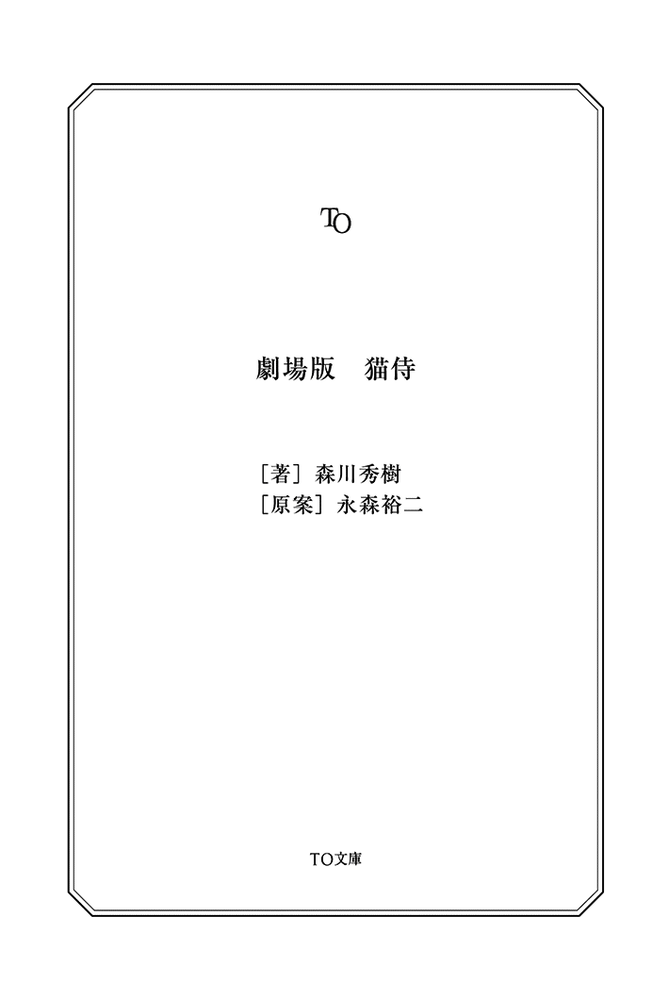

| 劇場版 猫侍 (TO文庫) | |
| 森川秀樹 & 永森裕ニ | |
| (2014) | |
猫を、斬って欲しい──百人斬りと噂される浪人、斑目久太郎は奇妙な依頼を受ける。 依頼主は犬派である組の若頭。対立する猫派の組の白猫、玉之丞が御奉行の猫と縁組することになった為、それを阻止してもらいたいという。蓄えの心許ない久太郎は、渋りながらも暗殺に赴く。しかし、玉之丞を前にどうしても刀を振り下ろすことができず......。 誰にも打ち明けられない過去を背負う不器用な侍が、一匹の猫に癒され、己自身の〝強さ〟と向き合う異色時代劇。

劇場版 猫侍
一
流れ者の侍、斑目久太郎は、先程から背後のあれが気になって仕方がなかった。
「......」
蝋燭の火がゆらりと揺れて、薄暗い室内を照らし出す。
橙色に染まる空間で、胡坐を掻く男どもが、汗の滲む裸の上半身を前に乗り出し、場を囲む。
久太郎もその内の一人だ。無精髭がまばらに生える口元を真っ直ぐに結び、深い彫りの奥にある瞳は半眼にさせ、難しい表情を浮かべて、腰を据えている。但し、裸身を晒してはいない。というか、何故こいつらは脱いでいるのだろうとさえ思っていた。
岩のような体躯の壷振りが、黒い壷にサイを入れ、正方形の盆ゴザに振り下ろした。
どんっ、からん。
「さあ、張った、張った！」
中盆が声を上げる。
男たちは有り金を注ぎ込んだコマ札を、勢い良く叩きつける。「丁！」「半！」。
ここいら近辺を取り仕切るのは二つの組。ここはその一方、相川一家の賭場だ。
続々と札が積まれていく様を、少し離れた所で、初老の貸元がじいっと観察している。高級そうな着物を纏い、煙管を咥えて厳格な貫禄を醸し出すその姿は、明らかに他の者とは雰囲気が違う。落ち着き払っているように見えて、目の色は常に鋭く警戒を怠らない。
油断を徹底的に嫌い、刀を携えて風呂に浸かりそうなこの男は、山田源七郎という名で、相川一家の若頭である。......と、周囲の会話の端々から久太郎は初めて知った。
紫煙をくゆらせる源七郎の様子を、ちらちらと窺っているのは、相川の下っ端連中か。
「......」
しかし今、久太郎が最も気になっているのは、背後に居る、奴だ。
声が聞こえる。
「んにゃあ」
「......」
人間ではない。猫である。
この賭場を訪れた時から、そいつは畳の上で、桃色の毛糸玉に抱きついてごろんごろんと転がっている。もうずいぶん長いこと、飽きもせずに同じ毛糸玉で遊んでいる。
賭場には全くそぐわない。
「揃いました！」
中盆の声に久太郎の思考は遮られた。
場が静寂に包み込まれる。緊迫した、耳に痛いような沈黙。
蝋燭の火が小刻みに震える。源七郎の口から吐き出された煙が漂う。
誰かが唾を飲み下す音が聞こえた。
その時。
久太郎のすぐ左隣から、桃色の毛糸玉が転がり出てきた。
「......？」
かと思うと、次は毛糸玉を追って背後で遊んでいた猫が飛び出してきた。
眉間に皺を刻む半裸の男どもが囲む中で、しかしその猫は彼らの視線を全く怖がらず、無邪気に毛糸玉を追い掛け回す。必然、積まれたコマ札にぶつかり、からからと崩れてしまった。
こいつ、切られるな──
久太郎がそう思った瞬間、周囲の男たちがうんざりとした風に溜息をついた。
まるで、皆、このようなことに慣れているかのように。
「むっ......？」
予想外の反応に困惑していると、「すまねぇな、客人」と中盆が久太郎に謝った。
「少し待っててくだせぇ」
「......」
久太郎はただ、腕を組んで無言を返事とした。その内心は疑問符でいっぱいであった。
常連らしき男が苦笑いを浮かべて愚痴を零した。
「相川さんとこは、これがあるからなあ」
零れたその言葉に、源七郎がぴくりと片方の眉を動かした。
「なにか、仰いましたか？」
重々しい口調。たった一言で、愚痴った客は亀みたいに首を引っ込めて押し黙った。
薄々、そうかもしれないと感付いていた久太郎であったが、今の若頭の態度で確信した。どうやら、源七郎と、そして恐らく相川家の奴らは、猫に対して敬意を払っているらしい。理由は分からない。特に知りたいとも思わないが。
中盆がさり気なく毛糸玉を転がし、それを追ってやっと、猫は鉄火場の外へ出て行った。
よし、おうし、と男たちが首や肩を回したりして、気を取り直す。
場は荒らされたままである。
直さんのかと怪訝に思う久太郎の目の前で、中盆が叫んだ。
「勝負！」
このままいくらしい。
と。
「おいおい、待てよ」
伏せられた壷が開けられようとした刹那、末席からねちっこい声が上がった。
一同がそちらへ顔を向ける。久太郎はちらりと視線だけを動かした。
端の席にへらへらと汚らしい笑みを浮かべる連中が居る。
この賭場を取り仕切る相川一家の人間、ではないことは明白である。
その中の一人、目付きの悪い男が、不健康そうに頬のこけた顔を突き出し、中盆をきつく睨み付けた。
「今の猫、怪しいぜ」
「猫が何か？」
中盆は冷静に応じる。
その態度が気に食わなかったのか、痩せぎすの男は声を荒げた。
「壷振った後に猫が横切るっつうのは、間が良すぎやしねぇかい」
「......何が仰りたいんで？」
男は唇の端を吊り上げ、言った。
「イカサマやってんじゃねぇかってな」
中盆が顔をしかめる。代わりに反論したのは岩みたいな壷振りだ。
「そんな都合よく猫が通るかよ」
苛立っているせいで顔が赤らんでいる。
「そう仕込んでるかもしれねぇ」
末席の男のいちゃもんに、久太郎は呆れと苛立ちを覚えた。下らなさ過ぎる。
壷振りが更に顔面を赤くし、唾を飛ばした。
「だって猫だぞ。猫なんて馬鹿だぞッ」
その物言いに源七郎が敏感に反応する。
「おーい」
低い声音に込められているのは、手下に対する戒めであった。
壷振りははっとして、源七郎に「すいやせん」と頭を下げた。
「失礼ですが」
中盆が姿勢を直し、末席の男に向かって問い掛けた。
「もしや、米沢の方でいらっしゃいますか？」
途端、俄かに場の空気が変わる。じりじりとした、緊張だ。
米沢一家。この辺りを取り仕切るもう一つの組である。どうも穏やかな関係ではないようだ。
面倒な場面に居合わせてしまったのかもしれない。久太郎は顔をしかめた。
いちゃもんをつけた連中──米沢の一味の顔から笑みが消える。
「だったらどうした」
中盆が何か言おうとしたのを、源七郎が遮った。
「何で米沢が相川の賭場にいるんだと訊いている」
若頭の静かな詰問により、漂う緊張が一瞬で、殺気へと変わった。
痩せぎすの男は幾分生じた怯えを隠し、「はんっ」と鼻で笑った。
「自分の縄張りで何しようが勝手だ」
「三郎太は承知なのか」
間髪入れず、源七郎が問うた。
男の表情に若干の焦りが浮かんだ。
「兄貴は、関係ねぇ......」
三郎太とは、米沢一家の若頭のようだ。久太郎は理解したが、すぐにどうでもいいことだとそれ以上は考えないことにする。そんなことよりも半なのか丁なのかを知りたい。
中盆が上目遣いに末席の男を見て、一際冷酷に言った。
「それじゃあ、何されても関係ねぇってことですね？」
末席の男の顔面が歪んだ。
「何だと！」
怒号と共に米沢の連中が短刀を引っ掴んで立ち上がり、一歩踏み出した。その衝撃で、またコマ札がからりと崩れた。
相川の下っ端たちも「やんのか！」と短刀を抜きかけた。殺し合いが始まりかねない。
気の短い奴らだ──久太郎は内心で舌を打ち、片膝を立て、素早く腰を上げる。同時に鞘を握り締め、畳を貫くつもりで垂直に振り下ろした。
ドンッ！
腹の底に響くような重低音、それだけで興奮した一同の動きがぴたりと止まった。
腰を上げた久太郎に気付き、相川と米沢の連中は、顔を引きつらせて後退りした。
源七郎の隣に座っている手下が「ひぃ」と声を漏らす。久太郎の顔に覚えがある様子だ。
源七郎だけは表情を変えることなく、成り行きをただ見守っている。
壷振りに対し、久太郎は短く言った。
「開けろ」
「はい？」
「壷。開けろ」
壷振りは「へ、へい」と慌てて壷を上げ、サイの目を確認しようとした。
すると、それを見計らっていたのかどうか、場を離れていた猫がぴょんと現れ、二つのサイに飛びついた。そして、小さな両手でつつき始めてしまった。
「あ、こら手前！」
壷振りが壷を振り上げた。
すかさず源七郎が言う。
「そいつを、どうするつもりだ？」
壷振りは片腕を思い切り高く上げた状態で固まり、源七郎に向かって即座に愛想笑いを浮かべ、「どうです。似合います？」と壷を自分の頭の上に載せた。反射で猫に手を出そうとしたのを、苦し紛れに誤魔化したらしい。
「......」
久太郎は小さく溜息をつき、手元を見ずに本差と脇差を腰に差した。馬鹿馬鹿しい。場に背を向け、すたすたと歩き始めた。
「客人」
その背中に声が掛けられた。源七郎だ。
「申し訳ねぇ。懲りずにまた来ておくんなさい」
そのつもりはない。そう思いつつ、久太郎は無言で去っていった。
「......ちっ」
対峙していた相川と米沢の連中は、すっかり勢いをそがれてしまい、気まずく、ただ目を逸らし合うしかなかった。
猫はサイに飽きたらしく、また桃色の毛糸玉にじゃれ付いている。
久太郎の姿が見えなくなってから、源七郎が隣の手下に尋ねた。
「知った顔か？」
あっしも詳しくは知らないんですが、と前置きしてから、手下はこう答えた。
「噂では、百人斬りの浪人が長屋に流れ着いたとかって......」
末席にいた米沢一家の男の耳が、器用にその言葉を捉えた。
「百人斬り......？」
そして、賭場の隅にもう一人。
「百人......！」
文字通り流れ聞こえてきた噂を耳にし、期待に胸を膨らませる若い侍が居た。
二
翌朝。真っ白な日差しが降り注ぐ、長屋。
隙間風なんて当たり前、思い切りぶつかれば簡単に崩れ果ててしまいそうなボロい住居が連なっている。
くたびれた着物姿の子供たちが、朝っぱらからチャンバラごっこに精を出す。
えいっ、やあっなどと声を上げて遊ぶ子らに、大人たちは微笑を送る。
しかし、そんな長屋の一角に在る部屋の中で、彼は腕組みし、溜息をついていた。
流れ者、斑目久太郎である。
「ふうむ......」
たくさんの広げられた傘に囲まれている。まだ糊が乾き切っていない。部屋の隅には傘の骨や、刷毛など、傘貼りの道具一式が置かれている。
久太郎は傘屋なので──はない。
いわゆる、副業である。と言っても、今のところ、本業と呼べる仕事はないのだが。
それ故に、当然ながら、稼ぎが非常に心許ない。
畳の上に有り金を並べ、数えてみようとしたところ、数えなくとも一目で計算できた。
「傘、作るか......」
久太郎は無意識に溜息をもう一つ漏らすと、少ない貯えを壷に戻した。
落ち込む久太郎の住む部屋の外。
腰を屈め、こそこそと中の様子を窺う者の姿があった。絵に描いたような挙動不審を体現しているこの男、昨夜、賭場から去り行く久太郎の背中に、羨望の眼差しを向けていた若い侍である。名を、前場新助という。
今年で二十八になったが、童顔である為に実年齢より十歳も下に間違えられることがしばしばで、密かな悩みの種である。甘く見られてしまうのは心外なのだ。
新助はそんな表情を引き締め、小さく咳払いし、何やら練習を始めた。
「拙者、しがない浪人、前場新助と申す。......貴殿に頼みがあり、参った。あ、いえ、参りました......！ 参りました？ あれ、負けた訳では......」
不自然に瞬きが多い。新助は背筋を伸ばし、腿に両手をぴしりと張りつけた。
がちがちに緊張した若侍を見て、チャンバラごっこに興じていた子供の一人が、悪戯っぽい笑みを浮かべ、駆け寄った。
「ていっ」
間の抜けた掛け声と共に、新助の脚を棒切れで叩く。すると他の子供たちも加勢した。
「貴殿に頼みが......、お願いが......、貴殿を見込んで......」
ぺしぺしぺしぺし。
「って、痛えよ！」
怒鳴られ、子供たちは一瞬だけ手を止め、新助を見上げた。が、「えへへ」と笑顔を浮かべてすぐに攻撃を再開した。心なしか、さっきよりも嬉しそうである。
「こ、こいつらッ」
新助はムキになって掴み上げようとしたが、するりとかわされてしまった。
待てこらと追いかけようとした新助だったが、背後から聞こえてきた「ひゃ」という短い悲鳴に驚き、足を止めた。
振り返ってみると、五、六人の厳つい顔つきをした男どもが突き進んでくる。
「......！」
米沢組の連中だ。どうしてこんなところに？ 新助は疑問を抱いたが、分からない。とにかく関わらない方が無難だ。百人斬りというあの方に用があったのだが......。
新助はとにかく、そそくさと物陰に隠れ、そうっと覗き見た。何故かさっき逃げたはずの子供たちも、彼の足元で身を潜めている。
一団は、なんと久太郎の住む家の前に立ち止まった。その中には、昨晩、相川の賭場で、猫に威勢良くいちゃもんをつけた、末松という痩せぎすの男もいる。
新助は、危機感を覚えた。あの方に、米沢が何の用だ？ まさか昨日の仕返し？ ならば止めなければ。しかし、自分ごときでは......。
「こちらです」
新助がうじうじしていると、末松が低姿勢で誰かを促した。
「あれは......！」
促されて前に出てきたのは、他の連中とは全く異なる風格を漂わせる、恰幅の良い男だ。
米沢家の親分、米沢清兵衛の息子で若頭、三郎太である。もうすぐ四十路のはずだが、髪は黒々としており、肌は健康的に焼けている。新助とは違った意味で、若々しい。ちょっと悪い飄々とした親父、という感じである。
「若頭が、直々に......？」
何故だ？ 新助は考えてみたが、分からない。
三郎太は、黒々とした髪を両手で後ろへ撫でつけ、髷の位置を調整し、鼻の下の筆で描いたような髭を少しだけ触った。それらが済んでから、「ふんっ」と大仰に襟を正し、何の躊躇いもなく木戸を開けた。
「御免！」
今日は退散した方がよさそうだ......。
新助は、好奇心から首を伸ばす子供らの頭を押さえ、一緒にその場を後にした。
がらっと勢い良く戸を開け、久太郎の了解も得ず、男は部屋に踏み入ってきた。
「斑目久太郎という御浪人は、お主か？」
後にその手下どもが続く。
入り口に背を向け、黙々と傘を貼っていた久太郎は、無遠慮な連中を肩越しに睨んだ。
仕事の邪魔だ出て行けという意を視線に込めたのだが、先頭の男は気にせず、はきはきとした口調で自己紹介を始めた。
「拙者、この辺りを取り仕切る米沢一家の若頭、米沢三郎太と申す」
「......」
この男が米沢の若頭か。なるほど。訊いていないのに教えられてしまった。しかし、と久太郎は訝った。その若頭が俺に何の用だ。報復？ まさか、手下をビビらせただけだぞ。
僅かに警戒心を抱いた久太郎だったが、杞憂であった。
「夕べの賭場では大変失礼した」
素直に謝り、後ろに控える、手下たちに「おいっ」と促した。
「失礼つかまつまつ」「つかまりました」「ま、まつりました......」
不器用で噛み噛み。不揃いの見本のような謝罪であった。
久太郎は無視し、睨むのを止め、作業に戻った。
その背中に三郎太が声を掛ける。
「お主の腕を見込んで頼みがある」
「......」
久太郎は背中越しに草履が擦れる音を耳にした。
「立ち話も何だ。上がらせてもらおう」
「上がるな」
久太郎は手を止めずに重々しく言った。三郎太はぴたりと動きを止めた。
「......立ち話も何だし」
「俺は忙しい」
久太郎はぴしゃりと言い返す。
「邪魔だ。さっさと出て行け」
手下の一人が「手前！」と声を上げた。
「いい加減にしろよ。傘置いてこっち向きやがれ！」
「まあまあ」
三郎太は憤る手下を制し、いやに愛想の良い口調でこう尋ねてきた。
「あんた、銭は好きか？」
ぴくり。久太郎は反応し、刷毛を動かす手を止めた。
「俺は好きだ」
その反応を見逃さなかったらしい三郎太は満足そうに言う。
「ここに三両ある。話を聴いてくれたら、あんたのもんだ」
「......」
話を聴くだけ。そんな訳がないだろう。聴いたが最後。確実に、厄介な仕事を任されるのは目に見えている。なるべく面倒事には、関わりたくない。だが......。
「......」
久太郎は糊でべたつく手元を見下ろす。さっき数えた有り金を思い出す。
情けないことに、気付くと身体ごと三郎太の方を向いていた。
米沢の若頭は愉快そうに笑った。
「そうこなくっちゃいけねぇ」
「それで......」
問題は仕事の内容だ。
「俺は、何をすればいい？」
問われた三郎太の顔から笑みが消えた。代わりに渋面が浮かび上がり、真っ直ぐに久太郎の目を見据える。そしてこう答えた。
「相川の猫を、斬って欲しい」
しんと静まる室内。久太郎は、思わず声を漏らした。
「......はっ？」
入ってきた時と同様、久太郎の了解を得ぬまま、三郎太は勝手に語り始めた。
「長きにわたり続いている米沢一家と相川一家の抗争......。それは先代から続く、犬派と猫派の争いだ。事の発端は三十年前、俺がガキの頃だ......」
若頭は当時を思い出しているのか、辛そうに顔を歪める。
「相川の猫がウチの番犬を引っ掻きやがった」
その犬を可愛がっていたのか、三郎太の瞳が若干潤んでいる。
「つまり、そういうことだ」
「......」
相川一家は猫派。昨日の賭場での猫の闊歩はそれで頷ける。米沢一家は犬派。若頭が言うのだから真実なのだろう。それは分かった。しかし、だ。
「俺に猫を斬らせて、下らん喧嘩に拍車を掛ける手助けをしろ、というのか？」
馬鹿らしい。そんなことに俺を巻き込むな──久太郎は露骨にうんざりする。
「手前、下らんだとッ。もっぺん言ってみろ！」
不健康そうな痩せぎすの男──末松という名前らしい──が声を荒げた。それを「お前、うるさい」と三郎太がいなし、話を続ける。
「引っ掻き事件以来、営業妨害、雇用人同士の殺傷事件を機に双方武装を開始、町を二分する睨み合いが長く続いたが、近頃やたらと相川勢がちょっかいをだすようになってきた。その理由はな......」
三郎太は間を置き、上半身を乗り出して、苦々しく言った。
「新しく着任した御奉行様が、あろうことか......、猫好きなんだよ」
手下たちが悔しそうに「チクショウ......！」と漏らした。
「......」
巷の動物愛好事情なんぞに興味はない。久太郎は三郎太に背を向けようとした。
しかし、「未だ話は終わってねえ」と止められた。
「更につまらぬことに、今度、相川の猫と御奉行の猫が、縁組することになっちまった」
手下たち、特に末松が切なそうな顔で俯く。もう帰れと思った。
「この縁談が首尾よく組まれると、相川一家は奉行を身内に持つことになり、我ら米沢一家は潰される」
「......」
「何としてもこの縁談は潰さねばならない。そこで、貴殿にお願いしたいのだ」
話が戻った。三郎太は懇願する。
「縁組する相川の猫を、斬って欲しい......！」
久太郎はかっと目を開いた。片膝を立て、刀の柄を握って居合いの構えを取った。
手下どもが後退りする。三郎太も驚いて上半身を仰け反らせる。
「さ、三両！ ......猫を斬るだけで、三両だ！」
三両もあれば蕎麦が千杯は食える。確かに破格だ。壷に納めてある現在の貯えは一両の半分にも満たない。しかし──
「馬鹿にしているのか？」
「人斬りのあんたなら、猫なんて朝飯前だろ」
「そういう問題ではない」
猫を暗殺するなんてせこい依頼、三両出されても、俺の誇りが許さな──
「五両！ 成功したら、あと二両出すッ」
──ぴくり。
久太郎は唾を呑んだ。
手下連中もごくりと喉を鳴らした。ご、五両ですかい？ なら自分が......！ いやいやあっしが！ などと言って挙手して前に出てきそうな雰囲気である。
久太郎は努めて、厳しい声音で尋ねた。
「......何故、俺だ」
三郎太は居住まいを正しながら答えた。
「これは、暗殺だ。誰が何と言おうと、暗殺だ。面が割れてる俺たちがやるわけにはいかん。物盗りが邪魔な猫を殺した......。それだけのことにしたい」
久太郎は得心した。なるほど、それで流れ者である俺のところに。
「悪い話ではなかろう？」
言いながら、駄目押しとばかりに、三郎太は懐から小判をチラつかせた。
背に腹を替えることは、できん。金を稼ぐとは何時だって、辛いものなのだ......！
そんな風に自分に言い聞かせ、久太郎は刀の柄から手を離し、「それで」と、片膝を曲げた。
「......どんな猫だ？」
三
陽が沈み、夜が更けた頃。
久太郎は相川邸の塀に梯子を立て掛けた。どうやって忍び込もうかと思案しながら長屋を歩いている時に、埃まみれで放置されていたこれを見つけたのだ。今一度、周囲に人影がないか確認し、登る。
瓦の上で身を屈め、梯子を持ち上げた。慎重に、塀の内側、裏庭へ下ろす。手入れが行き届いている庭園だ。申し分ない。梯子は木の陰に隠せそうだ。標的を斬り、再びこれを使って外へ出る。それから人気のない場所に捨て置けばいい。
ここまでは予定通りだ。三郎太から渡された屋敷の見取図は頭の中に叩き込んである。この裏庭を抜け、真っ直ぐ進めば、標的の居る部屋のはず。
砂利の敷かれた庭を、慎重に進む。
三郎太の言葉が脳内で再生された。
本家の西屋敷の奥にある猫部屋。ここに鎮座している猫を、斬ってくれ──
久太郎は、広々とした部屋の真ん中で、ごろんと寝転ぶ猫の姿を想像した。
俺は何をやっているのだろうと思った。
「......これは、仕事だ」
久太郎は木々に身を潜め、邸内を窺った。渡り廊下に点々と、蝋燭の火が灯っている。
その時、人が現れた。久太郎は闇に溶け込み、じいっと見つめる。
若い女中だ。大事そうに盆を持ち、急ぎ足にやって来る。二十歳くらいか、未だ微かにあどけなさが残っている。薄暗い中でも、透き通るような肌の白さがはっきりと見て取れた。桜色の小さな唇は、少しだけ微笑んでいるようだ。
女中は、久太郎が入り込もうとしていた座敷の前で止まり、畏まった。
「お待たせいたしました。梅です」
耳に心地良い涼やかな声音。まさか猫に言ったのか、と訝ったがそうではなかった。
声を掛けられ、障子が開いた。もちろん猫ではない。猫ではなかったのだが......。
「なっ......？」
久太郎は虚を突かれた。
中に居たのはガタイの良い、屈強そうな髭面の侍だったのだ。どう見ても猫の世話係とは思えない。剣の心得がある男だと直感した。そんな者が、何故、あそこに？
男は手に持った杯を呷り、女中、お梅に対し乱暴に言った。
「早くしろ。さっきからニャアニャア鳴いて敵わん」
お梅は特に同意を示すこともなく、さっさと中へ入って行った。
部屋を出て廊下に座り込み、次の酒を注ぐ粗野な男を、久太郎は観察した。
猫好きではないらしい。むしろ、嫌いなのかもしれん。相川一家の人間ではない？ となると、雇われの者ということか。......まさか。
「猫の、用心棒......？」
一昨日までの久太郎であったら、そんな訳あるかと切り捨てるところだが、今の彼は違った。暗殺の為に自分が雇われるくらいである。猫の番がいても、おかしくはないと、案外素直に納得できてしまった。
それはそれとして、猫番の存在は予定外である。
「......」
久太郎はせめて、お梅という女中が居なくなるまで待つことにした。
用心棒の男は美味そうに酒を飲んでいる。
そろそろ睡魔の訪れを感じ始めた頃。
すうっと障子を開き、お梅が出てきた。軽くお辞儀し、行こうとする。
ところが、猫番がおもむろに、お梅の裾を足で押さえた。
若い女中は露骨に迷惑そうな表情を向け、若干の怯えを交えた声で問う。
「何ですか」
「何でもない」
猫番は濃い髭の中で、にたりとした笑みを浮かべた。
「......！」
久太郎の身体が反射的に動いた。ざりっと、足元の砂利が微かに鳴ってしまう。
「放して下さいッ」
言われて、用心棒は意外とすんなり足を上げた。
お梅は軽く男を睨み、そそくさと逃げるようにしてその場を去っていった。
後姿を見送りながら、男はげっぷをし、杯を飲み干す。
久太郎は、無意識に張り詰めた緊張が緩和し始めるのを感じた。
と。
用心棒が空になった杯を、いきなり久太郎に向けて投げつけた。
「くっ！」
久太郎は砂利を蹴り、素早く杯をかわした。
後ろの木に当たり、鋭い音を立てて破片が飛び散る。
やられた。完全に陰から姿を露にした久太郎は即座に、刀に手を掛けた。
「動くな」
有無を言わせぬ口調。男の態度は先ほどまでのそれと、全く違っていた。
久太郎は言われた通り、動きを止める他ない。
「俺が今叫べば、あっという間に囲まれるぞ。......刀を置け」
仕方なく、久太郎は刀を置いた。男から目を逸らさず。......その際、石を隠し握った。
「物盗りか？」
久太郎は答えない。隙を窺う。
「......まあ、いい。俺は銭にもならん諍いはせん。有り金置いて出てけ」
「......」
「はよ......」
猫番がしっしと片手を振り、一瞬だけ目を逸らした。
久太郎は機を逃さず、握っていた石を投げつけた。半分は仕返しの意を込めて。
ぎょっとして、猫番は石を避ける。酔いが回ったらしく、よろりと体勢を崩した。
障子に小さな穴が開く。
久太郎は瞬時に刀を拾い上げ、庭を駆け抜ける。
「ぬうっ......！」
足を踏ん張り、猫番は抜刀しようとしたが、遅い。
久太郎は刀を男の目の前でぴたりと止めた。蝋燭の火を反射し、橙色に煌く切っ先が、鼻頭を僅かに掠める。
「......はやっ」
ふらつく足で後ずさりする猫番。声と共に、むわりと酒臭い息が漂う。
「......おい、分かった......、参った、参った」
久太郎は無言で睨み続けた。俺の前でげっぷをするのだけは止めろと思いながら。
「飲んで勝てる相手じゃねえようだ......。お主、何しに来た？」
「......」
「物盗りじゃねえんだろ？」
ぎくりとした。幸い、剣先はぶれずに済んだ。
久太郎は刀を向けたまま、絞り出すように言った。
「......ね......こ」
猫番は「は？」と首を傾げた。
久太郎は短く吐き捨てた。
「猫」
聞いた猫番はきょとんとし、すぐに吹き出した。
「こりゃ驚いた。まさか本当に猫に刺客が来るとは！」
「......」
猫に用心棒が居るとも思わなかったと、久太郎は心の中で言い返した。
猫番は「くっくっ」と笑いを噛み殺す。
「好きにしろ。御猫様の為に命を落とすのはごめんだ」
芝居がかった調子で久太郎を猫部屋の方へ促した。
「幸い給金は前払いでな。宿替えを考えてたとこだ」
そう言って、猫番はさっさと庭に降りてしまった。あっさりとしている。雇われ者とはこんなものか。
「化け猫に気を付けな」
忠告のような冗談は無視し、久太郎は座敷へ行こうとした。
すると用心棒が問い掛けてくる。
「お主、名前は？」
もう会うこともないだろう相手だ。教えてもかまわないか。ぼそりと答えた。
「......斑目」
「まだらめ？ 変な名前」
とぼけた調子で言われる。ほっとけと思った。
「某は島崎新右衛門だ......。って、おい」
阿呆そうな名前だなと心中で返しながら、久太郎は背を向け障子を開けた。
四
息の詰まりそうな静寂だ。
久太郎は呼吸にも気を遣いながら、そろりそろりと進んでいく。目を動かし、耳を澄ませて辺りを見回す。人の気配は、皆無。
抜いた刀を右手に持ち、左手で襖を開ける。一枚、二枚......。
三枚目の隙間から、灯が零れている。ここだ。
久太郎は、腕が震えそうになるほど、そうっと襖を横に引いた。
ちりん。
鈴の音が響いた。すぐに消えた。小さな音。
部屋の真ん中、綺麗な草色の畳の上で、白い猫が久太郎を振り返っていた。
尻をこちらに向け、寝ていた様子。
大きな白い饅頭が、ぼてっと置かれているかのようである。
三郎太から名前は聞かされている。......玉之丞だ。
「......」
久太郎は後ろ手に襖を閉めた。
玉之丞は現れた刺客を恐がる風もなく、くわっと欠伸をした。
久太郎は一歩、二歩と進み出て、柄を両手で握る。
玉之丞は何を思ったのか、四本の脚で立ち上がり、久太郎に近寄って足元を嗅ぎ始めた。
ひくひくと小さな鼻が動く。合わせて真っ白な尻尾をふりふりと振る。
「......」
胸の中で、正体不明の何かが疼き始め、久太郎は掌に汗を滲ませた。
謎の感覚は俺を、何処かへ引き摺り下ろそうとしている？──
久太郎はその何かを振り払うように、刀を上段に構えた。
玉之丞は臭いを嗅ぐのを止め、少しだけ離れると、信じられないことに、ごろんと仰向けになった。覚悟を決めたのだろうか。まさか、遊んで欲しいという訳ではあるまい。
無邪気な瞳が見上げてくる。対し、久太郎は冷徹な目を向けた。
「おい、猫」
久太郎の声に反応したのは猫の尻尾であった。
久太郎は手汗で滑らぬよう、柄に込める力を強めた。
「......悪く思うな」
その言葉をどう捉えたのか、玉之丞はクリクリの瞳を輝かせ、小さな身体をくねらせた。
恐怖に慄き、逃げようとしているのか。......その割には全く動けていない。
無防備だ。無防備過ぎる......！
「にゃあ」
久太郎は刀を振り上げたまま、固まってしまった。
「......」
じっとりと額に浮かぶ汗が、玉になり、こめかみをゆっくりと流れて行く。
「にゃあ？」
その鳴き声は、何とも言えず、切ないものであった。
「くっ......」
もう、鳴かないでくれ。もう、これ以上、耐えらん！
「くおおっ......！」
これがいわゆる断腸の思いである。
白い毛に埋もれている首輪の鈴が、チリンと静かな音を鳴らした。
一
翌日の早朝。ここは、穏やかな日差しの降り注ぐ、相川邸の裏庭だ。
お梅は、庭に面した板張りの廊下を、足袋を擦らせて歩く。両手で持つ盆の上に載せられた、小さな器を見下ろして、微笑を湛える。玉之丞の朝食だ。
お梅は玉之丞がむしゃむしゃとご飯を食べる様を眺めるのが、とても好きなのである。小さい身体をしてぺろりと平らげられたら、自分も嬉しくなるものだ。
その前に、髭面の用心棒と顔を合わせなければならないのが、億劫ではあるのだけれど。
お梅は、昨晩いきなり裾を踏まれたことを思い出し、寒気を覚えた。
次は避けてやる。そんな決意を抱きながら、猫部屋の前で足を止めた。
「失礼致します」
畏まり、お梅はそっと障子を開ける。開けて、「あれっ」と小首を傾げた。
「猫番さんが、いない......？」
どんどんと畳を踏み鳴らし、駆けつけた若頭、源七郎は手下を押しのけ進み出た。一昨日の晩、久太郎が訪れた賭場で、煙管を吹かしていた男である。
「邪魔だ！」
ここは猫部屋だ。普段は親分の寵愛を受ける玉之丞が独占しているのだが、今朝は屋敷中の手下たちが詰め掛けている。
皆、一様に眠気の吹き飛んだような顔で、部屋の中央をじっと見下ろしている。
強引に前へ出てきた源七郎も、ようやくそれを目の当たりにした。
「これは......！」
畳に血痕がある。そしてそれを引き摺ったような痕も。
源七郎は下唇を噛んだ。誰にともなく、苦々しい口調で問う。
「玉之丞の血なのか......？」
手下の一人、下駄のように角ばった顔立ちで、眉毛の濃い、鉄五郎が首を振った。
「分かりません。探しているんですが、何処にもいなくて......」
続きを口にはしなかったが恐らく、死体は他の場所に捨てられたとでも考えているのだろう。他の者も同じようなことを想像している、そんな表情だ。
源七郎はそこではっとし、辺りを見回した。
「猫番は、どうした？」
鉄五郎は沈んだ調子で答える。
「奴の姿も、見えないんです......」
源七郎は舌打ちをした。なんということだ。だから雇われの人間というのは信用ならん。
「ひぅひぅ......」
奇妙な声が聞こえた。源七郎は顔を上げる。
お梅が部屋の隅で立ったまま、涙を堪えている。あまりに懸命に耐えている為に、かなり変な顔が出来上がっていた。
現場を発見したのは猫の世話係であるこの女中だ。源七郎が質問する。
「誰がやった？」
お梅は泣くのを我慢し、それでも声を出そうとして、「ひぃひぃ」と変な呼吸をした。
「わ、分かりまひぇん......」
源七郎は続けて尋ねた。
「怪しい奴を見なかったか？」
「見てまひぇん。......ひぃひぃ......」
もうほとんど涙声ではないか。源七郎はうんざりとする。
「泣きたきゃ泣け。はっきりしろッ」
「泣いたら......、負けだと......、母しゃんが......」
「この場合、いいだろ。そもそも誰と戦ってんだ」
「い、色々ですぅ......！」
そいつは難儀なこったと、源七郎は思ったりは全くしなかった。
鉄五郎が四角い顔を上げた。
「兄貴、猫番の野郎を探しますか？」
どうやらあの用心棒が玉之丞を殺したのだと疑っているらしい。姿が見えないのは殺して逃げたからだ、と。確かにその可能性は否定できない、だが。
源七郎はかぶりを振った。
「奴は銭にならないことはやらねぇ。それより、親分はどうしてる？」
「まだ、寝てます」
鉄五郎の返答を聞き、源七郎は安堵した。相川一家の親分である相川平八は、まだこの件について何も知らないということだ。でき得るならば、そのまま何も知らないでいて欲しい。不祥事への叱責を恐れてではない。老いて弱り始めた親分を、愛しい玉之丞の悲報で悲しませたくはない、その一心だ。
だが、いずればれるだろう。
それに、そうだ。玉之丞がいなければ当然、現在進行中である御奉行の猫との縁組が破綻してしまう。それは致命的だ。
「......」
どうするか。源七郎は血痕を憎々しげに見下ろし必死に考えを巡らせた。事件が親分に発覚せず、縁組が滞りなく進められる為の手段。要は、猫がいれば問題ない──
源七郎は閃いた。この危機を乗り切る方策を。危ない橋ではあるが、これしかない。
「鉄五郎」
「はい」
「このこと、親分には言うな」
「えっ？ ですが......」
当惑する鉄五郎を、源七郎は片手で制した。予想の範囲内の反応だ。
「考えがある」
少しは落ち着いてきたらしいお梅を見やり、「おい」と呼ぶ。
「ひゃい？」
「部屋を綺麗にしろ。血、一滴も残すんじゃねえぞ」
「ひゃい！」
お梅は裏返った声で返事し、部屋を飛び出していった。さすがに堪え切れなかったか。
その背中を見送り、源七郎は「いいか」と全員に言い聞かせる。
「今からお前ら町に出て、玉之丞の代わりを探して来い」
しんと静まる猫部屋。
鉄五郎がぼそりと言った。
「そんな無茶な......」
「親分を泣かせたいのか？」
「替え玉なんて、親分すぐに気付きますよ......」
鉄五郎は恐縮しながらも、もっともな意見を口にする。
源七郎は眉をひそめた。確かにそうだと思う。いや、そういえば最近......。
「親分は近頃、目が弱ってる。この間も鯵を鯛だ、美味いと言ってた」
「それは目じゃなくて、舌では......」
いちいち的を射た主張をしてくる鉄五郎に、源七郎はかちんと来た。
「四の五の言わずに行ってこい！ 他にどうしようもねぇだろうが！」
ドスの利きまくった迫力に気圧され、鉄五郎たちは一斉に部屋を後にした。
「ふんっ......」
手下たちの足音が遠ざかっていく。
猫部屋に一人となった源七郎は、血痕の傍らにしゃがみ、改めて覗き込んだ。
血を指で採り、目を皿のようにして見つめる。
「......んっ？」
色と艶、そして臭いを嗅ぐと──そこには確かな違和感があった。
二
朝の長屋にて、久太郎の家を隙間から覗こうとする若い侍がいた。
今日も前場新助である。
その新助をにやにやと見て、忍び寄る複数の影もあった。
昨日と同じく新助は真面目に表情を引き締め、練習を始めた。
「拙者、前場新助と申す......」
すると待ってましたとばかりに、影が駆け出す。棒切れを持つ、小さな影だ。
「貴殿に頼みがあり参った。......貴殿を見込んで......、見込んで......」
ぺしぺしぺしぺし。
「って、だから痛えよ！」
またもや子供たちが、喜び勇んで新助の脚を叩いて遊んでいるのだ。
眉を怒らせ、ひっ捕らえようと腕を振り回す新助。
ちょこまか避ける子供たち。実に楽しそうである。
悪戯された新助は堪ったものではない。自分にはやるべきことがあるのだ。
それにしてもと彼は思う。これではまるで昨日の繰り返しだ。だったら、米沢の連中がまたどかどかやって来るのか？ いや、そんなうまい具合に──
なんて考えていると、背後からどかどか足音が聞こえてきた。
「えっ......」
まさかと思って振り返ると、そのまさか。米沢の連中がやって来たではないか。
「げっ......！」
新助は子供たちを連れ、急いで物陰に隠れた。
膝を折って様子を窺いながら、新助は祈った。明日はこうでありませんようにと。
来たか──
木戸越しに複数の足音が聞こえた。久太郎の中に緊張が走る。努めて、端からは冷静に見えるよう、何事もなかったように、傘貼りの作業を続けた。
がらりと戸が開き、今日はご免とも言わず、三郎太と末松たち手下が入り込んできた。
三郎太は両手を腰に当て、大きく唇を持ち上げる。
「斑目殿、よくやってくれた。相川のとこは、公にはしていないが、猫を殺されたと大騒ぎだ」
久太郎は背を向けたままで、黙々と手を動かし続ける。
米沢の若頭はそんな態度に不平を述べることもなく、瞳に期待の色を浮かべた。
「して......」
気付かないフリをして無視する久太郎。胸が高鳴ってくる。何を期待しているのかは分かっている。ないのは仕方がないかと勝手に納得して、引き揚げてくれと願う。
が、三郎太たちは身を乗り出し、首を伸ばして目的のものがないか目を配り始めた。
「して......」
三郎太が短い言葉を繰り返した。
予想はしていた。仕方がない。まずはこれだと、傍らに置いてあるわっかを投げた。
三郎太の足元に落ち、チリンと鈴を鳴らしたそれは、玉之丞の首輪である。
久太郎はちらりと横目で窺う。
三郎太は首輪から目を離し、困った風な顔を向けてきた。
「すまん。俺は、あの猫がどんな首輪を着けていたのか、知らんのだ......」
「......」
疑うわけではないのだが。そう前置きしてから三郎太が問う。
「......ムクロは、どうした？」
煮て食べたと言えば、怯えて逃げるかもしれない。久太郎はちょっと考えたが、いやそれはさすがに無理があるかと却下。予定通り、用意していた次の手を使う。
予め開け放してある、入り口とは反対側の戸。その先の庭を、久太郎は顎で差した。目は伏せ、いかにも不機嫌そうに装って。
庭というか小さな空き地、そこに、こんもりと土が盛り上がっている箇所が在る。低い頂上には何処にでも落ちていそうな木の棒が刺さっている。
三郎太はぱちぱちと瞬いた。
「......わざわざ、あんたが？」
「......悪いか」
若頭は腕組みしてしばし悩み、それから「駄目だ」と口にした。
「確認しないわけにはいかん。お前ら、掘り起こせ」
三郎太に指示され、渋々頷き、手下どもが足を踏み出した。
まずい！──久太郎は焦り、咄嗟に、こんなことを言った。
「物の怪は恐ろしい」
「あ？」
片方の眉を吊り上げる三郎太に、久太郎は重々しく告げる。
「剣が、通じぬ」
その重みが伝わったらしく、手下たちは踏み出した足をささっと引っ込めた。
「何をたわけたことを。早くしろッ」
促す若頭に、今日は大人しい末松が、下を向いてもじもじと言う。
「で、でしたら、兄貴、お願いしますよ......」
「こ、この腰抜けども......！」
三郎太はふんっと鼻を鳴らし、墓を見据えた。一歩踏み出す。まずいと久太郎は焦りを覚えた。が、若頭は出した足をすっと戻した。そうして、さり気なく庭から目を逸らす。
怖気付いてくれたようだ。作戦成功である。
「......まあいい」
三郎太は諦め、懐から小判を抜き取った。
「約束の、残り二両だ」
久太郎は肩越しに三郎太を見据え、話題を切り替えた。次はこちらの言い分を聞かせる番だ。包帯を巻いた左腕を差し出す。
「猫番がいたぞ」
二両を差し出そうとする手がぴたりと止まる。その面から動揺が読み取れた。
「えっ......、それは、知らんかったな......」
誤魔化している。この男、本当は玉之丞に猫番が付いていることを承知だったのだ。そういう事情もあって、猫ごときに腕の立つ侍が必要とされた。つまりはそういうこと。
「まあ、その、無事で何より」
「......」
腹立たしくはあるが、しかし済んだことをとやかく言っても仕方がない。何より話をややこしくしたくない。とにかく。
「割に合わん」
相応の報酬が貰えればそれでいい。
「いや、分かっておる。追加を出そう。......一両ほど」
「......猫が五両で、人は一両か？」
駆け引きというか、単なる脅し。三郎太は申し訳なさそうに答えた。
「ちょっと手持ちが......」
久太郎は刀に手を添え、わざと音を鳴らした。かちゃり。ついでに睨む。
びびる三郎太は、「少し待て」と言い、手下どもとコソコソし始めた。
「お前ら、いくら持ってる......？」
「えっ、......銭ですか？」
「そうに決まってんだろ。はよ出せ」
「兄貴、ちゃんと後で返して下さいよ......！」
「ケチケチするなッ」
小声で揉めている。いいからその場で跳んでみろと久太郎が声を上げそうになった時、畳の上に小判と銅貨がじゃらりと投げられた。
「これで勘弁してくれ......」
どよんと俯く末松たちを背に、三郎太が苦しげに言った。
「......」
もう何も出てこないだろう。さあ、傘を貼ろうと刷毛を掴んだ。
三郎太が「斑目殿」と背中に呼び掛けた。
「今回はよくやってくれた。うん」
「......ああ。もう帰れ」
「それでだな、出入りの際には是非、我々の用心棒になっちゃもらえねぇか？」
「断る」
久太郎は即答した。これ以上、こいつらと関わり合うのは危険だ。......やむを得ない事情で。
しかし三郎太は食い下がった。畳の銭を顎でしゃくる。
「その時は、こんなもんじゃねえぜ？」
「......」
「もっと、こう、細かくない小判とか。なっ？」
同意を求められる末松たちだったが、不服そうである。その前に貸した銭を返してくれと思っているのであろう。
凹んでるんじゃねえと三郎太が罵り、手下たちは兄貴のせいじゃないですかという表情を地面に向けて──そんな風にして連中は去っていった。
それから少しして、久太郎は玄関の木戸がちゃんと閉じているのを確認し、畳の上で持ち金を数え始めた。壷に入っている銭と、報酬として貰った銭と。
縦横の列を丁寧に揃えて並べ、気付く。
「んっ？」
指で数えてみるが、数が合わない。壷を逆さに振ってみた。無い。
そこいらに落ちていないか確認していると、押入れの襖ががたがたと音を立てた。
見ると、拳ほどの隙間から、小さな白い手が出てきた。
ひょいと、玉之丞が姿を現す。小さな口に、小判を咥えて。
「！」
久太郎はすぐさま立ち上がった。広げた銭を乗り越え両腕を伸ばす。
玉之丞はぽとりと小判を落とし、尻尾を振った。笑顔に見えるのは気のせいか。
じっとしていると思ったら、捕まえられる直前で器用に横っ飛び。
久太郎は襖に突っ込みそうになったが、寸でのところで踏み止まった。
四本の脚で立つ玉之丞。振り返り、「にゃうん」と鳴いた。
「このっ......！」
久太郎は素早く飛び掛った。
だが玉之丞はもっとすばしっこかった。
数分間の追走劇の後、大の侍を翻弄するだけ翻弄し、白猫は襖の中に逃げ込んだ。
久太郎は即座に襖を閉めた。すとんっ！
そしてそのまま閉めた襖に寄りかかり、へたり込んだのであった。
「俺は......、何をしている......」
これがやむを得ない事情の正体である。
三
広い屋敷の、だだっ広い広間で、一匹の犬が甘えた声で鳴いた。
「くぅぅん」
名前は甚太郎という。薄茶色の毛並みは、丹念に手入れされており艶やかだ。眠そうに瞼を開けたり閉じたりしている。でかい図体を寝転ばせ、ほとんど一畳を占領している。
チリン。
鈴の音が鳴り、甚太郎がむくっと顔を上げた。上げたが、興味よりも眠気が勝ったらしく、すぐ頭を下ろし、目を閉じてしまった。
米沢の親分であり、三郎太の実父である米沢清兵衛が、渡された玉之丞の首輪を見ている。六十歳になり白髪が一気に増え始めているが、むしろ威厳が増している。息子と同様に恰幅が良い、というか、幾分肥えている。顎まわりが横に広がっていた。
向かいには、三郎太と末松たちが得意顔を浮かべて控えている。久太郎宅を辞した後、不平を言い続ける手下たちに、三郎太は「相川を潰せば倍にして返してやる！」と宣言したのである。米沢一家には何故か単純な男たちが多かった。
「どうだい、親父。奴らにひと泡吹かせてやったぜ」
「猫奉行との縁組さえなくなれば、これまで通り対等です」
「......」
三郎太と末松が喜々として玉之丞暗殺の件を話したが、清兵衛は不服そうだ。
息子は反応が悪いなと思いつつも、続けて提案する。
「なあ、いっちょここらで白黒つけようぜ」
清兵衛は首輪から顔を上げ、眉をひそめる。
「白黒って、何だ？」
「戦だよ。腕の立つ浪人を見つけた。あれは金の亡者だ。少しばかり気前よくすりゃ何でもやる奴だ」
「これであいつらもでかい顔出来なくなります」
「だな。出来なくなるな！」
「ええ。そうですよ！」
意気揚々と盛り上がる三郎太たちを、清兵衛は激しく怒鳴りつけた。
「馬鹿もの！」
ビクリと身を硬くする一同。甚太郎も目を覚まし、きょとんとしている。
清兵衛は、皺の増え出した肉付きの良い顔を、怒りに赤くした。
三郎太は心中で身構えた。な、何故、怒っているんだ？ 若頭のくせにはしゃぎ過ぎたか。いや、腕が確かだからと言って外部の者に頼るのがまずかったのか。はたまた、親父には相談せずに猫を殺したのがいけなかったのか──
全部外れであった。
清兵衛は、三郎太が生まれてこの方、見たことのないような剣幕で言い放った。
「動物を殺めるとは、何事か！」
三郎太は、手下たちが唖然とし、心の中で「えっ？」と漏らすのを背中越しに感じた。全く同じ気持ちであった彼は、代表して意見を述べる。
「......だって、奴ら敵だぜ？」
「だったらその敵を殺ればいい」
清兵衛はしごく当然だという風に返した。
それは、まあ、そうなのだが......。三郎太が言い淀んでいると、末松が主張した。
「親分、それじゃあ人殺しになります！」
何を女々しい発言してんだ、そう叱ろうとしたのだが、清兵衛が先に反論した。
「動物を殺るよりマシだ！」
「親父......！」
三郎太は混乱している。待て待て、ちょっと待て。一回、整理しよう。
「俺たちは相川が憎い。だからその猫を殺った。猫は動物だから親父は駄目と言う。でも、人間も動物だ。同じ動物なのに......、えっと......。あれ......？」
末松が「兄貴、整理できてません......」とおずおず言った。
清兵衛は溜息をつき、座り直す。
「動物を殺る奴は許せん」
真面目に改めて言われ、しかし三郎太は納得できない。
「忘れたのか？ 三十年前、うちの犬が奴らの猫に引っ掻かれて......！」
「忘れてはおらん。だが、そんなもの今更どうでもいいわ」
「えっ、......いいの？」
あまりにあっさりとした態度の父親に、ぽかんとするその息子である。
「だいたい、三十年前お前、幾つだ？」
幾つだったかと計算していると、いつの間にか目を覚ました甚太郎が、のっそりと清兵衛に擦り寄っていった。額を押し付け、ふさふさの尻尾を振る。
清兵衛の表情からは完全に怒りが消え、今は穏やか。甚太郎の大きな身体を撫でている。
「三郎太、お前、癒しという言葉、分かるか？」
三郎太の頭にぱっと浮かんだのは、焼き魚である。
「イヤシ？ 食い物か？」
「ふっ、分からんだろうな」
鼻で笑い、両手で甚太郎をわしゃわしゃと触りだす父親に、三郎太は声を荒げた。
「イヤシだかイワシだか知らんが、俺は俺のやり方でシマを守る。親父にも口出しはさせねぇ！」
清兵衛は見向きもせず、甚太郎に向かって、
「分からん奴には分からんか」
犬は口を開け、舌を出した間抜け面で「へっへっ」と言っている。
三郎太はぎりぎりと奥歯を噛み締めた。親父、呆けやがって。分かってたまるかッ。
若頭は立ち上がり、犬と戯れる清兵衛に背を向けて、末松たちを促した。
「......おい、行くぞ」
今頃、相川の奴らは大慌てだ。この千載一遇の好機、逃すわけにはいかない......！
その頃。
こちらは久太郎が侵入した方の屋敷、相川邸の一室、相川平八親分の寝室だ。
寝巻き姿、高価な布団の上で半身を起こしている平八は、六十歳を目前にして、既に頭髪がほとんど白くなっている。糊で固めていない筆先のような、ふわりとした眉も白い。ここ最近、体調が芳しくないのだ。大抵ここで寝ている。が、それは病床に就いて、というだけの理由からではなかった。
平八は、囲まれている。
黒、灰色、茶色、縞々──
様々な猫たちによって。ある者は畳に爪を立て、ある者は隅で丸くなり、またある者は掛け布団の端から顔だけ出し、またまたある者は楽しそうにじゃれ合い中。
ここは平八の寝室であり、もう一つの猫部屋でもあるのだ。
一匹の猫のお腹をこちょこちょし、皺の多い顔を、更に皺くちゃにしてご満悦の平八は「ほう」と驚いてみせた。
「花嫁修業とな？」
傍らに畏まっている源七郎は、猫たちに気を散らされぬよう、集中して説明する。
「玉之丞様は御奉行家に嫁がれる身。行った先で粗相があっちゃ困ります」
実に苦しい言い訳だと源七郎自身、思う。しかし、他に良い案が出なかったのだ。逃げたので捜索中なんて言えば、大慌てするに決まっている。
平八は猫を抱っこしながら、真剣に問う。
「猫の花嫁修業とは、何ぞや？」
源七郎は「へい」と頭を下げ、顔を見られないように答える。
「修業と言うと、少し大げさなのですが......。まあ、つまり、こう御猫様の多い屋敷ですと、万が一のこともあろうかと......」
ちょうどその時、じゃれ合っていた二匹の猫が、お互いの身体を毛繕いし始めた。
「なるほど。言われてみれば」
納得しながらも、平八はしかしと名残惜しそうする。
「屋敷内で隔離していても、駄目か？」
「五寸の隙間からでも出入りしますから」
源七郎は恭しく頷いた。これは嘘ではない。猫というのは狭い隙間ほど、通りたがる。
平八は眉根を下げ、手元の猫の頭を撫でた。
「それは寂しいが、ま、仕方ないか......」
「恐れ入ります」
こちらは上手くいった。源七郎はほっとする。
後は、代わりの猫さえ見つかれば......。
四
食欲をそそる味噌汁の匂いが、ボロ部屋の中に漂う。
小気味良い音を立て、野菜を刻む包丁。夕餉の準備をしている久太郎だ。ぶきっらぼうな態度に比して、手先は器用である。だから、傘貼りもやっている訳だ。
ふと、気配を感じ、襖を振り返った。
「......！」
久太郎は目を見開く。僅かな隙間から細長く白い何かが伸び、くねくねと動いている。何だあれは。もしや蛇......！ と、構えたのは一瞬。
ああ、猫の尻尾だ。
「......」
さっきからがりがり音がするなと思っていたが、自分で開けたらしい。いや別に感心している訳ではない。久太郎は眉間に皺を寄せた。匂いを嗅ぎ、奴も何か食いたくなったのだろうと予測する。しかし、そこまで世話する義理がどこにあるというのか。
久太郎は包丁の柄を、まな板にどんっと叩きつけた。
尻尾がぴょこんと引っ込む。
「......ふんっ」
久太郎は再び野菜を刻み始めた。
その背後でまた細長くて白いものがにょきりと出てきた。
「......」
義理など......。
静かな部屋で独り、久太郎は出来立ての味噌汁を、音を立てて啜る。少し、薄かった。
白いご飯を頬張り、煮干を突っ込む。
視界の端に白い物体が現れた。
「......」
首輪の無い玉之丞は、それだけで野良猫に見えてしまう、ということもない。雪のように真っ白な毛並み。無理に捕まえようとしない限り、逃げ出さない人懐っこさ。
そんなことを思っていると、玉之丞が久太郎の傍で丸くなった。
丸くなり、眠るのかと思えば、片目を開いて見上げてくる。
「......」
久太郎は目を逸らし、箸を置き、もぐもぐ咀嚼しながら逡巡した。
「......」
結果、煮干の皿を玉之丞の前に置いた。
玉之丞が僅かに頭を持ち上げ、両目を開けた。
久太郎は再び箸を手に、食事に戻った。......横目でこっそり様子を窺いながら。
玉之丞は音もなく煮干の皿に近寄り、鼻を寄せ、匂いを嗅いだ。そして──
ぷいっ。
お気に召さなかったらしく、顔を背け、部屋をうろうろし始めた。
「......ふむ。......。......はっ！」
久太郎は何故か落ち込んでいる自分に気付き、ぎょっとした。
夜。
蝋燭のほのかな明かりの中で、久太郎は傘貼りをしている。米沢の若頭からそれなりに報酬を貰いはしたが、未だ十分ではない。他にすることもない。
次々と傘の花が開いていく。
玉之丞はその行程を不思議そうに眺めたり、無意味に転がったりしている。
煮干の載った小皿は置いたままだ。
久太郎は作業に集中し、玉之丞の方を見ないように努めた。だが、そうすればするほど、気になってしまうもの。
「......」
ここに連れてきてから何も食べていないはずである。ごろごろと遊んでいるが、心なしか、今朝よりも元気がないような。......心配している訳ではない。ただ、そう、この部屋で野垂れ死にされても迷惑なだけだ──久太郎は論理的な言い分を脳内で展開した。
そして、作業をしながら煮干を摘む。わざと玉之丞の鼻先を経由させ、口に入れた。
噛みながら、聞こえよがしに言う。
「あー美味い。......この煮干、美味い」
玉之丞の注意が久太郎に、次いで煮干に向けられた。
もう一押しか──久太郎は演技を続行する。
「美味い。これはいける」
玉之丞が動いた。煮干に近寄り、再び匂いを嗅ぐ。
しかし、やはり気に入らなかったらしく、そっぽを向いて離れて行ってしまった。
久太郎は、尻尾の垂れる後姿を苦々しく見送った。
悔しかった。なので、ならば俺が食べると煮干を食い続けた。
「あー、美味い。......あー」
ちょっとしょっぱい。
五
翌朝。
久太郎の家の前に、覗きが日課になりそうな前場新助が今日もやって来ていた。
この日も事前に、頼みを申し込む練習をしようと口を開けた。が、いつもその最中に子供に悪戯され、なんだかんだで上手くいかないことを思い出して、止めた。
きょろきょろと周囲を確認する。よし。悪戯小僧どもはいない。
「今日こそは......！」
深呼吸し、身を引き締め、新助は木戸に手を掛けた、刹那──
「何だこれは!?」
中から突然に大声が聞こえてきて、びくりとした。
愕然とし、久太郎は表情を大きく歪める。目の前で天災が起きたかのような驚きぶり。
洪水か、それとも台風か。いや、違う。
昨晩には、ぱっと咲いていたはずの傘の花が、無残にも引っ掻き回され、ボロボロになっているのだ。
夜遅くまでせっせと作業をしていた久太郎は、怒りに震えた。
和紙を引き裂く爪の跡がはっきりと残っている。間違いなく、玉之丞の仕業だ。
「出て来い！」
激怒した久太郎は怒鳴り、押入れを開けた。
途端にぴょんと、玉之丞が俊敏に飛び出してきた。その勢いのまま跳ね、傘に突っ込んで新たな穴を開けた。
「このっ......！」
久太郎の脳裏を、ここ二、三日の間に起きた出来事がよぎって行く。
殺すのを躊躇し偽装の為に自らの腕を切ったこと、懐に隠して持ち帰ったこと、腹を空かしているだろうと煮干を与えようとした、が、相手にされなかったこと──
それら様々な記憶が、久太郎の中で憤りの火に注がれる油へと変化した。
「......許さん！」
どすんと右足を踏み込み、久太郎は刀に手を掛けた。
──とその時。
「如何なされた!? 先生！」
「はっ......！」
外から聞こえてきた若い男の声に、久太郎は正気を取り戻した。
誰だ。傘屋が回収に来るのはもう少し後だ。だとすれば、米沢の者か。その可能性が高いように思われる。ならば、先生と呼ばれることにも頷ける。奴らにしてはやけに爽やかな声音のような気もするが。
畳の上にちょこんと座り、小さな瞳で見上げてくる玉之丞。
若者のお節介な言葉が飛んできた。
「助太刀いたす！」
迷っている暇などないッ。久太郎は刀から手を離し、慌てて猫を隠そうとした。
すると、玉之丞は勝手に押入れの中へと引っ込んで行った。
それと同時に入り口の木戸が開く。
焦燥に駆られて現れたのは、声音から受けた印象と違わず、純朴そうな若い侍だった。
米沢一家の人間ではない、久太郎はそう感じた。だが、だからと言って玉之丞を目撃されても構わない訳ではない。噂が広まり、三郎太の耳に入るかもしれない。
玉之丞はそこまで考えたのだろうか。いや単に押入れが気に入っているだけであろう。
ふんっ、命拾いしたな──なんて強がっていると若い男が久太郎に声を掛けた。
「先生？」
「......？」
ところで、こいつは誰だと思った。
久太郎は破れた傘の修復を試みているのだが、どうしても専念できない。
その背後では、助太刀だと押し入ってきた若い侍が畏まっている。
これらの傘は一体どうしたのですか、そう問われたら、補修を専門に行っている、というように答えよう。玉之丞がやったとは言えない。
「拙者、前場新助と申します......」
男は名乗り、神妙な面持ちで、勝手に語り始めた。
「三年前に父親が斬り殺されました。仇の素性を突き止めたところ、相手は宗形道場で四天王と呼ばれた剣の使い手......。私ではただ返り討ちに遭うのは必定」
「......」
久太郎は押入れが気になって仕方がなかった。玉之丞が逃げ込み、直後にこの男がやって来たから、きちんと襖を閉め切っていないのだ。
「先生の腕を見込んでお願いしたい。仇を討ってはいただけませんか？」
「......断る。帰れ」
猫の暗殺もそうだが、仇討ちなんてのは厄介事を呼び起こす元凶であって──
隙間から覗く暗闇に、二つの黄色い目が浮かび上がった。
久太郎がぎろりと睨むと、玉之丞は引っ込んだ。
食い下がる新助。
「この三年間、強そうな浪人の集まる酒場や賭場でずっと仇討ちの侍を探し続けてきました。あなた程強い方とは二度と出会えません......！」
米沢といいこの男といい、何処から出回った噂かは知らないが......。
久太郎は焦りを悟られぬよう気を付け、低い声音で言う。
「俺は強くない。とんだ見込み違いだ」
「百人斬りと聞きました」
久太郎は溜息をつく。なんて噂が流れているのだ。
「......帰れ」
「どうしても、お聞き入れいただけませんか？」
久太郎は無言できつく睨みつけた。
新助はその迫力に気圧され後退りしそうになったが、留まり、畳に両手をついた。
「ならば......、ならば拙者に剣を教えて下さい！」
「......は？」
「自己流ながら、拙者も多少は腕に覚えがございます」
予想外の申し出だった。本気らしいことは理解できる。だが。
「それも断る」
面倒なことに変わりはない。
「お願いでござる！」
遂に土下座ときた。綺麗に結われた髷が久太郎に向けられる。
それだけの覚悟があるのならば、誰か手を差し伸べてくれる者もいるだろう。
と、思ったままを伝えようとして久太郎は、目を見開いて声を漏らす。
「あっ......」
土下座している新助の後ろに、とことこと玉之丞がやって来たのだ。
新助の足を嗅ぎ始めた。
「おっ......！」
「......はい？」
新助が顔を上げようとする。
久太郎は慌てて板の間に拳を叩きつけた。
新助はぎょっとして、さっきよりも深く頭を下げた。
ところが玉之丞は全く動じず、新助の後ろで丸まってしまった。
「......！」
久太郎は理解に苦しみ、焦りを募らせる。何故そこで丸くなるのか！
別の意味で丸くなっている新助が、その体勢のまま、懐から三両を出し、置いた。
「月謝としてお納め下さい」
ちゃり。微かな音に玉之丞が反応し、首を伸ばした。
「むっ......！」
「お願いいたします。先生、弟子にして下さい！」
「いや、だから待て」
言いながら久太郎は掌を玉之丞に向けた。動くな、動くんじゃあないぞ。
「なにとぞ！」
玉之丞がむくりと起き上がった。背筋がひやりとし、久太郎は思わず声を出していた。
「分かった！」
「えっ......」
面を上げ、新助はぱっと表情を明るくする。
「ほ、本当ですか？」
「あ、いや──」
渋面でしどろもどろやっていると、玉之丞が「にゃあ」と小さく鳴いた。
新助は耳ざとくそれを捉え、後ろを振り返ろうとした。
久太郎は即座にまた板の間を殴りつける。勢いでそれらしい台詞を言い放った。
「目を逸らすな！」
「す、すみませんッ！」
「行け！」
「は？ はい？」
目をぱちくりとさせる新助に向かって、久太郎は思いつくまま指示を飛ばした。
「走って行け！」
「走る？ ......あっ、なるほど」
新助は得心できたらしく頷いて、嬉しそうに立ち上がった。
「まずは足腰ということですね。先生！」
「えっ？ ......そう、そういうことだ！」
新助は「ありがとうございます」と、きびきび頭を下げて上げて、
「早速行って参ります」
「あ、うん」
喜び勇んで駆け出していってしまった。
途端に静かになった部屋の中で、久太郎は沈んだ声を吐き出した。
「俺は一体、何をやっているのだ......」
額を押さえ、目の前に置かれた三両を見下ろす。
その内の一枚を、玉之丞が極々さり気なく、口に咥えた。
久太郎はすかさず小判をひったくった。
この時間、土手の道を笑顔で全力疾走する侍が多くの人々に目撃された。
六
新助が飛び出して行ってから、しばらくして、久太郎の家の前に、内職の傘を積んだ大八車が停められていた。
「あーあ......、これ......。うわっ......こりゃあ......」
久太郎に傘貼りを頼んでいる中年の傘売り、柿介である。渡されたつぎはぎだらけの傘を開き、確認してぶつぶつと呟いている。
「いやぁ、上手いこと補修したねぇ」
「どうも......」
褒められた。意外と洒落た模様に仕上がったのか。なんて思ったがもちろん勘違いだ。
「褒めてないよ。頼んだ仕事は補修じゃあないんだ」
「......そうか」
「そうかって、分かるでしょ。これじゃ雨が入って来ちゃう。売り物にならないよ」
久太郎はただただ申し訳なく、俯いているしかなかった。やったのは全部、玉之丞であるが、奴を連れてきたのは自分。暗殺を頼まれ金に釣られてしまったのも、自分なのだ。
柿介は困った風に頭を掻きむしった。
「ここんとこ雨続きで猫の手も借りたいってのに......」
それは止した方がいいと心から思った。
「こんなこと初めてだよね。ここらの傘貼り浪人じゃ、あんたが量も出来も一番良かったんだよ。どうしちゃったの？」
「......」
まさか猫に翻弄されているとは、言える訳がない。
「......まだ続ける気があるなら、材料持ってきな」
「すまない......」
ボツとなった傘を返され、新しい材料を貰い、柿介に再度謝罪を述べてから、久太郎は家の中へと戻った。次は玉之丞に邪魔されぬよう、注意を払わなければ──部屋を見渡す。
玉之丞はちょうど、押入れの内側から襖に穴を開け、そこから前足を出し、くねくねとさせているところであった。そこは一度、破られて塞いだ箇所であった。
「......」
久太郎は先ほどの考えを頭から振り払った。注意を払うだと？ 何故そんな必要がある？ それは玉之丞がこの家に居るからだ。ならば、その解決策として取られるべき手段は、自ずと導き出されるではないか。至極、容易に。
穏やかに流れる水が、陽光を受けて煌いている。人気のない河原。
腰まで届きそうな丈の葦が無数に茂り、ゆらゆらと揺れ、ひしめき合っている。
久太郎は大判の風呂敷を背負い、辺りを見回しながらやって来た。夜逃げでもしてきたようである。誰もいないことを確認し、しゃがみ込んで風呂敷を広げる。
中から出てきた玉之丞は、陽の光にちょっと顔をしかめてから、ぐーっと身体を伸ばした。それから周囲の光景に気付き、「にゃうん？」と鳴いた。
「......」
久太郎は風呂敷を拾い、折り畳む。
簡単なことだ。厄介者のこいつを、人目につかない所へ、捨て置けば万事が解決する。
久太郎は、きょとんとしている玉之丞を持ち上げ、川辺まで連れて行った。
置かれた玉之丞はつぶらな瞳でじいっと、久太郎を見上げる。
「......」
何故、今までこうしなかったのか。誰かに見つけられるとまずいと思って。それは事実であろう。だが、冷静に考えられる時間が出来てからは、どうだったのか。どうして、俺は、玉之丞を──
「くそっ......！」
久太郎は見上げてくる瞳から目を逸らし、懐から包みを出す。開いて、玉之丞の足元に置いた。煮干である。嫌いだろうがどうしようもない、これしかないのだから。
久太郎は目を瞑り、意を決して踵を返した。これが最善だと自分に言い聞かせて、来た道をずんずんと歩き出す。が──
「......」
立ち止まり、つい振り返ってしまう。
光り輝く川面を背景に、真っ白な猫はじっと動かず、久太郎を見つめていた。
「......！」
胸が締め付けられ、走って引き返したいという衝動が湧き上がってきたが、久太郎は懸命に堪えた。歯を食いしばり、きつく瞼を閉じて再び歩き出す。
もう一度振り返るのに数秒も要しなかった。
ところが、玉之丞は姿を消していた。
「！」
久太郎はめまいを覚えた。後悔の念を抱いた──いや何故くらくらしている。後悔なんぞしている！ と、理性では思いつつ身体は勝手に玉之丞を探していた。
「......なっ！」
足元にいた。二つの小さな瞳が、もの欲しそうに見つめてくる。
「さ、探してなぞおらん！」
久太郎は吐き捨て、足早に歩き出した。
玉之丞は当然のように、とてとてとついて来る。
更に歩調を速める久太郎。
合わせる玉之丞。
「ついて来るな！」
久太郎は立ち止まり、声を荒げた。
玉之丞はびくりとし、脚を止めた。口が動く──
──鳴く。
瞬時に感じ取った久太郎は、ごつごつとした足場を蹴り、一目散に駆け出した。
背中越しに伝わってくる玉之丞の視線を、振り払いたくて、振り払いたくて。
とにかく走った。
久太郎の疾走するそんな様を見て、やる気を再燃させる若者がいた。
「先生も......、よし......！」
男はよろける身体に鞭打った。前場新助である。
七
「はぁ、はぁ......」
河原からずっと駆け足で長屋まで戻ってきた久太郎は、さすがに撒いただろうと、息を切らしながら後ろを振り返り、ぎょっとした。
玉之丞はいなかったが、何故かへろへろに疲れた新助が追いついてきた。
実は玉之丞は新助だった──そんな訳がなかった。
「せ、先生......、やっぱり、早いですね......」
汗だくで疲れているのに、新助は晴れ晴れとした様子である。
久太郎は、そういえば流れで師になってしまったのだったと思い出していた。
「しかし、感心しました。先生の仰る通り、剣は足腰なんですね」
久太郎はそんなこと言っていない。......言ったか？
「......」
どうしたものかと考えていると──
にゃあと猫の鳴き声がした。
「......！」
久太郎は声のした方へ視線を向けた。玉之丞......!?
ではなかった。見ると、泣き顔で抵抗する子供から、猫を取り上げている男たちがいる。柄が悪くいかにもという感じだ。久太郎を訪ねてきた米沢の一味とは違うようだ。
新助が小声で言った。
「相川の奴らですね......」
「......」
久太郎は理解した。猫派の相川一家だ。
彼らの後ろには荷車があり、そこには網に入れられた七、八匹の白っぽい毛並みの猫が載せられている。猫たちにその網はとても窮屈そうだ。
久太郎は怒りを覚えた。奴らは猫を強引にさらって回っているのだ。しかし、何故？
その答えはすぐに判明した。
下駄のように角ばった顔面の男が、子供から奪った猫を吟味している。
「うむ......、似てなくはない......」
久太郎は悟った。男が持つ猫は白い。玉之丞に似ていると言えば、似ている。連中はそんな猫を集めている様子。白い猫が相川一家では流行中なのか？ そうではない。相川の屋敷から玉之丞が居なくなった為だ。代わりを探している。どうして？ 奉行の猫と縁組させる、替え玉を用意しようとしているのだ。
子供の母親が辛そうな表情で訴える。
「勘弁して下さい。生まれてからこの子とずっと一緒だった猫なんです！」
無視して、下駄顔の男は色んな角度から猫を見ている。
「毛並みも悪くない。ギリギリいけるか？」
「兄弟みたいに育ったんです。ハナコがいなくなったら......」
「そうだな。ふむ。一両出す」
申し出を受け、母親の顔色が瞬時に変わった。きりっと。
「売った！」
売るのか！ と久太郎は叫び声を上げそうになった。
途端に母親の足元で、子供が声を出して泣き始めた。鼻声で、荷車へと運ばれる猫の名前を呼ぶ。
「はなぁこぉー！」
久太郎は歩き出した。戸惑いながら新助もついて行く。家はこの道の先である。
角ばった顔の男が満足そうに他の手下と話している。
「こいつがいれば他は用無しだな。似てねぇし」
「どうしますか？」
「屋敷にこれ以上御猫様はいらねぇ。川にでも流しちまえ」
「......！」
その時、久太郎の脳裏に、川辺にちょこんと座る玉之丞の姿が浮かび上がった。気がつくと立ち止まっていた。そして、荷車を押して行こうとする連中の前に立ち塞がる。
相川の手下の一人が久太郎を睨んだ。
「何だ手前？」
「先生？」
久太郎はただ黙って道を塞いだ。
その迫力に怯む手下たちの後ろから、下駄顔が前に出てきた。緊張気味である。
「......何か？」
問われ、久太郎はそこで初めて、全くの考えなしであったことに気付いた。
「......いや」
ぼそりと言い、道を開けた。
相川の手下たちは拍子抜けする。新助は頭に疑問符を浮かべた。
とそこへ、複数の足音が聞こえてきた。
「おいおい、お前ら何してやがる」
見ると、別の方向からぞろぞろと、米沢一家の末松が仲間を引き連れてやって来た。恐らく、相川の奴らが何やら怪しい動きを見せている、という情報を耳にしたのだろう。
一気に人口密度が増した。
久太郎は俯き、後ろを向いた。まさか暗殺の件をばらされるとは思わないが、念の為。
下駄顔の男は嫌そうに顔を歪め、唾を吐いた。
末松が眼を飛ばす。
「鉄五郎さんよ、猫なら屋敷に売るほど居るだろ？」
「ここいら野蛮な犬コロが多いんでな。保護してるとこだ。善意で」
「それにしちゃ、乱暴なやり方だな」
末松はちらりと泣いている子供を見やった。
角ばった顔の、鉄五郎と呼ばれた男はぶっきらぼうに返す。
「大きなお世話だ」
「何か、困ったことでも起きたかい？」
「ぜんぜん、全く困っちゃいねぇよ」
「だったらいいんだけどよ。あんまり好き勝手しないで欲しいもんだな」
「手前らに指図される筋合いはねぇ」
んだとっ？ おらぁ？ 交互に言葉が投げ合われ、その度に語気が荒くなっていく。
そんな口論の隙を見て、久太郎はこっそり輪から抜け出した。
抜け出し、そのまま帰宅しようとして、踏み止まる。
くるりと振り返り、姿勢を低く、脇差を抜いた。荷車に近付く。
驚いて「先生......！」と呼ぶ新助を尻目に、久太郎は素早く網の一部を切り開けた。
出口の出現に気付いた猫たちが、「にゃ？」「にゃー」とぞろぞろ逃げ出していく。
米沢と相川連中の言い争いはまだ続いている。
久太郎は脇差を戻し、そそくさとその場を離れた。慌てて新助も後を追う。
「実は、お優しいんですね。先生」
口論の場から十分離れた所まで来て、新助が嬉しそうに声を掛けてきた。
久太郎はぎくりとし、だが動揺を悟られまいと、歩きながら肩越しに新助を睨む。
「す、すみません......」
謝る新助から顔を背けた時、微かな物音が聞こえてきた。
久太郎はその音に覚えがあり、視線を向けるとやはり、駆ける猫であった。さっき逃がした内の一匹だ。たたたっ、と家屋と家屋の細い隙間に入り込んでいく。
また、久太郎の脳裏をあの情景がよぎった。河原で佇む玉之丞の姿だ。
少し思っただけで胸が苦しくなる。
「......」
同じだ──
久太郎はひどく、自責の念に駆られていた。相川の奴らが猫を川に捨てると言ったことに腹を立てたが......。俺も、玉之丞を捨て置いたのだ。
それは、恥ずべき行為だったのではないか──
久太郎は急に立ち止まり、新助を振り返った。
「お主、名はなんと言ったか？」
「前場新助でございます」
真っ直ぐな姿勢の新助に、久太郎は「そうか」と頷く。
「新助、本日はこれまで」
言い捨て、さっさとその場を後にした。
「ありがとうございました。明日も参ります！」
先ほどまでの疲労は何処へやら、威勢の良い声を背に受け、久太郎は急いだ。
角を曲がり、走り出す。
八
日が傾き、長屋が橙色に染まる頃。
久太郎は傘貼りをしていた。しかし、はかどらない。何度も何度も溜息が出る。ぼんやりとしていて、肩はだらんと傾いてしまっている。
「......」
新助と別れ、すぐさま河原へ行き、玉之丞を探したのだが結局、見つからなかった。煮干は全く手が付けられていなかった。
あいつなら、何だかんだといって、何処かで上手くやっているだろう。
そう思い、拭い去ろうとするのだが、どうしても頭を離れない。
真っ直ぐにこちらを見つめる小さな瞳が。
もう何度目か分からない溜息を漏らし、久太郎は道具を置いた。ふと、部屋の隅へ顔を向けると、ボツになった傘。......その、玉之丞が破いた痕が、目に入る。
「......」
突然。
襖の中からごとごとと物音がした。
久太郎は反射的に立ち上がり、腰の刀を掴んだ。
誰だ？ 刺客、だとすれば何故、押入れに隠れているのか。......不可解だ。
まさか。
久太郎はそろりと、襖を開けた。そのまさかであった。
「なっ......」
玉之丞がいた。
「どうやって......、いつの間に......？」
狐につままれたかのような心地でいる久太郎を見上げ、玉之丞は「にゃあ」と鳴いた。
その声を聞いた途端、目頭がかっと熱くなり、何かが溢れ出そうになった。久太郎は顔面に思い切り力を込めなければならなかった。
その夜。頭や尻尾をぶつけられたり、鳴き声を幾度も聞かされたりして、久太郎はよく寝付けなかったのだが、玉之丞を怒鳴りつけることはなかった。
一
「お前、売られて来ちゃったの？」
相川邸の土間である。
替え玉として捕らえられた白い猫、ハナコが朝ご飯を食べている。
その傍にしゃがみ込み、お梅がハナコを見つめている。食事をする様を眺めるのは微笑ましいことではあるけれど、素直に喜べるはずもない。
「どう見ても......、タマと似てないのにねぇ......」
かわいそうにと思い、ハナコを撫でていると、背後からとげとげしい声がした。
「誰のせいだい？」
お梅は内心で「げっ」と声を漏らした。
振り向いて見ると、女中頭の白滝が立っていた。切れ長の目は、見事に逆八の字となっている。ちなみに怒っていなくても逆八の字である。布団叩きを常備しており、気に入らないことがあれば、すぐそれを振り回す。
「お家の宝、玉之丞様を守れなかったお前は、本来なら殺されているところ」
顎を上げて嫌らしく見下してくる白滝に、お梅は腰を上げ、低頭した。
「あの......、すみません......。でも」
「大旦那がご存じないから処分も保留だけど、本来なら私刑」
「お守りするのは、猫番様のお役目では......」
下手に反論してみたが、白滝は聞いておらず、愚痴を言い始める。
「陰では女中はしょせん女中だとか何とか」
「猫番様は、一体どこに行ったのでしょう？」
「女中頭としての私の面子も丸潰れ」
「でも、あの人が猫を殺しても、何の益もない気がするし......」
白滝の額に血管が浮き上がった。
「話、噛みあってなーい！」
お梅は布団叩きで尻を打たれてしまった。
「痛っ。......すぐぶつのやめて下さい。私は布団ではありません」
「ぶたれたらまず、すいません」
口をへの字に曲げる白滝。お梅はむっとしてこう言い直した。
「すいません。ぶつのやめて下さい」
「口ごたえかいッ」
鋭く突っ込み、白滝はまたお梅の尻を叩いた。
お梅は「ひっ」と鋭い痛みに顔を歪めながら思った。このババア、いつもいつも人を叩く口実を鼻ひくひくさせて探してるんではないだろうか。ああ、嫌らしい。
「あのね、恨むなら私じゃなくて自分の母ちゃんだろ」
さすがにその物言いにはカチンときた。おっ母さんは、好きで私を売った訳じゃあないのに！──喚きそうになったが、何とか堪え、お梅は頭を下げた。
「......すみません」
どうしようもないことである。それに、もうぶたれたくもない。
そんなお梅を見下ろし、白滝は「ふふっ」と不敵に微笑んで、こう告げた。
「今日から、その猫と一緒にお前は座敷牢だよ」
「えっ？」
ぽかんとするお梅に、白滝は当然だとばかりに続ける。
「せっかく見つけた替え玉だ。四六時中見張っておくんだよ」
二
目を覚ました久太郎は、作った傘を広げたままにしていたことを思い出し、がばっと立ち上がって部屋を見渡した。全て無事であった。
「ふう......」
玉之丞は襖の前で寝ている。
躾というのは如何にして行うのかと思いながら傍に寄り、久太郎は様子がおかしいことに気付いた。玉之丞が、目は開けているのだが、いつものように起き上がらない。
「......おい」
ちょっと指先で腹を突いてみたが、動かない。
「おいッ」
久太郎は語気を強めたが、結果は同じ。明らかに元気が無く、呼吸がか細い。
玉之丞が「にゃ......」と掠れた声で鳴いた。
足腰の筋肉痛の為に妙な歩き方で、しかし痛むたびに満足げな笑みを浮かべ、町を通る若い侍がいる。長屋に住む久太郎の元へ向かう途中の、前場新助である。
「い、痛っ......、ふふっ......！」
この鋭い痛みは実感である。何かしら拙者を強くしてくれるものの。
新助はそう思うのだった。少し剣の心得があるだけの自分を、先生は短期間で訓練して下さるのだ。いや、短期間でとは言われていないが。まあ多分そのつもりだろう。初日からあれだけ走らされたのだ。それは望むところ。
今日も引き続き足腰の鍛錬だろうか。頑張らねば──
そんな予測を立てていると、誰かが慌しく走り、新助を追い越していった。
新助は「あれっ」とその人が誰なのか気付き、すぐさま呼び止めた。
「先生！」
先生こと久太郎は顔をこちらへ向けて新助を認め、大袈裟に驚いた。
「ぬうっ！」
両手で大事そうに紙包みを持っている。
何故そんなに驚かれるのだろうと考え、新助は即座に理解した。
先生は朝から相当な速さで走っていた。しかも荷物を抱えて。なのに拙者は足を引き摺り、歩いていた──
きっとそのことに失望されてしまったのだ。
新助は勝手に反省し、「申し訳ございません」と謝る。
「......何がだ？」
「先生は、朝から走られているのですね」
「いや......」
久太郎は何を言っているのか分からないといった様子である。その態度が新助を更に後悔させた。
新助は久太郎の持つ紙包みを見て、恐らく重しであろうと考え、自分も次はそれを携えなければ、ということで尋ねた。
「それ、何ですか？」
すると久太郎は身を傾け、包みを隠すようにした。紙に何かの液体が染みている。
「今日は、休むがよい」
「は？」
久太郎の額に汗が滲んでいる。切羽詰った様子だ。何か由々しき事態でも......？ ならばお助けせねばなるまい。そう申し出ようとした時、新助は見てしまった。
紙包みから真っ赤な血が滴り落ちるのを。
ゾッとする新助に久太郎がもう一度きつく言う。
「休みだ、休みッ」
「は、はい......」
弱々しい声で返事すると、久太郎はさっさと走り去ってしまった。
新助はその背を見送りながら、息を呑んだ。
「あのようなものを抱え、鍛錬をなさるとは......」
やっぱり恐ろしい人なのだ。
包みの中は死体であった。新鮮な魚の。血抜きの後の血が染みている。
急いで自宅へ引き返してきた久太郎は、ずっと同じ場所で寝たままの玉之丞に、魚の切り身を差し出した。何も食べていないことが、ぐったりしている原因だろうと考えたのだ。
「さあ、食え」
猫と言えば魚。干したものが無理ならば、刺身だろうと。単純にそう思ったのだが。
玉之丞は何の反応も見せない。
「......」
久太郎は座り込み、悩んだ。
単なる空腹ではなく、もしや病に冒されているのではないのか。いや、そうだとしても、三日もの間、何も食べていない現状をまずは解決すべきだ。それでも元気を取り戻さなければ、その時は、その時......。
「しかし、一体、何なら食べる......？」
普段、こいつはどんな餌を貰っているのだろうか。あんなにも広い猫部屋を与えられて──
「......むっ」
久太郎はそこではっと閃いた。
そうだ。いつも玉之丞が与えられている餌を食べさせればいいのではないか、と。
三
相川邸の廊下を、若頭の源七郎は腕組みして、「ううむ」と唸りながら歩いていた。
替え玉を用意しようと言い出したのは自分なのだが、上手くいくものだろうか。鉄五郎たちが連れてきたハナコという猫。確かに、玉之丞と似てはいるが......。
思案していると、向こうからどたどたと足音が近付いてきた。
狐顔の女中頭、白滝だ。源七郎はすれ違い様に尋ねる。
「どうした？」
「代わりの猫、準備しないと......！」
替え玉がどうかしたのか。準備とは......？ 首を傾げ、白滝を見送っていると、玄関の方から声がした。
「頼もう！」
源七郎はぎくりとした。もしや──
そのもしやであった。
相川家の面々は玄関に出揃い、その方を迎えた。
やって来たのは従者を連れた御奉行、椎名小五郎であった。年齢は確か、四十手前。眉毛を中心に、人一倍濃い顔立ちをしている。勇ましい。だが、幾分、背丈が低い。
「これはこれは、御奉行。朝からどうされたんで？」
先頭に立つ相川平八親分が、慇懃に挨拶し、用向きを尋ねた。
御奉行は平八を見上げ、少し照れ臭そうに「いや何......」と言った。
「玉之丞は、達者かと思ってな」
これはもう既に周知の事実ではあるのだが、椎名小五郎は平八に並ぶ大の猫好きである。御奉行の猫と玉之丞が縁組をするという話も、けっこう広まっている。
白滝の判断は正しかったのだ。
「そりゃもう」
平八が嬉しそうに応じ、源七郎に問うた。
「タマはまだ、花嫁修業に出してないな？」
替えが見つからなければ「行きました」と答えるところ。しかし今はハナコがいる。とは言え未だ確保されたばかり......。いやここで断るのは御奉行に失礼だ。
「......はい」
源七郎は仕方なく、頷いた。
視界の隅で、鉄五郎ら手下連中が緊張に顔を強張らせるのが見えた。
源七郎も同じ心境だ。ハナコはやれるのか──やってくれなくては困る。
「ささ、立ち話もなんですから、どうぞこちらへ」
平八は笑顔で椎名小五郎を屋敷の中へと招き入れた。
玉之丞が使っていた猫部屋、その次の間。天井から畳に掛けて太い木製の格子が設置されており、室内の半分が座敷牢となっている。
替え玉の見張りを任されたお梅は、牢の中でハナコと一緒にごろんと眠っていた。
涎が、垂れる。
「何寝てんだよ！」
お梅とハナコはびっくりして同時に半身を起こした。
お梅は咄嗟に、私はどうして閉じ込められているのだろう、と不思議に思いながら、牢屋の外に立つ白滝に気付き、とりあえず挨拶した。
「あ、おはようございます」
「おはようじゃないよ」
むすっとしている白滝は、牢の鍵を開けた。
「ほら、その子を寄越しな」
言われて、白滝の視線を追って傍らに居る白猫を認め、お梅はようやく合点がいった。ああ私、ハナコと一緒に閉じ込められているんだった。
「早くしてッ」
「どうするんです？」
警戒しながらハナコを差し出すお梅に、白滝は真剣な口ぶりで言った。
「出番だよ」
そうして、ばたばたと行ってしまった。......鍵を掛けずに。
相川邸の座敷である。
源七郎は掌で額の汗を拭い、膝の上で握り締めた。背中がじっとりと湿っている。
「......」
そっと吹き込む風が、藺草の香りを揺らめかせる。
上座には、きりりと背筋を伸ばしている小五郎が座し、音を立てて茶を啜っている。
向かい合う平八が笑顔で尋ねた。
「御奉行の所の、寅之信様もお達者で？」
「お達者お達者。玉之丞を首を長くして待っておる」
小五郎も笑顔を返す。言うまでもなく、猫についての話である。
平八の後ろに控えている源七郎は、拭ったばかりの額からまた、汗が浮き出るのを感じた。何だか、腹が苦しくなってくる。
「我が家も大事な娘を立派な家に貰っていただき、鼻が高い」
「大袈裟な。たかが猫じゃ」
「されど、猫ですな？」
「いかにも」
平八と小五郎は愉快そうに笑い合った。
源七郎の心臓の鼓動がこれでもかと早まる。猫の話で二人が盛り上がれば盛り上がる程、そんな中にハナコを持ち出すのが恐ろしくなってくる。
替え玉なんて用意せず正直に話せば良かった──源七郎は今更心の中で嘆いた。
ここまで来て、玉之丞はいませんと言い出せる訳がない。
「失礼いたします」
白滝の声がした。
来た。
襖を開け、恭しい仕草と共に白滝が入ってくる。その腕には、ハナコの姿。
さすがの女中頭の顔にも、緊張の色が窺える。
「おー、来たか」
頬を緩める御奉行は猫しか見ていない。
白滝はそろそろと歩み、ハナコを平八親分へと手渡した。
「......」
源七郎の口の中はもうからからである。俯き、視線だけを上げて様子を窺う。生きている心地がしない。
平八は変わらず笑顔で、ハナコを小五郎に差し出した。
「玉之丞にございます」
小五郎はハナコを抱き上げ、笑顔でその小さな顔を眺める。
「相変わらず見事な毛並みだ」
源七郎は「ぶはーっ」と大量の溜息を吐き出しそうになった。ものすごい安堵感だ。親分は玉之丞だと思い込んでいるようだ。やはり俺の判断に狂いは無かった。御奉行の方も嬉しそうにして、偽者だと気付いていない──と、思っていたのだが。
「ふふっ、惚れ惚れして......、ん？」
ハナコの顔を真っ直ぐに見据え、小五郎が眉をひそめた。
「これ、......玉之丞か？」
源七郎は飛び上がりそうになった。白滝は固まり、両目を見開いた。
平八が首を捻る。
「はい？」
「こんなんだったか？」
小五郎はハナコの身体を反転させ、平八の前に掲げて見せた。
平八は「んん？」と首を前に出し、目を細めてハナコを凝視する。
「......！」
源七郎は俯いたまま、親分の背に向かって念を送った。よく見ないでくれッ、と。
やっぱり替え玉はよした方が良かったかと、また思い始めた。
ごくりと唾を飲み下す音が聞こえた。白滝であった。
ハナコが、放してくれという風に身体をくねらせる。
源七郎は瞼を閉じた。
そして、平八が御奉行に言った。
「......玉之丞ですが？」
源七郎は全身から力が抜け落ちるのを感じた。
「本当か？ 間違っとらんか？」
どうも納得がいかないらしい小五郎に対し、平八は確信を持った口調で応じる。
「はい。紛れもなく玉之丞にございます」
一気に緊張が解け、源七郎はその場にへたり込みそうになった。
白滝は実際ちょっとよろけた。
源七郎は冷静を取り戻し、未だ「うーむ」と唸っている御奉行に駄目を押した。
「御奉行、この暑さで玉之丞も夏バテ気味にございます」
ハナコは解放されるのを諦め、瞳をとろんとさせている。
「それ故、少々以前と変わって見えるのでは？」
「うーん」
小五郎は納得しかけている。源七郎は言葉を選び、もう一押しした。
「釈迦に説法ですが、猫という生き物はよく風情が変わります。故に毎日眺めていても飽きない」
猫を褒めたのが効いたのか、「確かに」と御奉行は大きく頷いた。
「うちのトラも、一日ずっと見ていられる」
源七郎はこの場を乗り切ったと確信し、こう言った。
「それが猫の魅力にございます」
渾身の知ったかぶりである。
その頃。屋敷の塀を越え、裏庭へと忍び入った者がいた。
これで相川邸に無断でやって来たのは二度目の、久太郎である。
一家の連中は出掛けているのか、何処かの部屋に集まって会合でも行っているのか、運良く近くに人の気配は感じられない。久太郎は草履を脱いで手に持ち、足音を殺して、渡り廊下へ上がると、障子を開けて部屋の中へと身体を滑り込ませる。
一直線に猫部屋へと向かい、到着するなり戸棚や押入れを開け、目的の物を探し始めた。
......だが、見つからない。
「何処にある......？」
玉之丞に与えている餌だ。それを持ち出すというのが、久太郎の閃きであった。
そんな単純過ぎる案にすがらねばならないほど、久太郎は焦っていた。
「くっ......」
無い。部屋はもう探し尽くしたが、餌が見当たらない。
隣の部屋かもしれない。そこが駄目ならば流石にもう屋敷を出よう。
久太郎はそう決め、次の間への襖をゆっくりと開けた。
そこは座敷牢となっていた。猫を逃さない為のものだろうか、それにしては仰々しいなと思いながら、部屋に踏み入ろうとして、久太郎は動きを止めた。
扉の開いている牢の中に、一人の若い女中がいたのだ。
「え......、誰......？」
女中は状況を飲み込めていない様子で、ぽかんとしている。
しまった！──久太郎は踵を返して逃走を図ろうとした。
ところが。
「......ん？」
久太郎は牢の中の女をまじまじと見た。見覚えがある。
「泥棒？」
訊かれるが、久太郎は記憶を手繰り寄せることに集中しており、答えない。
覚えがある。いつ、何処で？
女中がとうとう助けを呼ぼうと、大きく息を吸い込み口を開いた。
......そうだ。この屋敷で、夜、あの時──
「お主を見たッ......！」
「......？」
口を開けたまま訝しげにする女に、久太郎は言った。
「確か、猫の給仕係だ」
「......」
「違うか？」
女中は開いた口を塞がないままで、不審そうにしながらも、こくんと頷いた。
従者を引き連れ、玄関を出てから、御奉行が相川家一同を振り返った。
「たかが猫だが祝言をあげよう。日取りは追って」
「ありがたきことです」
深く低頭する平八に小五郎は満足そうに頷き、源七郎をさっと見据えた。
「それまでに夏バテを治せよ」
「畏まりました」
頭を下げ、背丈の低い御奉行の背中を見送りながら、源七郎は腹を立てていた。
玉之丞さえ居れば、苦しい思いをする必要なぞないというのに──
今日は乗り切ったが、縁組が滞りなく進むかどうか。
「......くっ」
玉之丞を屋敷から奪い去った奴は今頃、何処で何をしているのだ......！
闖入者は相川邸の座敷牢に入っていた。
その視線を背に受けながら、お梅は押し入れの箱から布袋を取り出した。
猫の餌である。
突然現れた侍の男は、彼女が給仕だと分かった途端、凄い剣幕でこう言ったのだ。
「餌を渡せ！」と。
お梅は混乱した。そういう名前の宝が屋敷に実はあったりするのだろうかと思った。
侍は本当に猫の餌が目的で忍び入ってきたらしかった。
そうだと知って、不審な気持ちを完全に拭うなんて出来るはずもなかったが、それでも幾らかお梅は男に親近感を抱いた。腹を空かせた猫の為に、一生懸命なのだわ、と。
餌の入った袋を差し出すと、男は乱暴に奪い取った。
お梅は少しむっとした。単純である。
侵入者は袋の口を開け、中の匂いを嗅いだ。
「臭い......！ 何だこれは？」
深刻そうな表情で問う男をおかしく思いながら、お梅は答えた。
「お馬の肉だそうです」
「馬......？」
「はい」
「馬を、猫に食わすのか？」
「異国ではそうしているそうです。毛並みがよくなるって」
侍は釈然としない風であったが、懐に餌をしまい、盗むくせに申し訳なさそうにした。
「貰っていくが......」
お梅は吹き出しそうになった。
「大丈夫ですよ。たくさんありますから」
「すまぬ」
男は軽く頭を下げ、牢を出た。
お梅はどうしても気になり、「あのっ」と引き止め、尋ねた。
「そんな物だけでいいんですか？」
「どういう意味だ？」
「せっかく泥棒に入ったのに」
金目の物ではなく、ただの餌。まあ確かに何処でも手に入る訳ではないけれど。
どうしてわざわざ、餌だけの為に、相川の屋敷に忍び込んだのか。
そうしなければならない事情って......、あっ。
お梅はそこである考えに至った。もしかして、この人──
「......邪魔をした」
ぼそりと言う男に、お梅は訊いた。
「猫を、飼ってるんですか？」
「......」
侍はほんの僅か唇を動かしたが、しかし何も答えず、部屋を後にした。
お梅はその反応で、自分の予想が当たっていることを、ほぼ確信できた。
「きっと、そうだ......」
そして、腰を上げた。
久太郎は全速力で引き返し、家に戻るなり木戸を開け放って中へと駆け込んだ。
玉之丞は依然、同じ場所で寝ていた。
久太郎は草履を脱ぐのももどかしく、膝立ちで近寄りながら、布袋を取り出す。
頼む、食べてくれ──
強く願いながら、嫌な臭いの餌を鷲掴みし、玉之丞の前に差し出した。
すると。
今の今まで重病を患っているかの如く倒れていた玉之丞が、鋭く反応した。
この匂いは！ という声が聞こえてきそうである。
途端に生気を取り戻した白猫は、猛烈な勢いで餌に喰らいついた。
「......」
久太郎は心の底から安堵した。ほっとし、無意識に頬が綻んでいて、慌てて引き締めた。
あっという間に餌は無くなり、手を食べられる前にもう一握りを取り出す。
夢中になってむしゃむしゃ口を動かす玉之丞。
久太郎は、じっとその姿を見つめた。見つめていると次第に、不思議なことに、気持ちがとても安らいだ。こいつには踊らされて、迷惑を掛けられてばかりだが、そんなものは全てどうでもいい、そんな風に思えた。穏やかな心地に包まれる。
だから。
開いたままの玄関の戸口から、その者が顔を覗かせたのにも気付かなかった。
「......タマ？」
久太郎はびくっとして振り返る。
座敷牢に居たあの女中が、感極まったような表情を浮かべ、そこに立っていた。
「......！」
尾けられた！──久太郎は慌てて玉之丞を隠そうと、咄嗟に抱きつこうとした。
が、するりとかわされ、部屋の隅へと逃げられる。
「タマですよね？」
女が問うてくるが、久太郎は混乱して何も言えない。
「......」
「何故、タマが生きてるんです？」
「くっ......！」
久太郎は立ち上がり、素早い動作でとにかく女中を中に引き入れ、戸を閉めた。
恐がることもなく女は久太郎を真っ直ぐに見据え、返答を待っている。
相川の人間に玉之丞のことを知られる訳には──久太郎は目を逸らし、誤魔化した。
「......タマとは、......何だ？」
女中は毛繕いを始めた白猫を指差した。
「タマ」
「あれは......、タマではない」
「タマですよ」
「あれは......」
久太郎は威嚇するような眼光を女中に向けた。
「シロだッ！」
「シロ？」
「そうだ。なにせ白いからな」
女は瞳をぱちくりとさせ、苦笑いすると、肩を竦めた。
「嘘付くの、下手ですね」
「むっ......」
久太郎は口ごもった。まるで顔馴染みからの指摘である。敵意は全く感じられない。
「あなたがタマを盗んだんですか？」
「......お主、俺が怖くないのか？」
若い女中は小首を傾げ、訊き返した。
「何故ですか？」
「盗人の部屋に上がり込んでいるんだぞ」
「盗人って言っても......、盗んだのは猫と猫の餌だけです」
「......」
いやそれでも盗みだろうと思う久太郎に対し、女中は「それに」とこう言い足した。
「さっき、とても優しいお顔をしていました」
「......玉之丞か？」
「そうじゃなくて、あなたです」
「なっ......！」
久太郎は思わず両腕を顔面の前で交差させた。照れているのである。
四
夜になり、源七郎と手下たちが屋敷の一室に集い、車座となって密談をしていた。
「兄貴、やっぱり無理があります」
鉄五郎が四角い顔面を険しくさせて言った。手下一同の視線が源七郎へと向けられる。用意した猫が偽者ではないかと奉行に疑われてしまったことで、不安になっているのだ。
「......」
「夏バテなんて続きませんよ......」
源七郎は腕組みをする。替え玉は所詮、その場しのぎ程度にしかならないか。いずれはボロが出る。やはり玉之丞は、玉之丞でなければならないということか。
本物でなければ──
今まではとにかく替えを用意して難を逃れるのに苦心していて、口には出さなかったが、源七郎は玉之丞が消えた日を思い返し、皆に言った。
「......本物を連れてくるしかないか」
「......へっ？」
若頭の突然の言葉に、手下たちは訳が分からないという風に、顔を見合わせた。
構わず源七郎は続ける。
「玉之丞は恐らく、死んでいない」
鉄五郎が戸惑い、遠慮がちに指摘する。
「だって、畳には血が......」
猫がいなくなった猫部屋に残された血の痕、であれば誰もが、それは玉之丞の血だと考えるのが普通だろう。源七郎も最初はそう思った。しかし──
「あれは、人の血だ」
輪になっている一同にざわめきが生じる。手下の一人が身を乗り出した。
「ど、どういうことですか？」
「分からねえか？ 偽装だよ。玉之丞が死んだと見せかけたんだ」
「誰が、そのようなことを......？」
「決まってるだろ」
源七郎は怒りを抑えながら告げる。
「米沢の連中の仕業だ」
抑えたが、その感情が伝わったらしく、全員の表情に憤りが表れた。
「奴らの目的は奉行との縁組を潰すこと......。猫の命はその後でもよい。いざという時には人質ならぬ、猫質になるからな......！」
源七郎は密かに上手く言ったなと思ったが、憤慨していて誰も反応しなかった。
鉄五郎が問う。
「踏み込みますか？」
源七郎は首を横に振った。
「いや、今は親父の為にも玉之丞の命が優先だ。縁組を反故にして、奉行の怒りを買うわけにもいかん。とりあえず米沢の屋敷に探りを入れろ」
手下たちは低い声で「へい！」と応じ、一斉に動き出した。
源七郎は一人座したまま、目を閉じ祈る。未だ玉之丞が殺されていないことを──
玉之丞は仰向けとなり、給仕係の女中、お梅に腹を撫で撫でされていた。
これでもか、これでもかと。
久太郎は距離を置いた所、部屋の隅で傘貼りをしている。ちらりとお梅を見やる。
「......おい」
「それっ！」
お梅は気付かず、丸めた紙くず──ボツになった傘の和紙──を投げ、玉之丞に追いかけさせて遊び始める。
玉之丞はやはり俊敏だ。久太郎は感心し──いやいや。
「おいっ！」
「はぁい？」
ようやく気付いたお梅が振り返った。正座したまま紙くずに手を伸ばした姿勢であり、尻が久太郎に向けられている。
「......何してる？ 何で帰らない？」
若い女中は瞳を上に向けて少し考え、それから姿勢を正した。
「だって......、帰っていいんですか？」
「いいに決まってる」
久太郎は背中で答えた。傘貼りの道具を持っているが、手は動いていない。
「お屋敷に帰ったら、タマがここにいることもあなたが下手人だってことも、喋っちゃうかもしれないじゃないですか」
「......」
何故そんなにあっけらかんとしていられるのだと、久太郎は呆れる。猫の世話ばかりをしていたから世間知らずなのか。警戒心が無さ過ぎる。
そんな態度に覚悟を鈍らされそうになる。
「だから、私、帰っちゃ駄目ですよね？」
しかし──
「......もう、いい」
ぽつりと、久太郎は声を漏らした。部屋が静かになる。玉之丞も動きを止め、不思議そうに二人の顔を見比べている。
「......えっ？」
「そいつを連れて帰ってくれ」
今回の件で久太郎は痛感した。自分には、猫の世話は出来ないと。三日間ろくに食べ物を与えることも出来なかった。どうして良いか分からず、実に単純な考えで屋敷に忍び込んだ。結果的に玉之丞は元気を取り戻したから良かったものの......。
「出来れば、道で偶然見つけたことにしてくれると助かる」
必然、米沢の連中にも暗殺が失敗に終わった事実が知れるだろう。それは避けたい──と思っていたが、ここを引き払い、何処か別の場所へ移ればいいだけのこと。多少の面倒は仕方ない。
そんな風に考え、久太郎は無意識に俯いた。
その丸めた背に、お梅が問い掛けてくる。
「それでいいんですか？」
「......ああ」
久太郎は力なく応じる。
するとお梅は、優しい調子でこんなことを口にした。
「タマは、ここに居たいと言ってますよ」
久太郎は虚を突かれて顔を上げそうになったが堪え、きつく瞼を閉じた。
「居たい訳がない......」
こんなボロ部屋よりも、豪勢な屋敷で転がっている方がいいに決まっている。不甲斐ない俺なんかと暮らしても、幸せにはなれない──そう思ったのだが。
「そんなことありません」
お梅は久太郎の下向きな考えを、あっさりと打ち消してしまう。
「ずっと見てたから、分かるんです。タマがこんなに安心してるの、初めてです」
「......」
猫の心情を全て読み取れるとは信じ難い。しかし久太郎は、それ以上は何も言い返すことが出来なくなってしまった。お梅の言葉が単純に、嬉しかったのである。
そんなこと、口が裂けても言える訳がないが。
少しして、お梅は再び玉之丞と遊び始めた。
その日、お梅と玉之丞は寄り添い、押入れの中で眠ってしまった。
久太郎は傘貼りをしながらそれを見て、ぼそりと言う。
「俺は、何をしている......」
その自問はこの部屋に来てから三度目のものであった。
だが、以前ほどに、悲観的ではなかった。
一
まばらに雑草の生えた、猫の額ほどの庭に、燦々と朝日が降り注ぐ。
脚が安定しない木製の椅子に腰掛けている久太郎は、大きく欠伸をした。
「くあっ......」
木刀で背中を掻きつつ、目尻の涙を拭う。
その傍らでは同じく木刀を持つ新助が、声を出して素振りを行っている。
稽古をつけているのである。......一応。
新助は夜が明けてすぐにやって来るなり溌剌と、「今日は何をしましょうか！」と訊いてきた。師弟関係を結んでいたことを、餌の件ですっかり失念していた久太郎は、適当に「......素振りだ」と答え、形だけの師範をやっているという次第である。
「......」
どうしたものかと考えて、また一つ、欠伸。
新助もさすがに、気だるさを隠さない久太郎に不信を抱き始めたのか、木刀を振りながら、こちらを横目でちらちらと見ている。やがて動きを止め、構えたままで久太郎に問うた。
「先生、いかがですか？」
「あ？」
久太郎は我ながら間の抜けた声を出した。新助は眉根を寄せる。
「拙者の太刀筋です。モノになりますか？」
質問を受けて久太郎は、これ以上だらだらとしていても時間の無駄だ、俺にとってもこの男にとっても──そう思い、ぶっきらぼうに言った。
「知らん」
何処かで子供らのはしゃぐ声がした。
新助は動揺したらしく、目を白黒させた。
「知ら......、知らんとは、何ですか？ 未だ判断を下す以前の問題という......？」
「今日は終わりだ」
ぴしゃりと告げ、久太郎は立ち上がった。木製の椅子がころんと揺れる。
「ちょっと待って下さい！」
若い侍の表情が、動揺から焦燥へと変わった。
「弟子入りしてから走ったり素振りしかしていません。ちゃんとご指導下さいッ」
久太郎は部屋に戻ろうとしたが立ち止まり、新助の目を見据えた。真っ直ぐに見つめ返される。
「分かった。では言おう」
「......はい」
木刀を下ろして畏まり、言葉を待つ新助に、久太郎は断言した。
「仇討ちは止めておけ」
以上だ、と。
新助の頭は凝り固まってしまっている。仇を取らねばならない、そうしなければ親の無念を晴らせない、胸を張って生きていくことができない、と。冷静ではないのだ。仇討ちというものが、人を殺めるというものが一体どのような結果をもたらすのか、もっと別の側面から考えるべきだと久太郎は思う。しかし──
新助が口を真一文字に結ぶ。目に見えて肩に力が入り、腕を伝って手が震え始めた。
他人が幾ら説いた所で、当人が真に理解するのはまずあり得ない。時間を置き、自分で気付くしかないのだ。
新助は、俺の言葉から文字通りの意味だけを受け取り、相手にされないことを憤っているのだろう──久太郎はうんざりとしながら木刀の柄をさり気なく握り直す。
「うわぁ！」
怒りに身を任せ、新助が木刀を大きく上段に構えた。
瞬間。
久太郎は流れるような動作で、その腕を払い上げた。
全く反応できず、新助はただ驚きに目を見開いた。手を離れた木刀が飛んでいく。
そして、ずぼっと家の障子に突き刺さった。
続いて短い悲鳴と小さな鳴き声。
「きゃっ！」「にゃっ？」
あっ──久太郎はしまったと思いながら自宅を振り返った。
寝起きで幾分髪が乱れているが、目はぱっちり覚めているお梅と、彼女の胸に抱かれている玉之丞がこちらを呆然と見ていた。
しん、と静まる。
新助の問い掛けが沈黙を破った。
「......どなたで？」
お梅が炊事をしている。
その足元を玉之丞がうろついている。
指示を受けた新助が玉之丞のフンを始末している。
そして、久太郎は、自分のせいで空いてしまった障子の穴を紙で塞いでいる。
「......」
何だこれはと思った。......夢か？
フンを処理し終えた新助が、ぼんやりとした表情でお梅の後姿を眺めている。
「姪御さんが飼い猫と一緒に家出とは......、何と可愛らしい......」
久太郎から受けた厳しい言葉を完全に忘れているらしい。
その後、夢から覚めることなどなく、当然のように三人で朝餉を囲んだ。
玉之丞は縁側の陽だまりで例の馬の肉を食べた。
うまいうまいと新助は三杯も飯を平らげた。お梅は、まるでここが実家かのように天然の笑顔を浮かべて愉しそうにしている。
久太郎はそれらを前に、内心むずむずとして、何とも居心地が悪かった。
お梅が「くちゅん」と変なくしゃみをした。
「風邪ですか？」
新助が心配そうに声を掛ける。馴れ馴れしい態度にお前ら実は兄妹かと久太郎は思った。
「いえ、大丈夫です。誰かが私の噂をしているのかもしれませんね......、はっ」
またくしゃみ。くちゅん。
相川邸の座敷牢にて。
姿を消したお梅の代わりに、白滝がハナコと共に閉じ込められていた。
「あのアマ......、絶対に許さん......！」
ハナコはお梅には懐いていたのに、白滝が餌を与えても、食べるだけ食べて、ぷいと離れて行ってしまうのであった。
二
久太郎宅の前に、荷車が停まっている。傘売りの柿介が、久太郎から受け取った内職の傘を積んでいく。今回はその出来に満足そうである。
その時、部屋の中から笑い声が聞こえてきた。
あれ、と覗いた柿介が、玉之丞と遊んでいるお梅と新助の姿を認め、意外そうに問う。
「あんた、身寄りがいたのかい？」
久太郎は苦々しく答える。
「......身寄りではない」
「じゃあなんだいあれ」
「......」
久太郎自身もよく分かっていないので、何とも言いようがなかった。
黙っていると、柿介がほっこりとした笑みを浮かべた。
「でもま、ちょっと安心だ」
「何がだ？」
「誰かいるってことは、頑張れるってことだよ」
「......」
久太郎は再び閉口してしまう。少なくとも今の方が、傘作りの作業が捗り、食事が充実しているというのは、事実だ。
しかし、と久太郎は思う。
こんなことがずっと続くはずもない──
日が暮れて、三人が夕餉を、一匹がいつもの餌を食べていた時のことだ。
三人とはもちろん、久太郎、お梅、新助である。お梅はともかく──いや、ともかくと受け入れるのもおかしいのだが──新助はどうして未だに居るのだ。
相変わらず、久太郎は居心地が悪い。
お梅が嬉しそうに微笑む。
「なんか......、家族みたい」
「本当ですね」
同じく笑顔で応じる新助。
「......」
この二人が兄妹だとすれば、俺は父親ということになるのか──ついそんなことを想像してしまい、久太郎はすぐに考えを払い除け、意識してむすりとした表情を浮かべた。
「おっ母さんに聞いたことあります。白い猫は人やお金を招く、招き猫なんですって。タマがみんなを呼び寄せてるのかもしれませんね」
「......」
お前らが勝手に上がり込んでいるだけであろう。
そんな風にひとりごちていると、玄関の外から大声がした。
「夜分、御免申す！」
三人と一匹は何事だと顔を向ける。夜遅くの訪問者はこう続けた。
「相川一家の者です！」
「えっ！」
敏感に反応したのはお梅であった。
土間には相川の若頭、源七郎以下、大勢の手下たちが並んでいる。詰め詰めである。
その威圧を物ともせず、久太郎が一人、向かい合って座している。
新助は押入れの中、細い隙間から覗いていた。
訳も分からずお梅に押し込まれ、一緒に身を隠しているのだ。
玉之丞は彼女の腕の中で丸くなっている。
ほんのりと甘い香りが鼻腔をくすぐるが、新助は表情を引き締めて問う。
「これは......、どういう──」
「しっ！」
問答無用で黙らされてしまった。状況を理解していないのはどうやら新助だけらしい。玉之丞も大人しくしている。
源七郎が頭を下げた。
「いつぞやの賭場では失礼した」
いつぞやの賭場？ と考えて、新助はすぐに思い出した。先生を見つけた時のことだ。相川一家の仕切る、猫が闊歩していた丁半賭場。
「......」
久太郎は、何のことだという風な表情で黙っている。すっかり忘れてしまっているように見えて実は、相手を油断させようとしているのだろう。多分。
「貴殿を見込んで仕事を依頼したい」
源七郎はそこで声量を落とし、だが語気を強めて続けた。
「単刀直入に申す......。米沢一家の犬をさらって来て欲しい」
新助は「えっ」と心の中で声を漏らした。......何だその依頼は。相川は猫派で、米沢は犬派ということは知っていたが、まさかそこまでする程とは。恐れ入る。
久太郎も同じような心境なのか、表情を曇らせた。
「多くは語れぬし、聞かぬ方がよかろう。......十両出す」
新助は耳を疑った。お梅も驚いている。気のせいか、源七郎の後ろに控える手下たちも「じゅ、十両......!?」と言いたげな様子、のように見える。米が五千合は食べられる額だ。
だが、派閥争いの事情がどうあれ、先生のようなお方が幾ら金を積まれたからと言って、動物を誘拐するなどという下らない依頼を受けるはずがない。新助は確信していた。
久太郎は特に悩むこともなく、首を横に振った。うんざりとしている。
「断る」
断られたが源七郎は諦めず、こんなことを口にした。
「その犬には用心棒がついておる。少々厄介な奴だ......」
「......いや、断る」
頑なに拒否する久太郎だ。先生、さすがです。
こう仰っているのだから、さっさと帰れ。折角の鍋が冷めてしまうではないか──
しかし。
そんな余裕を持てていた新助だったが、次に発せられた源七郎の言葉に、さっと顔色を変えることとなる。
相川の若頭はこう言った。
「島崎新右衛門。遊び人だが宗形道場で四天王と呼ばれた剣の使い手だ」
「えっ──」
その瞬間、新助の耳に届く音は全て消え去り、殺された親の顔が脳裏によみがえった。
すっと全身が冷たくなり、それから、手足が小刻みに震え始める。
お梅が何やら声を掛けてきたが、聞こえない。
新助は呆然と呟いた。
「......宗形道場四天王......」
それはまさしく彼が追いかけて来た親の仇に他ならなかった。
「貴殿も武士なら宗形四天王と聞いて血が騒がんか？」
「......」
久太郎の血はぜんぜん騒いでいなかった。島崎新右衛門という名、覚えている。玉之丞暗殺の依頼を受け、相川の屋敷へ忍び込んだ時に出会った、あの猫番だ。......元猫番か。
今度は犬番とは、本当によくやる。決して感心はしないが──
と、そこで名前だけでなく、宗形道場にも聞き覚えがあるのに久太郎は気付いた。広く知られている流派だから、ということではなくて、つい最近......。
「......あっ」
思い至り、久太郎は焦った。まずい！──押し入れを振り返る。
遅かった。
補修だらけのボロい襖を開け、新助が飛び出してきたのだ。
「そのお話、謹んでお受けいたす」
さっきまでと目の色が違う。
いきなりの新登場に驚く手下たちとは対照的に、源七郎は堂々とした態度を崩さない。
「はて、どなたか？」
「拙者、斑目先生の弟子、前場新助と申す。先生は多忙の身ゆえ、弟子の拙者がお受けいたす」
「黙っていろ......！」
久太郎は重々しく言うが、効果は無い。
「はばかりながら拙者、剣の方は先生のお墨付きをいただいております......。宗形道場など、話にもなりませぬ」
大ボラであったが、そこに復讐を誓う怒りの心情が載せられることで、源七郎はどうやら本当なのだと取ってしまったらしい。「これは頼もしい」と笑う。
「して、斑目殿、この話は真に受けてもいいのかな？」
当然、否だ。情が移ったのではないが、若い侍を負けると分かっている戦いに黙って行かせる訳にはいかない。
久太郎は口を開き、源七郎たちを追い返そうとした。
その時。
「んにゃあ」
「......！」
押し入れの中から玉之丞の鳴き声。
久太郎はぎくりとして振り向いた。源七郎たちも気付き、襖へ顔を向ける。
ちょうど久太郎の角度からだけ、お梅が玉之丞の口を押さえて焦っているのが見えた。
源七郎が尋ねる。
「猫を飼っているのか？」
「......いかにも」
久太郎は慎重に答えた。背筋を冷たいものが滑り落ちる。
幸い、源七郎は鳴き声が玉之丞のそれとは気付かなかった。
「よい趣味だ。我らと気が合う」
久太郎はほっとして、とにかく一旦、源七郎たちを追い払うことにする。
「今日の所は帰ってくれ。後日、返事を致す」
「......そうか。前場殿と言ったか。よい返事を待っておるぞ」
新助が今すぐにでもその返事をしようとしたが、久太郎がきつく睨んで制した。
まったく──
色んなものを招き過ぎだ、玉之丞は。
胡坐を掻いている久太郎と、正座し膝の上で拳を震わせている新助が、対峙している。
そんな二人を、押し入れの中に入りっぱなしのお梅と玉之丞は、恐る恐るという風に見守っている。
家族の団欒のような光景はやはり幻だったのか、そう思えた。
「宗形道場四天王、島崎新右衛門......。奴こそが父の仇ッ......！」
苦しみと怒りが歯と歯の間から絞り出されるような、そんな声音である。
久太郎はきっぱりと切り捨てた。
「お前には勝てぬ」
「心得てます」
新助は即答し、怒気を孕んだ言葉を続ける。
「この機を逃せば次は無い。......奴と刺し違えます」
「......」
「ここが武士としての死に場所......」
「......」
久太郎は無言で睨み付けた。だが新助は怯むことなく、睨み返してくる。
「先生は、家族を失った者の気持ちが分かりますか？」
当然分かるはずもないでしょう、そう決め付けて掛かった口調だ。
このような時、誰がどのような言葉を用いても、気持ちを動かすことはまず不可能だろう。しかし、どうしても放っておくことが出来ず、久太郎は返事をしないながら、じっと目を見据え続けた。
すると、玉之丞がにゃあと鳴いた。
新助は白猫を見やり、皮肉そうに笑った。
「招き猫か......。父の仇を招いたのもお主か」
玉之丞がそのような血生臭い争いを呼び起こすものか──久太郎はようやく口を開いた。
「今はやめておけ」
「今しかないんです」
「頭を冷やせッ」
「......」
新助はふっと目を逸らし、俯いて、のっそり腰を上げた。
「......そうします。今日は、失礼いたします」
言い残し、静かに去っていった。
入り口の戸ががらりと閉じられ──そして突然。
新助を見送っていたお梅が押し入れを飛び出した。きょとんとしている玉之丞を置いて。
「はっ......!?」
何事だ、新助を説得しに行くのか──と思いきや、お梅は玄関ではなく庭へと直行した。
久太郎は突拍子も無い行動が気に掛かり、縁側に出た。
雲のない夜空に浮かんだ月が、庭を淡く照らしている。
そんな中でお梅は木刀を振っていた。
全く様になっていない。
「......何をしておる？」
お梅は素振りを止めず、久太郎の方を見ずに答えた。
「分かりません！」
もう息が荒くなり始めている。
「何だか、新助さんを見ていたら......」
「......」
「自分に力がないのって......、辛いんです」
お梅はようやく木刀を下ろし、寂しく笑った。
「そんな気持ち、斑目さんには分からないですよね」
「......」
お梅は恐らく、久太郎が剣の実力者であり、新助などよりも戦いにおける技能が遥かに優れているから、弱い者の気持ちは理解できない、そんな風に考えているのだろう。確かに、久太郎ならば島崎新右衛門を打ち負かすことも、不可能ではない。
だが、それが本当の〝力〟というものなのだろうか。
「......力とは、何だ？」
ほとんど無意識に漏れた久太郎の問いに、お梅は意外そうに振り返った。
「強さとは、何なのだ......？」
「......」
答えはなく、久太郎の問い掛けは夜の闇に、音も無く解け込んでしまった。
三
数刻後。
長く続く塀に沿って、ふらふらと酒瓶を呷りながら夜道を歩く者がいた。
前場新助である。ぶつぶつと、酔って仇討ちの口上を並べている。
「......仇を探して幾年月、苦難苦節のうどんげの花、神のご加護か仏の導......、ここでおうたが百年目......」
新助は飲み干した酒瓶を乱暴に放り投げた。
恐怖は酒が緩和してくれている。だが足元がおぼつかない。それでも踏ん張り、前に進む。歪む視界の中でようやく、新助は目的の入り口を見つけた。
もう少しで倒れそうな前傾姿勢でその門に近付き、ぶんぶんと頭を振った。
塀の内側から犬の鳴き声が聞こえてくる。
「ここだ......」
新助は殴りつけるようにして戸を叩いた。
米沢邸の玄関の戸を。
通用扉を開けた門番の目にはまるで、新助の姿が幽霊のように見えたことだろう。
屋敷内に悲鳴と怒号が響き渡る。
「何事だ!?」
騒ぎを聞きつけ、三郎太は渡り廊下へと出た。
左手を向くと、鬼の形相で突き進んでくる見知らぬ男の姿があった。幾分、ふらついている。酔って我を失っているらしい。その双眸に宿るのは、憤怒の色──
男は背後から斬りかかって来た手下に対し、無造作に刀を振るった。
手下どもは「おおう！」とざわめき、一斉に後ずさりする。
「何をやってんだ手前らッ！」
普段はデカい面していてもいざという時はこれだ。情けなくて泣けてくる。
俺がここで止める──
三郎太は刀に手を掛け、半身に構え、近付いてくる襲撃者に言い放った。
「このような騒ぎを起こして、ただで済むと──」
「邪魔だ！」
男は床を蹴り、一気に詰め寄ってくると、思い切り刀を振り払ってきた。
「ひゃい！」
三郎太は自分でも出所の分からない声を出して横っ飛びし、障子ごと部屋に倒れ込んだ。
そんな姿を遠目から手下たちが唖然と見つめている。
「......！」
三郎太は全くの無傷であるが、右腕を押さえて叫んだ。
「出会え！ 相川が攻めてきたぞ！」
きっと相川の奇襲だ。こちらが先手を打とうと目論んでいたが、その更に先を行かれたのだ！──
そう決め付ける三郎太を尻目に、男は猛然と前進を続けた。
米沢一家とは名ばかりか。誰もが屁っ放り腰である。
今の拙者ならば、やれる──溶けるような思考の中で、新助は確信を持った。
無造作に刀を振り回し、じんじんと痺れる手で力任せに襖を開け放つ。
そうして、いよいよ行き着いた。
仇の居る部屋に。
辿り着き、新助はしばし呆然と立ち尽くしてしまった。
「なっ......」
その部屋では二人の男が悠々と将棋を指していた。対局を眺めるように、真ん中に大きな犬が座っている。
ちょっと口元をへの字に曲げて、戦略を思案しているらしい老いた男と、大柄で髭面、片膝を立てて盤面を睨む男。
恐らく前者は風格からして米沢の親分、米沢清兵衛だ。
もう一方の髭面が、島崎に違いない──そいつが、ちらりと新助を見た。
「対局中はお静かに」
何を言われるのかと思えば、ただの注意であった。新助は拍子抜けしてしまう。
清兵衛が盤から目を離さずに言った。
「はよう。お前の番じゃ」
「待ってくれ。何をしようとしてたか忘れちまった......」
まるで場違いだ。どちらが？ 拙者か、それともこの二人か──
新助は余計な考えを打ち消し、利き手に握られた刀の感触を確かめ、尋ねた。
「ぬしが、島崎新右衛門か」
「......いかにも」
一手指しながら応じる新右衛門。新助の怒りが再び熱を帯び始めた。
「父、前場長介の仇、取らせていただく！」
どたどたどたどた──複数の足音が近付いてくる。
「前場長介？ 誰それ」
「若いの。将棋の後にできんかの。これだけが年寄りの楽しみじゃて」
仇はとぼける。老人はただただ娯楽を邪魔されて不満がっているだけ。
決死の討入りを、馬鹿にされている。
「このっ......！」
新助はブチ切れた。刀を持ち上げて──
足音が激しい騒音と化し、三郎太たちが部屋へとなだれ込んでくる。
──思い切り振り下ろした。
がんっ。
新助の刃が将棋盤に刺さり、駒が辺りに飛び散った。
やって来たはいいが、三郎太たちはやはりまた勢いに押されて動きを止めてしまう。
清兵衛はがっかりと肩を落とした。
「......何をしてくれるんじゃ」
「あーあ......」
やっちゃった、という風に顔をしかめる新右衛門。命を狙われているということよりも、勝負を邪魔されたことを残念がる気持ちが強いというのか。
新助は悔しさで顔面がかっと熱くなるのを感じた。盤から刀を引き抜き、すぐさま次の攻撃へ。身体ごと新右衛門へと突っ込んだ。
新右衛門は瞬時にその突進をかわした。
かわされ、新助は勢い余って犬の目の前に転んでしまう。
びっくりした犬は身の危険を感じたのか、部屋を飛び出した。
と、急に新助は首根っこを掴まれ、すごい力で持ち上げられた。新右衛門だ。そのまま豪快に畳に投げ付けられる。
顎をしたたかに打ち付け、ぐらぐらと脳が揺れる。新助は声にならぬ呻きを漏らした。
全く歯が立たない──相手はまだ刀を抜いていないというのに。
「と、取り押さえろ！」
怖気付いていた三郎太が声を上げ、手下連中が襲撃者に飛び掛ろうとする。
「邪魔をするなッ！」
新助は雄叫びのような声を発して起き上がった。新右衛門に投げられたせいか、少しばかり冷静さを取り戻す。その途端、大勢に囲まれている現状が、紛れていた恐怖を呼び起こした。そして、仇に適当にあしらわれた事実が、重く伸しかかってくる。
「くぅ......！」
畜生──酔った勢いに任せた自分が、ひどく情けなく感じられた。
新助は刀を振り回し、何とか部屋を逃れて廊下を走った。
三郎太たちが闖入者を追いかけて行き、部屋には清兵衛と新右衛門が残された。
清兵衛が「あれ？」と気付く。
「......甚太郎は？」
「んっ？」
問われ、新右衛門は周りを見渡した。
「ああ、居ねえな。怖がって逃げたんだな」
「......何を暢気なこと言っとる、犬番。探して来いよ」
ねめつけてくる清兵衛に対し、「へえへえ」と気のない返事を寄越し、新右衛門は部屋を出て行った。
四
寝床に就いたがどうしても眠れず、久太郎は目を開けて暗闇を見つめていた。
もうすぐ夜が明ける頃。
唐突に木戸が激しく叩かれた。
久太郎がむくりと半身を起こすと同時に、男が入り込んできた。
微かに見覚えがある、確か米沢の手下──は、息を切らしながら訴えた。
「先生ッ！ 相川の刺客、刺客が......！」
「......！」
先程まで新助のことを考えていた久太郎は、すぐに察した。
相川の奴らではない──
立ち上がり、素早く刀を持って駆け出した。
その様子を、押し入れで寝ていたお梅が顔を出し、目で追っていた。
米沢邸を出て、新右衛門は町の外れに在る河原に来ていた。
大きな欠伸をし、目元をごしごし擦りながら、朝靄に向かって呼び掛ける。
「おーい、甚太郎ー。いないかー」
刀で適当に雑草を分けながら、清兵衛の愛犬を探している。
「逃げたかー。もう逃げちまったなー？ 帰っていいかー？」
そういう訳で諦めるか──踵を返そうとした時、目線の先の草がかさりと音を立てた。
「おっ、いたか？ ほれ出て来い、甚太郎。かんた......」
新右衛門は目を丸くした。
「おやおや......。仇討ちでござる」
そこにしゃがみ込んでいたのは犬ではなく、人間で......、米沢邸に単身乗り込んできた若い侍──前場新助であった。奇遇というか、なんというか。
「......！」
新助の方も意外な展開にぎくりとしている。その身体は傷だらけだ。屋敷から逃げ出す際に手下どもにやられたのだろう。いや、慌てて転んだだけかもしれないが。
新助はこれを好機と捉えたのか、意を決したように立ち上がり、刀を構えた。
「敵を探し幾年月、苦難苦節のうどんげの花......」
口上が並べられ始めたが、新右衛門は無視して尋ねた。
「ここらで犬を見なかったか？」
「......神の御加護か仏の導......、ここでおうたが百年目......」
「......。貴様のせいでまた職を失いそうだぞ」
「島崎新右衛門、いざ尋常に勝負いたせ！」
その気合いとは裏腹に、新右衛門へと向けられた切っ先は、細かく震えている。
「......おお、そうだ」
緊張をほぐしてやる為に、という訳では決してなくて、犬番の男は思いついたままを冗談半分に言った。
「仇討ちってのは成功すると、褒美の金が貰えるらしいの？」
「......」
「どうだ？ 俺が死んだフリをして褒美を山分けってのは？」
当然、このふざけた提案を新助が受け入れるはずもなく、むしろ火に油であって。
「お、おのれッ！」
激昂し、切りかかってきた。
新右衛門はやれやれと思いながら、身をかわす。
土手を走り、探し回っていた久太郎は、下の河原に新助と新右衛門の姿を見つけた。
すぐさまそちらへと降りて行く。
破れかぶれな攻撃を軽くいなされ、新助は草むらに転がされた。手から刀が離れる。
見下ろし、新右衛門が苦々しげに言う。
「お前の父には何の恨みも無い......。金を積まれて斬ったまで」
「許さん......！」
「許してもらえんか？ ......では、金にならんが仕方ない」
刀へ必死に腕を伸ばす新助の鼻先に、用心棒は剣先を突きつけた。
ここでやっと、河原へ降り立った久太郎が、新右衛門の背中に向かって声を上げた。
「もういいだろう」
新右衛門は振り返り、「あれ」と片方の眉を吊り上げた。
「久しぶりだな。えーっと、何か変な名前の」
「......そいつは、俺の弟子だ」
言いながら、久太郎は新助の元へ歩み寄る。
「先生......」
初めて弟子と言われた新助は、少しばかり感動したようだった。
「マダラメ......。確かそんな名前だ」
「連れて帰るぞ」
久太郎は新助の腕を取って立たせた。酒臭い。酔いに任せて襲撃を掛けたらしい。新助は謝ろうとして苦痛に顔を歪めた。
と。
新右衛門の刃が久太郎に向けられた。
「そういえば米沢の連中が言っていた。あんた百人斬りなんだって？」
「......」
「すげえもんだ」
久太郎は答えずに行こうとするが、その肩口に白刃がとんと載せられた。
「すげえあんたと立ち会いてえ」
新右衛門は濃い髭に覆われた口元を、にやりとさせる。
機会があれば実力を試したがる、面倒な好奇心だ──久太郎は内心で舌打ちをする。
「金にならんぞ」
「だな」
「だったら──」
久太郎の言葉は、「先生......」と苦しげな声を出す新助によって遮られた。
「お願いします......」
泣いている。土にまみれて汚れた顔に、ぼろぼろと涙が流れ落ちていった。
全く、歯が立たなかった。結局、何も出来なかったのだろうことは、容易に察せられる。
お梅の言葉が脳裏を過ぎった。
自分に力がないのって、辛いんです──
「......」
「先生......、奴を......、お願いします......！」
砂の混じった涎と共に懇願が吐き出される。
久太郎は新助の顔をとても見ていられず、声も聞いていられなかった。一人の男が羞恥心を省みず、腹の底から復讐を果たしてくれと訴えてくる。
つい、心を動かされてしまった。
新右衛門がおどけて言う。
「先生ー、お願いしますー」
「......」
安い挑発だ。しかし──
新右衛門が動いた。地面を蹴り、一瞬身を離し、次には素早く踏み込んできた。
久太郎は即座に反応。新助を放しながら同時に刀を抜いた。
──今日は買おう。
中段からの新右衛門の一撃を、久太郎の剣が受け止める。
鋭い金属音が空気を貫いた。
「金にならんが、たまにはこんなのも......、いい！」
新右衛門は愉快そうに笑み、左足を蹴り上げた。
久太郎は脇腹に飛んでくるそれを避け、次に襲い来る頭上からの斬撃を的確に払った。
次の瞬間には反撃を繰り出す。
「おおう！」
雇われの用心棒は獣のような声を出し、防御する。
青白い空間に、煌く刃と刃がぶつかり合い、火花を散らす。
互角──であったのは最初だけで、次第に久太郎が押し始めた。
勝負を吹っ掛けた方、新右衛門の表情からはだんだんと余裕が失せ、焦りが浮かび出す。
がつんっ。
鍔競り合いになり、睨み合う両者。
「......」
「......ぐっ！」
新右衛門が一歩下がった。その足が小石を踏み、ぐらりと体勢を崩す。
その隙を見逃すはずもなく、久太郎は横一閃、相手の剣をなぎ払った。
新右衛門は喘ぎ、転倒した。瞠目し、恐怖に染まった眼球が浮き上がる。
久太郎は上段に構え、用心棒を見下ろし、刀を振り下ろした──
「......！」
──が、そこでぴたりと身体が膠着した。
時が止まったかのような静寂が辺りを包み込む。
......やがて。
かたかたと微かな物音が頭上から聞こえてきた。それが、刀を持つ手より零れる音だと気付いた久太郎は、ようやく、自身の身体が震えていることを知った。
視界の端で、新助が戸惑いながらも、四つん這いになり、声を上げる。
「先生......、とどめを......、とどめを！」
「......」
だが動けない。身体が言うことを利かず、心臓が激しく脈打ち始める。
そんな久太郎を見て、新右衛門がニヤリと口元を吊り上げた。
「そうか......、そういうことか......！」
くつくつと笑う新右衛門を見て、しかし、新助は訳が分からないという表情である。
「......」
何も言わずに立ち尽くす久太郎に、用心棒は問うた。
「あんた、人を斬ったことが無いな？」
「......えっ？」
「道理で俺と同じ匂いがしないはずだ」
「まさか......」
言いながらも、新助は不安そうに久太郎の様子を窺ってくる。
久太郎は刀を構えたままで、目線を落とした。図星であり、反論の余地はない。
新右衛門は立ち上がり、土を払うと刀を拾って鞘に戻した。
「百人斬りなど笑止千万。興冷めじゃ」
言い捨てて去ろうとする仇に、新助は「待て」と言うが、笑われてしまう。
「犬ころを探さんとな」
新右衛門はあっさりと行ってしまった。
久太郎と新助の二人だけとなる。
「......」
「......先生、まことですか？」
「......」
嘘を付いていた訳ではない。単に周囲の奴らが大袈裟に言い広めただけのことだ。......それなのに、久太郎は何も言い返すことができなかった。
「......ははっ」
黙したままの久太郎から目を逸らし、新助はよろよろと歩いていった。
一人残された侍は、構えた刀を見つめ、虚しさを噛み締めるしかなかった。
「......」
文字通り身も心もぼろぼろとなった新助は、泣きながら川辺を歩いていく。
寝る間も惜しんで駆け回り、ようやく仇討ちを果たしてくれそうな人に巡り会えたと思い、いい気になっていた。滑稽だ。滑稽過ぎる。
人を殺めた経験のない者にすがっていたとは......！
新助は自嘲の笑みを浮かべる。
親の無念を晴らすことは叶わない、そんな運命なのだろうか──
神の悪戯がそうさせるのか、というように考え、自暴自棄になったその時。
「......ん？」
前方、朝霧の中にこちらへ近付く影があるのに気付き、新助は立ち止まった。
死神か何かがやって来たのか──ぼんやり思ったが、やけに背丈が低い。
出てきたのは、犬だ。
清兵衛と新右衛門が将棋を指していた時、横で寝転んでいたあの犬であった。どうしてこんな所に。......ああ、そうか。拙者が起こした騒ぎのせいで逃げ出したのだな。
そういえば。
相川の連中が犬をさらってくれという妙な依頼を、先生に持ちかけて──
新助の中にある考えが浮かび上がった。
垂れた目がじいっと見つめてくる。
新助は邪気の無いその眼差しに対し、決意に満ちた瞳を向けた。
一
気が付くと、久太郎は自分の家に戻ってきていた。
戸を開け中に入ると、起きていたお梅と玉之丞が、迎えてくれる。
「お帰りなさい」
久太郎は、嬉しいとも鬱陶しいとも感じなかった。無言で部屋に上がり、特に何も考えず隅へ行き、胡坐を掻く。
新助を失望させた。あいつが勝手に百人斬りと信じ込んでいただけなのだから、責任を感じる必要はないはず。しかし、噂が偽りだと訂正しなかったのも事実......。人を殺めた経験がない、ただその一言を伝えていれば良かったというのに──
久太郎が後悔の念に苛まれていると、視界の隅で白いものが近付いてきた。
玉之丞がとことこと歩み寄り、自然な動作で膝の上に乗って丸くなった。
「......」
久太郎は玉之丞をぼうっと見つめ、初めてその毛並みを撫でた。かさかさの掌に、心地良い感触が流れていく。柔らかく、そして温かい。
お梅が微笑みながら言った。
「そこが安心するみたい」
「......」
「斑目さんは、ご家族はいないんですか？」
唐突な質問だが、不思議と嫌な気はしなかった。とはいえ素直に教えられるものでもない。久太郎が黙っていると、お梅が訥々と語り始めた。
「私には、母ちゃんがいます。父ちゃんは死にました」
「......何処にいる？」
お梅はゆっくりと首を振った。
「母ちゃん、私を相川の家に売ったんです。でも全然恨んだりしてません。離れる時、泣いてくれたから。母ちゃんも辛いんだって分かったから」
「......」
「泣いたら負けだって、泣きながら言ってた」
その時のことを思い返しているのだろう。お梅は懐かしそうに、寂しそうに話す。
「タマが自分と同じだと思ったんです。売られて知らない所へ......。でも、ここで生きてて嬉しかった」
暗殺を依頼された人間に向かって言うことではない。お梅の素直な喜びの気持ちが、久太郎には少しばかり、痛かった。
「タマが帰りたくないって言ってるような気がして。そしたら私もって、ずうずうしく......」
「......」
自らの境遇を猫と重ね合わせるのは、まあ分かる。しかし、相川の屋敷へ戻りたくないという気持ちまで同じくするというのは、どういう訳だ。久太郎は理解しかねる。
居心地がいいから？ ......まさか。
そうは思うが──正直、悪い気はしない。
久太郎は立ち上がり、障子を開けた。庭を見下ろし、先の質問に答える。
「妻と娘がいる」
背中越しにお梅がはっとするのを感じた。
「北の町の旅籠屋に住み込み、奉公している」
「......何で、離れて暮らしてるんですか？」
当然の疑問だ。何気なく訊いたのだろうが、久太郎は胸苦しさを覚えずにはいられない。
「妻は、俺を恨んでいる」
「えっ？」
お梅は意表を突かれたらしい。
誰にもしたことのない話だ。
「ずっと長い間、嘘を付き続けていた。妻はその嘘を知っていた。俺は最後まで、嘘を詫びなかった」
「......」
「未だに詫びていない」
「......どんな嘘を？」
好奇心か、それとも親切心か。......どちらでもいい。
お互いに抱えている想いを吐露し合った。それは救いを求めてではなく、ただ聴いて欲しかったというだけと、久太郎は理解している。
これ以上は明かせない。
話は終わりだとばかりに、久太郎は答えず、部屋を出て行こうとする。
「何処へ行くんです？」
不安そうな声音に、ぶっきらぼうな口調で返す。
「餌を仕入れてくる」
「えっ？」
「馬しか食わんのだろ。隣町まで行ってくる」
それでも未だ目尻を下げて見つめてくるお梅に、久太郎はぼそりとこんなことを言った。
「家族の飯がどうしたとか、考えるのは久しぶりだ」
若い女中はようやく笑みを浮かべた。
見届け、久太郎は家を出た。
二
女中頭の白滝は、瞼を赤く腫らし、隅っこで震えていた。
今日も彼女は相川邸の座敷牢に入れられている。
迷惑そうにしているハナコを腕に抱いて、びくびくしている。
その原因は、牢の中にどすんと鎮座する大きな犬、甚太郎だ。
「何だってこんなものと私は一緒にいるんだい......！」
甚太郎は「くうん？」と白滝を見やる。
ハナコは同室することとなった犬に興味津々で、小さな目で凝視している。
とうとう白滝の腕をすり抜けてしまった。
「ちょ、あんた食われちまうよッ」
顔を引きつらせる白滝であったが、意外にも、二匹は仲良くし始めた。一緒に匂いを嗅ぎ合い、うろうろと並んで歩き出す。
油断させて噛み付く魂胆だわ──替え玉を食い殺されたとなっては、どんな処分が待っているか分からない。白滝は常備している布団叩きを構えた。
うーっと甚太郎に唸られた。
「いや、ごめん。うそうそ」
白滝は布団叩きを隅に置き、下手な愛想笑いを浮かべた。
だが甚太郎は吠えた。
源七郎たちのいるこの座敷まで、犬の吠える声が聞こえてきた。
敵対する米沢に飼われている犬、甚太郎が座敷牢に居るのだ。
白滝は何をやってる、と源七郎は不安がる。
猫が四方八方で鳴く相川の屋敷においては、やけに目立つように思える。
親分に聞こえてなきゃいいが。まあ耳も悪くなっているみたいだし、大丈夫か。
今はこっちだ──
源七郎と、手下たちが、一人の若い侍を囲んでいる。名は、前場新助だったか。俯き正座している。傷だらけ、泥だらけ。疲労困憊の様相で、まさに修羅場を潜り抜け、甚太郎の誘拐を達成したらしい。
源七郎が頼んだのは犬の確保であったが、新助自身の目的は達せられなかったそうだ。
「......父の仇か」
「拙者は島崎新右衛門を討てれば、それで本望」
未だ闘志は残っているらしい。だが、源七郎にとっては他人事でしかない。
「それで？」
「情けない話、拙者では奴に勝てません」
「貴公には斑目殿がおるではないか」
その名前を聞いた若い侍は、悔しそうに唇を噛み締めた。
「あの人は......、駄目です」
「駄目とは？」
百人斬りという噂だが。
「まったくもって......、あんな人を師と仰いでいたとはッ......」
新助は真っ黒な拳で畳を殴りつけ、頭を下げる。
「犬は渡しました。代わりに、どうか、島崎を斬って下さい......！」
なるほどと源七郎は思う。取引という訳だ。手段を選ばず、何としてでも目的を遂行しようといった潔い心意気は、嫌いではない。
「......ま、米沢の犬を連れてきたのは手柄だ」
だが、やり方が下手過ぎたな。甚太郎は、既にこちらの手中なのだ。
島崎新右衛門は今、米沢に雇われているらしい。戦になれば邪魔になり、殺さねばならない場面に遭遇する可能性はある。だが、必要に迫られなければ、あえて殺すこともない。奴の性格だ、米沢の分が悪くなれば、こちらに再び寝返るという展開も考えられる。
が、新助にとっては当然、望ましいはずがない。取引に応じて仇討ちを代行するつもりがないと知れば、やはり自分が斬ると捨て身で、暴れ出しかねない。
こちらの狙いはあくまで、米沢を潰すこと。戦いの邪魔をされては面倒だ。......念の為、動きを封じておくか──源七郎は心中で結論し、新助以外の者どもを見渡した。
「一気にカタをつけるぞ！」
檄を飛ばされた手下一同は、待ちわびたように「へい！」と返事した。
一方、米沢の屋敷では、清兵衛親分が書状に目を通していた。
たった今、相川から届けられたものだ。
三郎太と他の連中も、神妙な面持ちでその書状を覗き込むようにしている。
一人だけ部屋の隅で将棋の駒をいじくっているのは、犬番の新右衛門だ。甚太郎をむざむざとさらわれたというのに、この暢気ぶりである。
三郎太は腹立たしく思ったが、こいつに怒ってもどうしようもない。
清兵衛に尋ねた。
「親父、もしかして甚太郎は？」
清兵衛は溜息をつき、書状を丸めて三郎太へ放り投げた。
「相川の屋敷にいるってよ」
食い入るように書状を読む三郎太たち。
......あれ？
「ただ、猫と甚太郎を交換ってのはどういう意味だ？」
「本当だ......。何言ってるんだこいつら」
訝しげに首を傾げる清兵衛と三郎太。末松が困惑しながら言う。
「墓、掘り起こせってんですか......？」
かすかすのムクロが欲しいとは、一体──三郎太が疑問に思っていると、清兵衛が訊いた。
「......本当に殺ったのか？」
「そりゃもちろん」
「ちゃんとこの目で」
三郎太と末松は順に頷く。
しかしどういう訳か、清兵衛は納得するどころかむしろ疑いを深めた様子である。
「死骸を、見たのか？」
三郎太は、言い淀んでしまった。代わりに末松が答える。
「......墓を、見ました」
途端、微妙な空気が漂った。
静かになり──部屋の隅から押し殺した笑い声が聞こえてきた。新右衛門だ。
「な、何がおかしい！」
末松が怒鳴る。
「元はと言えば、犬番の貴様が働かんからこうなったんだろッ」
三郎太は、嘘は言ってないぞと思いながら、責任を押し付けてやる。
新右衛門は笑いを堪え、だが止められず、ひいひい言いながら、
「いやいや、失敬」
「だから、何がおかしいんだ？」
失礼極まりないが、三郎太はそこまで笑う理由が気に掛かった。
新右衛門は目尻に滲む涙を分厚い手で拭い、言った。
「人だけじゃなく、猫も斬れん奴だったということだ」
「......」
三郎太は何の話だと訝った。
何の話かを理解した三郎太は、もの凄い形相で久太郎の家に押し入った。
続いて手下どもがなだれ込む。
部屋の主の姿はない。餌を仕入れに行ったなんて露知らず──三郎太は舌打ちする。
「逃げやがったか。......おい！」
顎でしゃくられ、末松が庭へと走っていく。そして、若干の躊躇を置いてから、玉之丞の墓と言われた盛り土を、掘り起こし始めた。
三郎太は貼り終わった傘を蹴って滅茶苦茶にしながら、何かないかと部屋を物色する。
やがて末松が「兄貴！」と大声を上げた。
「何も埋まってません！」
手下たちは唖然とする。
まんまと騙されたってのか──三郎太は屈辱に歯軋りした。
「あの野郎......！」
腹立ち紛れに壁を叩き付けた。
すると。
押入れの中から「にゃあ」と猫の声が漏れ聞こえてきた。
三郎太は驚き、手下たちを見回した。今のお前らかと目で問うが、そんな訳ありませんと全員が顔の前で手を振る。
「まさか......」
三郎太は押入れの襖を、すうっと開けた。
そこには、縮こまる若い女と、その腕に抱かれ、毛を逆立たせる白い猫の姿があった。
三
新助は座敷牢に放り込まれた。背後で鍵が掛けられる。
腕に顎を載せて丸くなっていた甚太郎が、むくりと顔を上げる。
傍で眠っていたハナコも目を覚まし、みゃあと鳴いた。
「おい！ どういうことだ!?」
新助は即座に起き上がり、木製の格子にぶつかって外の鉄五郎と白滝に向かって叫ぶ。
「どうして拙者を牢に閉じ込める必要がある？」
白滝は着物についた猫と犬の毛を摘みながら、せいせいしたという顔で新助を見ている。
鉄五郎が鼻で笑った。
「頭を冷まさせろって兄貴からの命令だ」
「もう冷めている！」
「ぜんぜん未だ熱いだろうが。安心しろ。仇は討ってやる」
「......本当か？」
全く信用できない──そう抱いた懸念はあっさりと的中する。
「気が向いたらな」
鉄五郎は言い残し、背を向けて片手をひらひらさせ、去ってしまった。
新助はようやく、自分の提案した取引がないがしろにされていることに気付いた。
「お、おい！」
「ちゃんと餌やっとくんだよ」
着物をはたきながら行く白滝の言葉は、ぜんぜん新助の耳に入らなかった。
「待て！ おいッ！」
その声は虚しく猫部屋に響くばかりであった。
座敷牢からだいぶ距離を置いた所に在る、相川平八親分の部屋にて。
呼び出された源七郎が控えている。
平八が、周りをうろつき、ごろごろと自由に振る舞う猫を愛でながら、茶を置いた。
「......源」
「はい」
「最近、空耳がひどくての」
「......は？」
平八は顎をさすり、うーむと少しだけ思案してから、こう言う。
「我が家で犬の鳴き声が聞こえてくるんじゃ」
源七郎はぎくりと反応してしまいそうになったが、なんとか抑えた。
「そ、それは......、おかしいですな」
「気のせいかな」
「はい。恐らく」
「まあそれはいいとして」
自らすっぱり話題を切り替える平八に、源七郎はいいのですかと突っ込みそうになった。
「タマは元気にしておるか？」
「それはもう。大事に別の場所にて囲ってございます。ご安心下さい」
訊かれた時の為、事前に用意しておいた回答であった。
「そうか」
平八は頷き、小さく笑み、しかしすぐに渋面を浮かべた。
「......源、実はな」
「はい」
「わしは、あの御奉行が大嫌いなんじゃ」
源七郎は何を言われたのかすぐには理解できず、何度か瞼を瞬かせた。
「はい？」
「見ているだけで虫唾が走る」
ぶるりと肩を震わせる平八。
「......あの」
オブギョウという名の別人だろうか、きっとそうだな──そうではなかった。
「今回の縁談は破談にしようと思う」
「親分、それは......」
源七郎は焦燥する。目や舌や耳ばかりでなく、頭まで呆け始めたのか。
「何か困るか？」
「御奉行との縁故が出来れば商いの優遇も、稼業のお見逃しもあります。それに、あの米沢たちを追い落とすことも......！」
源七郎は自分の焦りを伝えようと、親分を睨むように見つめた。
意思はかわされたのか、伝わらなかったのか、平八は煩わしそうに問う。
「米沢は、邪魔か？」
「そう、思いますが」
源七郎は、何を今更と声を張り上げそうになった。
「そうか......。犬の空耳が多いのは、わしが米沢の爺のことを気にしておるからか」
年老いて闘志を失ってしまったのか。なんとかしなければ──
源七郎は身を乗り出した。
「親分！」
「源」
短い言葉に、源七郎はぴしゃりと黙らされた。厳かな威圧に、ぞくりとする。
いつの間にか生じた静寂を、平八はゆったりとした調子で破った。
「はやるでない」
「......」
しかし、と言うだけのことも出来ない。
「はやる人間は、自分を誤魔化す」
さあっと源七郎の全身から、血の気が引いた。
「嘘は、方便ではないぞ」
「......」
玉之丞が消えたこと、替え玉を用意したこと、密かに米沢一家を潰しに掛かろうと目論んでいること──一切の報告を上げていないというのに、まるで己の企みを見透かされているかのように感じた。全ては、相川家、平八親分の為だと思えど、何故か、じわじわと後ろめたい気持ちが湧き上がってくる。だが──
ここで止める訳にはいかない。
四
久太郎は愕然とし、手に持った紙包みを落としてしまった。馬の肉が中から覗く。
傘の和紙は破れ、骨は折れてずたずた。土足で上がったらしい者の足跡、土が散乱している。
庭へ向かう戸は開きっぱなしで、掘り起こされた穴の跡が見える。
起きたことを察するのにはそれで十分であった。
米沢の奴らが俺の嘘に気付いた──
それはいい。
「くっ......！」
慌てて部屋に上がり、祈りながら押し入れの中を見る。
お梅も、玉之丞の姿もそこにはなかった。
さらわれたか！──久太郎は落ちた馬の肉を跨ぎ、外へと駆け出した。
......しかし。
道を走って行こうとして、ふと立ち止まった。
「......」
誰もいない路地に佇み、久太郎は腰に差した刀を見下ろす。頭の中に新右衛門の笑い声が再生される。嘲りを受けながら、身動き一つ出来なかった自分を、思い出す。
「......俺に、何が出来る」
独り呟き、久太郎は道に背を向け、家へと引き返した。
相川の賭場である。いつものように、手下たちがせっせと場の準備を行っている。
室内を見渡せる定位置に胡坐を掻き、源七郎は煙管をくゆらせている。
向かいに座る鉄五郎に、先刻の平八とのやり取りを聴かせたところだ。
鉄五郎は四角い顔を険しくする。
「米沢と、まさか手打ちですか......？」
「馬鹿言うなッ」
源七郎は声量を抑えながらも、苛立ちを隠さない。
「ここまで来たんだ。今は玉之丞を取り返して、たとえ親分が反対しようが御奉行の猫との縁談をまとめる」
「でも、親分には何て......」
「全て親分の為を思ってやっておるんだ。俺は間違っていない」
平八の言葉が何処かから聞こえてくるようだったが、強引に振り払い、こう言う。
「嘘も方便だ」
と、その時。
入り口が騒がしくなったかと思うと、無遠慮な連中がどかどかと上がり込んできた。
「何だ手前ら！」
鉄五郎が立ち上がり、手下たちは作業を中断、思い切り顔面を怒らせる。
一瞬にして緊迫した空気が張り詰めた。
源七郎は顔をしかめた──米沢一家だ。わざわざ向こうから出向いて下さるとは。
入ってきた一団の中から、にやけ面を浮かべた一人の男が進み出てきた。
米沢一家の若頭、米沢三郎太だ。
「よう、源七郎。色々やってくれるじゃねえか」
若頭同士だからという訳ではなく、はっきり言って、源七郎は三郎太を嫌っている。
気安さに憤りつつも、何とか表情には出さず、努めて冷静に返した。
「お互い様だ」
眼光をぶつけ合い、二人は同時に言い放った。
「猫は預かってる」
「犬は預かってる」
やはりそうだったのか──玉之丞は殺されたのではなく、さらわれたのだ。
三郎太が嫌みったらしく言う。
「あんな猫、叩き殺してやりたいが、親父がうるさくてな。物々交換といこう」
「こっちもそのつもりだ」
「ついちゃあ親父からでな、......お互い親分同士でカタをつけようと言ってる」
「なんだと？」
眉根を寄せて訝る源七郎に、三郎太は肩を竦めて見せる。
「交換は親分同士でやりたいんだとよ」
それは......、非常に困る。こちらの親分には何の報告も上げていないのだ。
「その必要はない。お前と俺で充分だ」
「そう言ったが、頑固でな」
「知らん。説得しろ」
「よろしく頼むぜ」
「おいッ」
声を荒げると、三郎太は「あん？」と源七郎の顔を覗きこんでくる。
「何か不都合でも？」
「......」
ああ不都合だ。と言ってやりたい所であるが、内情を打ち明けられる訳がない。
「......いや、何も」
「それじゃ明朝、表通りだ。小細工するなよ」
「......承知」
渋々の返事に対して三郎太は満足げな笑みを浮かべた。
そのまま踵を返して──「おっと」と再び源七郎の方を向いた。
「忘れるとこだった。猫のついでに変なのを拾ったぜ」
三郎太がくいっと指で合図を送ると、縄で腕を縛られた女が引っ張り出されてきた。
どんと押されて源七郎の前に「うぎゃっ」と倒れたのは、お梅であった。
「そっちの女中だって言うから連れてきてやった」
「......」
お梅はいつぞやの時と同様、必死で泣くのを我慢して変な顔になっている。
源七郎は疑問に思った。そういえば座敷牢からいつの間にか姿を消していたのだ。牢での生活に嫌気が差して逃げ出したのかと思っていたが、米沢に拾われるとは、一体......？
......いや、今はそんなこと些事であろう。
「邪魔したな」
にやりとムカつく笑みを残し、三郎太は手下たちを連れて引き上げていった。
その足音が完全に聞こえなくなってから、源七郎は腕組みして思案する。
お梅を起き上がらせ、縄を解きながら、鉄五郎が心配そうに声を掛けた。
「兄貴......」
当然、親分同士の取引について危惧を抱いているのだろう。
だが、源七郎の腹は決まっている。
「親分には言わん。猫さえ戻ればいいんだ」
「でも......」
未だ顔を曇らせている鉄五郎に、源七郎は声を張り上げた。
「こっちで上手くやれる！ 何とでも言い訳は出来る」
すいやせんと頭を下げ、鉄五郎は黙り込んだ。
しんとする室内で、泣くのを堪えるお梅の「ひぅひぅ」という変な声が無駄に際立つ。
「だから、泣きたきゃ泣けよッ」
「......すいましぇん」
源七郎は大きな溜息を吐き出した。俺に謝られても仕方がない。
一度屋敷から消え、何故か拾われて戻ってきたお梅の処遇は、「面倒臭いからとりあえず座敷牢に放り込んどけ」ということとなった。
怒り心頭の白滝から布団叩きの連打を受けた後、お梅は牢の中へと放り込まれた。
「うぅ......」
尻をさすりながら顔を上げると、そこには意外な面々が。
替え玉として買われたハナコ、立派な図体の犬と。そして──
「あれ、新助さん？」
壁に寄り掛かって頭を垂れていたその若い男は、「あっ......」と僅かに目を見開いた。
「何で、ここに......？ それにどうしたんですか、傷だらけ」
「......」
心配して声を掛けるも、新助は力無く俯いてしまった。
詳細は分からないが、ただ、何もやり遂げられなかったということは察せられた。
「なんだい。あんたら知り合いか？ 丁度良かった。二人で仲良く世話しな」
白滝は愉しげに言い、今回はちゃんと施錠し、部屋を出て行った。
一
惨憺たる室内に隙間風が入り込み、散らかり放題の、破れた傘の和紙を揺らした。
その中央で久太郎は胡坐を掻き、じっと自分の膝を見つめていた。
「......」
自然に手が動き、何も無いはずの空間を撫でる。玉之丞が丸くなっていた辺りだ。
脚に掛かる小さな身体の重みと、掌に伝わる毛並みの感触が、鮮明によみがえる。
──俺は何をやっているんだ。頭が変になってしまったのか。
しかし久太郎は、居るはずの無い玉之丞に触れる手を、止めることが出来ない。
お梅は、この膝の上で丸まっている時の玉之丞が「安心している」と言っていたが、同様に久太郎も、沈んでいた気持ちを和らげられていた──
「馬鹿な......」
自分で思う。似合わない。
そんなことを考えながら、久太郎は座ったままで知らぬ間に、うとうとと眠っていた。
遠くで鳥がさえずり始め、晴天の眩い日差しが朝の訪れを知らせる。
「......」
久太郎はゆっくりと瞼を持ち上げ、何となく、膝を見下ろした。
もちろん、ただの汚らしい自分の脚があるだけであった。
何とも言えぬ空虚感に苛まれていると、背後で入り口の戸が開かれた。
「こりゃあ......、一体......？」
肩越しに振り返ると、傘の回収に来たらしい柿介が惨状を前に絶句している。
久太郎は頭を戻し、事実をそのまま伝えた。
「見ての通りだ。納める傘が無い」
「どうしたってんだい？」
柿介が部屋を見渡しながら、草履を脱いだ。
「身寄りの方々は？」
「......身寄りではないと言っただろ」
応じる久太郎の横に、何を思ったのか柿介が上がってきた。腰を下ろし、壊れた傘の部品を拾い、直し始めた。慣れた手つきで修繕しながら、傘売りは言う。
「何があったか知らねぇが、取り戻せるならそうするこった」
「取り戻すも何もない......」
勝手にやって来ただけの奴らだ。そして、勝手に去って行ったというだけのことだ。
「浪人なんてみんな訳有りだけどよ、大抵どいつもこいつも腐っちまって、傘ひとつ貼れねぇ」
でも、と柿介は続ける。手の動きを緩めずに。
「あんたは違う」
久太郎は苦笑いした。
「......何が違うと言うんだ」
「上手く言えねぇが......、あがいてる」
「......」
「まだ腐っちゃいねぇ」
「買いかぶるな」
俺は結局何も出来やしない男なんだ──
そう思って言ったのだが、柿介から返ってきた言葉はこんなものだった。
「格好付けてる場合かよ」
「何......？」
格好付けてる？ 俺が......？ 百人斬りなどと大袈裟な噂を流され、しかしいざという時、人を斬ることが出来ずにただ震えた。そのことを自覚し、自嘲している。
それの何処が──
理解できずにいる久太郎に、傘売りはやれやれという風に目尻を下げた。
「情けない姿を晒したくない。特に、自分自身に。......違うか？」
「......」
違わなかった。
言い当てられた久太郎は、何も言い返すことができず、俯くしかない。
侍でありながら人を斬ることのできない、自分の弱さをさらけ出し、非難されることを、恐れているのだ。罪人の介錯を遂げられなかった、あの時のように。
それ故に、百人斬りの噂を素直に否定しようとしなかった。
そして、妻についた嘘も......。
このままではいけないとは分かっている。
ならば、俺は今、何をすべきなのだ──
自問していると、外ががやがや騒がしくなり始めた。
人々が何処かへ走っていく足音が幾つも聞こえてくる。
柿介が首を伸ばして振り向いた。
「そういや、表通りが騒がしかったぜ。米沢と相川が一戦やるとかって」
「！」
久太郎はがばっと顔を上げた。
「今日は油売ってねぇで、早いとこ店じまいだ」
言いながらも傘を直し続ける柿介は、久太郎の驚き様を見て、事情を悟ったのか悟ったつもりなだけなのか、口元を緩めて一言ぽつりと。
「あんたは、どうする？」
「......」
久太郎は木戸の向こう側の、賑々しい外を、無言で見据えた。
どうすべきなのか、答えを導き出す為に、ここでじっと悩んでいる余裕はなさそうだ。
ただ、これだけは考えずとも明白である。
動き出さなければ、何も変えることはできない。
二
屋敷内の騒々しい気配は、座敷牢にも届いていた。
格子の向こうでは白滝が、連れ出した甚太郎の綱を左手に掴み、絶対に放すまいと必死に引っ張っている。そうしながら右手で牢の鍵を掛けようとし、悪戦苦闘している。
何が起きるんだろう──お梅は胸にハナコを抱きしめた。
新助は相変わらず壁にもたれ、ぼんやりとしている。
かちゃり。ようやく鍵が掛かった。
白滝が甚太郎に手を焼きつつも、ふふっとお梅たちに嫌味な笑みを送る。
「こんなものとも今日でおさらばだ、よ、って！ ちょ！」
甚太郎が早く行こうぜという感じに走り出した。強く引っ張られた白滝は、綱を両手で持ち直して──その際、右手から鍵が落ちた。気付かずあっという間に去って行った。
お梅は、何だかんだと言って逃げる手段を与えて下さる優しいお方なのだわ、とは全く思いもしなかった。単に慌てていただけだろう。
その隣で、落ちた鍵の音を耳にした新助が、はっと顔を上げた。
三郎太と源七郎の間で交わされた、約束の時間の、表通りである。
普段はひっきりなしに人々が行き交い、活気に満ち溢れているのだが、今日は違う。
宿屋の女将が駆け回り、窓と出入り口の戸を全て、ぴしゃりと締め切る。暖簾を出そうとした呉服屋の主人が、慌てて店内へ引っ込んだ。好奇心に駆られて外を覗こうとする団子屋の少年が、母親に抱きしめられ、声を出すなと叱られている。
町民の姿は皆無となり、表通りは穏やかではない静けさに包まれた。
通りの両端に集う、二つの勢力が対峙している。
米沢一家と、相川一家だ。
先頭に立ち睨み合うのは、双方の若頭の右腕である、末松と鉄五郎。
まだか、まだかよと決戦の時を待ち望んでいる。まさに一触即発だ。
徐々に互いの背後に手下たちが増えていく。
新助は牢の格子に横っ面を押し付け、鍵を取ろうと懸命に手を伸ばした。
どう見積もってもあと腕が一本ほど必要である。
「くそ......、くそっ、始まっちまう......！」
その後ろでハナコに餌を与えているお梅が、脚をじたばたさせる新助に尋ねる。
「何が始まるんです？」
「出入りですよ。出入りになれば、あいつが出てくる」
「その......、何とか四天王の人？」
「父の、仇です。相川の奴らは島崎を斬るつもりなんてさらさらない。もう誰にも任せられないんですッ。自分で、何とかするしか......！」
「......」
諦めずにもがく新助だが、ぜんぜん届かない。
お梅は、餌を食べ終え口周りを舐めるハナコの頭を撫でながら、新助の不器用な一途さを、少し悲しく思った。久太郎の想いが伝わっていないということにも。
「......新助さん」
「何ですか？」
「斑目さんは、新助さんを止めようとしていました」
「......」
「あの人は、優しいんだと思います」
新助は一旦手を止め、苦々しく言った。
「優しさなんて、侍には邪魔なだけです」
「そういう、もんですか」
「そういうもんです」
お梅は、売られてきた女中だ。男ではなく、侍でもないのだから、偉そうにどうこう言える立場ではないのだけれど。
「でも......」
お梅は今まで見てきた久太郎の様々な姿を思い浮かべる。玉之丞の為に危険を顧みず屋敷へ忍び入ったこと。新助のことを心配して家を飛び出たこと。自らの不甲斐なさに葛藤する背中──家族を想い続ける心。
「私には、あの人はお侍様に見えます」
それは新助に対する反論だったのだが、不思議と笑みが零れた。
「見た目だけですよ」
新助は鼻で笑う。
お梅は「じゃあ」と少し考えてこう言った。
「あの人は、猫侍です」
新助は寝転んだまま振り返り、眉をひそめた。
「猫侍って、何ですかそれ。ふざけてんですか？」
「それが、何かしっくり来ます」
呆れて前に向き直る新助。
と、その横をハナコが歩いていき、何とはなしに格子の隙間を通ってしまった。
「......あ」
ぽかんと口を開ける新助の目の前で、ハナコは鍵に興味を示し、鼻を近づける。
「よ、よし。それを持って来い！ お梅さん餌を下さい。餌ッ」
お梅ははいはいと新助に一粒手渡した。......その際、牢の隅にある物を見つけて苦笑した。
「ほら、来い。餌だぞ」
するとハナコは鍵から新助の手元へと視線を移し、寄って行った。
「ちがーう！ 鍵を持って来て初めて餌だよ！」
「そんなこと言っても分かりませんよ」
「持って来いって！」
怒鳴りつけられたハナコは足を止め、ぷいっと隣の部屋へ行ってしまった。
「あーっ......」
「......」
お梅は溜息をつき、隅にある物──白滝が忘れていったらしい布団叩きを拾った。そしてうなだれる新助の隣にしゃがみ、それを使って簡単に鍵を引き寄せた。
「......あ」
固まってしまった新助に向かって、お梅は得意げに微笑んで見せた。
三
表通りでは、距離を置いて向かい合う二大勢力が、おいこらやんのかこらと、野次を飛ばし散らしている。
米沢陣営の後方に親分、清兵衛が到着した。腕には猫質の玉之丞を抱いている。
手下一同は野次を止め、膝を折って挨拶する。そしてすぐ再開。おらおらッ！
清兵衛は用意されていた床几に腰を下ろした。
後ろに控える三郎太が敵方へと目を細め、眉を怒らせる。
「甚太郎はまだか？」
その更に後ろでは、新右衛門が鼻をほじりながら欠伸をし、退屈そうにしている。
「三郎太」
猫を抱えた清兵衛が顔を歪め、若頭を呼んだ。
「あん？」
「この猫、抱いてると、こう......、鼻がむずむずするな」
「えっ、何か虫でも巣食っていやがるのか？」
「良い毛並みじゃ。それは無いだろうが......、鼻が痒くてしょうがない」
「......我慢しろよ。大将がくしゃみしてたら締まらねぇ」
清兵衛は鼻を中心に顔面全体に力ませて深い皺を刻み、くしゃみを我慢した。
相川陣営。
野次が飛び交う中、鉄五郎が目を見張り、源七郎に言った。
「兄貴、米沢の親分の顔......！」
こちらに向けられる米沢清兵衛の顔が、滅茶苦茶な強面と化している。
「むっ......！」
源七郎は恐れおののきそうになったが、何とか堪え、表情には出さなかった。
鉄五郎が戦慄し、冷や汗を垂らす。
「鬼の形相です......！」
くそっ──源七郎は誰にともなく声を荒げた。
「犬はまだか！」
相川邸の裏庭で、白滝が甚太郎を懸命に引っ張っていた。
「なんだい......、この、馬鹿犬......！」
ふんぬと白滝は必死に踏ん張るが、草木に気をとられている甚太郎はビクともしない。こんな所でぐずぐずしている場合ではないというのに。
綱を握り直し、股を開き、奥歯を噛み締め、白滝は持てる力を総動員させる。
「動けッ！」
ちょうどその時、横から誰かの腕が伸びてきた。
ああ、加勢して下さるのね──と思ったが大間違いである。その腕はあっという間に白滝から綱を奪い取ってしまった。
勢い余って白滝は見事に尻餅をついた。
「あだっ！」
変な声で呻いた女中頭に、何者かが言う。
「こいつは拙者が責任を持って届ける」
ぎょっとして顔を上げた時には既に、若い侍が甚太郎を連れ、去って行く所であった。座敷牢に入っていたはずの、前場新助という男だ。どうやって外に......！
「ちょっと、お待ち！ ......えっ？」
慌てて立ち上がろうとする白滝の前に、お梅が立ち塞がった。
手に布団叩きを構えている。......嫌な予感が、背筋に悪寒を走らせた。
「......梅、あんた」
「ねえさん......、強さとは、何ですか？」
「......はっ？」
訳が分からず困惑する白滝に、お梅はこう言い放った。
「大切な者を守る力です！」
「何言ってるんだよ！」
意味不明だった。
白滝はとにかく甚太郎を取り戻さねばと、お梅に掴みかかろうとして、小手を打たれた。ぎゃっ、とまた変な声を出してしまう。
「こんな真似して、タダで済むと......」
再び小手を打たれた。うぎゃ。
「ぶたれたら、まず何ですか？」
お梅は冷ややかな瞳で白滝を見下ろした。復讐者の目であった。
「ふ、ふざけるな......」
「次は面を打ちます」
宣言されて、いとも簡単に黙らされてしまった。
「ぶたれたら、まず？」
問われ、白滝はじぃんと痛む手を押さえ、うなだれた。
「......すいません」
お梅はにんまりとした笑みを浮かべた。
こ、怖い女だわ──白滝は泣きそうであった。
そんな二人を尻目に、ハナコがとことこと渡り廊下を歩いて行った。
源七郎は追い込まれていた。
「......」
白滝は何をぐずぐずしているのだ──
表通りに怒号が飛び交う。皆、痺れに痺れ、我慢の限界はもうすぐそこである。
犬派の米沢陣営、三郎太が一際大きな声を上げた。
「おい、源七郎！ 相川と甚太郎はどうした！」
吠える三郎太、憤怒の形相を崩さない清兵衛を見て、鉄五郎がごくりと喉を鳴らした。
「兄貴......」
「......」
源七郎は一文字に閉じた口を開けなかった。何も言えないだけである。
「貴様、まさか、手打ちを反故にする気かぁ!?」
三郎太は、言い返してこない源七郎に失望していた。
それとも、何かの作戦か──そんな疑念を抱いたが、即座に振り払う。策があったとしても叩き潰せばいいだけだ。......三郎太は面倒臭いことを考えるのは嫌いであった。
動かないなら、動くようにするまで。
「ならば、覚悟しろ！」
告げて、三郎太は刀を抜き、清兵衛の抱いている玉之丞に切っ先を向けた。
相川陣営の一同と、源七郎が、目に見えて動揺し、どよめいた。
「こいつの命はここまでだッ！」
これでどうだと三郎太は唇を吊り上げる。
清兵衛が刃を見て言った。
「三郎太、わしもここまでじゃ」
「......何言ってる。猫に向けてるんだよ」
相川陣営を見据えたまま、小声で教える三郎太に、清兵衛は弱々しくこう漏らす。
「いや......、くしゃみが限界じゃ......」
「なっ......！」
見ると、清兵衛は顔を真っ赤にしていた。
溶岩の如く赤く染まった米沢清兵衛の顔を認め、源七郎は覚悟を決めた。
「俺が行く」
「しかし......！」
案ずる鉄五郎の四角い顔を、源七郎は「これ以上は間が持たない」と片手で制した。
「玉之丞を奪ったら、それが戦の合図だ。一斉にかかれ」
鉄五郎は一瞬躊躇しながらも、力強く頷いた。
「へい！」
「頼んだぞ」
米沢陣営を真っ直ぐに捉えながら言い残し、前に進み出ようとした──
まさにその時。
「手前、何やってやがる！」
後ろで突然、鉄五郎が罵声を飛ばした。同時に、先程までとは別種のざわめきが広がる。
どうしたんだと源七郎が振り返ると、そこには犬がいた。わんと鳴いた。
「おっ......」
ぎりぎりになってようやく現れた。白滝め、遅刻しやがって──安堵し、首輪から伸びる綱を辿り、犬を連れた者へと視線を移し......、そこで初めて源七郎は気付いた。
甚太郎を連れているのは、前場新助とかいう男であった。
唖然とする源七郎は、それでも何か言おうとして、しかし新助に遮られた。
「この犬は拙者が預かった！」
宣言が、向こう側にいる米沢陣営にも届き、表通りはしんと静まり返る。
──そんな急展開が巻き起こる通りを、民家の屋根からじっと見つめる男の影があった。
四
静寂を破ったのは三郎太だ。
「何だと!?」
甚太郎を連れているあの若い男は確か、昨日屋敷を襲撃してきた野郎だ。
何か仕掛けてくるかもとは睨んでいたが......、これは一体？ 気のせいかもしれんが、源七郎たちも事態を飲み込めていないように見える──三郎太は混乱した。
若い男が言う。
「今そっちに返す。但し、そっちも猫を島崎新右衛門に連れて来させろ！」
「なっ？」
三郎太と手下たちが一斉に、後方に控えている新右衛門を振り返った。
新右衛門はきょろきょろと一同を見回し、面倒臭そうな顔で自分を指差す。
「はあ？ 俺がー？」
犬を連れている男が声を張る。
「これは、拙者と島崎の問題だ。相川も米沢も関係ない！」
米沢一家も相川一家も、揃って全員が目を剥いた。関係ないって、ええっ!? と。
三郎太はカチンと来た。
「訳分かんねぇこと抜かすな！ 脇役は引っ込んでろッ！」
すると、相川陣営の中で一人だけ、にやりと笑った男がいた。源七郎だ。
やはり企んでいやがった。しかし、それにしては甚太郎が現れてからの驚き様があまりにも真に迫っていて、本当に呆気に取られていたように感じた。「予想外だがこれでいいか！」という風な──まあ、どちらでも構わん。
とにかく、状況が好転して喜んでいるらしい源七郎が言った。
「三郎太！ こいつは本気だ。逆らうと犬を逃がしちまうぞ！」
「ああーん？」
「俺たちも手は出せねぇ。こいつの条件を飲むしかねぇな！」
「くそっ......。親父......」
どうすればいい。三郎太は隣に座る清兵衛を見やった。
清兵衛は、新右衛門に玉之丞を渡している所だった。
「お、親父......!?」
「もう、堪らん......！」
くしゃみがの我慢が限界点まで達しようとしているらしかった。
他にどうしようもないか──三郎太は諦め、新右衛門を睨んだ。
「おい、犬番。しくじるなよ」
「へいへい」
新右衛門は生返事を寄越し、髭を引っ掻こうと手を伸ばす玉之丞から顔を背けながら、ずんずんと前へ進んで行く。
三郎太は見送りながら、ざりっと地面を確かめ、源七郎たちへ眼光を飛ばした。
ふごふごと妙な息遣いをする清兵衛には気付かずに。
元猫番の新右衛門が動き、次いで新助も甚太郎を連れて進み出る。
その向こう、三郎太の鋭い眼差しを受け、睨み返しながら源七郎は鉄五郎に言った。
「猫がこっちの手に渡ったら、出るぞ」
「へい」
猫の爪を遠ざけようとしている大柄の用心棒と、姿だけ見れば犬の散歩をしているようにしか見えない若い侍が、道の中央で向き合った。
辺りは水を打ったような静寂に包まれている。
新右衛門が苦笑した。
「懲りねぇな？」
新助は真っ直ぐに睨み据える。
「父の仇」
噛み合わない二人が同時に、玉之丞と、甚太郎の綱とを、突き出した。
そしてお互いに受け取り、すかさず刀を抜こうとした──その瞬間である。
ドゥワッショーン!!
轟音が大通りを襲った。
玉之丞がにゃっと、甚太郎がわんっと鳴く。
顔を見合わせる新助と新右衛門。ほぼ全員が、度肝を抜かれた。一体、何事だ!?
ずっと我慢していた清兵衛の盛大なくしゃみである。
屋根の上に潜んでいた男は、この好機を見逃すはずがなかった。
清兵衛が鼻を啜り始める──もうその時には屋根瓦を蹴り、新右衛門と新助の間へと降り立っていた。と同時に、目にも留まらぬ速さで、腰の太刀と脇差を抜いた。
久太郎である。
目を見開き、咄嗟に抜刀する新右衛門と新助。
だが、久太郎の手から伸びる切っ先が、既に二人の喉をぴたりと捉えていた。
新助の左腕に抱かれている玉之丞と、新右衛門に綱を握られている甚太郎は、銀色の輝きをきょとんと見上げている。
「ぐっ......！」
「先生......！」
相川、米沢の両陣営が途端に色めき立った。
膠着状態からまず動いたのは、新右衛門だ。
「猫も斬れん奴は、強くとも弱い」
苦笑い、ちょっと下を向いて──素早く久太郎の刀を引き払い、打ち付けた。
久太郎は僅かに身体の位置をずらしてかわす。
新右衛門はにやりと歯を見せて笑い、次の一撃を放とうと足を踏み込み──
だが、それよりも久太郎の方が速い。
余裕ぶっている新右衛門の目を見据え、太刀を地面と水平に構えた。
死にたくなければ避けろ──
久太郎は喉元へ突きを放った。一切の躊躇がなく、その手には震えも全くなかった。
「むっ！」
犬番は目の色を変え、大きく姿勢を崩しながら後退りした。
「ほ、ほう......、前とは、違うな」
さり気なく褒められたらしいが、そんなものは要らない。久太郎は横目で新助を見た。
「......猫」
「......はい？」
久太郎は、脇差を収めて新助に向かって手を出した。はっきりとこう言う。
「猫を返せ」
「えっ......？」
何を言っているんだこの人、というような表情を浮かべる新助。
新右衛門が「はあ？」と呆れる。
「返せったって、お前が盗んだんだろうが」
久太郎はぎろりと用心棒を睨み付けた。事実だが、まあ事実であるが、黙ってろ。
「先生、邪魔をしないで下さい......！」
猫を取り戻しに来た久太郎と、仇討ちを果たそうと執拗に狙ってくる新助。
二人を交互に見やり、新右衛門は刀を戻しながら、
「けっ。お前ら二人とは付き合いきれん」
うんざりとした風に言い、甚太郎を連れて踵を返す。
「待て、貴様！」
踏み出す新助に久太郎は剣先を向けた。先の要求を繰り返す。
「タマを返せ」
「......勝手にしろよ！」
新助は吐き捨てて、玉之丞を乱暴に放り投げた。
「！」
久太郎は即座に駆け出し、片手を前に突き出して、滑り込んだ。タマ！──
が、その目の前で、玉之丞は綺麗に自分で着地した。
それでも久太郎は勢いのままに滑り、砂埃を撒き散らして、玉之丞を抱き締めた。
掴まえたと、安堵したのも束の間。
怒号と共に、地面が揺れる。
新右衛門に引っ張られている甚太郎が、驚いて身を低くした。
久太郎が玉之丞を掴まえたのをきっかけにしてか、相川勢が走り込んできたのだ。
そうすると必然、黙っている訳にはいかない米沢勢も釣られ、突撃して来る。
「ちっ......」
多勢の波に挟まれ、引き返そうとしていた新右衛門は甚太郎の綱を放し、家屋の隙間にある細い道へと逃げ入る。
自由になった甚太郎は、きょろきょろとした後、何かを見つけたらしく、米沢陣営の方へ駆け出していった。
新助は、迷わず細道へと入っていった新右衛門を追い掛ける。
「......」
その背中を見つめ、玉之丞を腕に抱いて立ち上がりながら、久太郎は考える。他に逃げ道は無い。自分もこの細道を通るか──否、俺は行かない。行けば、相川か米沢の手下が、確実について来るだろう。
新助。新右衛門に一度立ち向かい、こっぴどくやられ、泣き腫らしたというのに、それでもなお意志を曲げていない。
その覚悟に心を打たれた訳ではない。ただ、こう思っただけだ。
ぶつかりたいのならぶつかれ。そして、思い知ってこい──
「......」
久太郎は左腕に載る玉之丞を見下ろした。
つぶらな瞳が見返し、「にゃあ」といつものように暢気に鳴いた。
右と左、双方から大軍が押し寄せる。もう、すぐそこまで迫っている。
「落ちるなよ......」
言い聞かせ、久太郎は玉之丞を懐に入れると、反転し、脇道に背を向けた。
五
表通りから聞こえてくる地鳴りのような怒号が、轟然と空気を震わせる。
家の前で不安そうにしている人々の間を、お梅はハナコを抱え、走っていた。
息を切らせて進みながら、考える。私は何をするべきなのだろうと。屋敷から夢中になって逃げ出し、道なりにここまで来たが、当てはないのだ。
新助は仇討ちを果たさんと戦の渦中へ赴いた。斑目さんは、どうしているだろうか。多分、じっとしていない。きっと行動を起こしている──
お梅は立ち止まり、胸中で嘆こうとした。
「私は......」
しかしその嘆きは、突然届いた子供の声に止められた。
「ハナコ！」
顔を上げて見ると、一人の男の子が駆け寄ってきている。喜びながらも、今にも泣き出しそうな顔だ。
呼ばれたハナコは「んにゃっ」と、腕をばたばたと動かした。
お梅はすぐに察した。
「坊ちゃんとこの猫なの？」
しゃがんでハナコを差し出すと、男の子はこくんと頷き、しっかりと抱き締めた。
「そう......、良かったね」
子供はにかっと笑い、ハナコはお梅ににゃあと鳴いた。
頭を下げ、元気よく駆けて行く小さな背中を見つめながら、お梅は思った。
帰りを待ってくれている人がいるというのは、何て幸せなことなのだろう──
そして。
行くべき場所を見出すことができ、にんまりと笑顔を浮かべた。
両側から迫る大量の足音は屋根を叩きつける豪雨のよう。滅茶苦茶に轟く叫びも合わさり、久太郎の聴覚は侵されて変になりそうだ。何人かが足をもつれさせて、こけている。砂が煙となり、空の青を覆っていく。町は、まさに戦場と化していた。
懐から顔と手を出している玉之丞は、服の中で尻尾を振る。こそばゆいが、仕方ない。
勝手に飛び出したりするなよ──久太郎はもう一度脇差を抜き、二刀を構えた。
次いで、大きく息を吸う。
「うおおおぉっッ！」
相川と米沢の連中が間合いに入る寸前、久太郎は雄叫びを上げた。
気迫に瞠目し、慌てて急停止する双方。
だが、後ろから押されて飛び出した数名が、苦し紛れに久太郎に斬りかかる。
久太郎は、破れかぶれに振り下ろされる刃を次々となぎ払った。即座に手元で柄を持ち替え、よろめく奴らの腹に重い峰打ちを叩き込む。呻きは漏れるが血は流れていない。
それを契機とし、怯えを吹き飛ばすべく大声を出しながら、軍勢が再び動き出した。
手下たちがいなくなり、がらんとしている米沢陣営。
座って洟をかんでいた清兵衛の所に、甚太郎が駆け寄ってきた。
「おお、甚。元気だったか？」
尻尾をゆさゆさ振り、甘えてくる甚太郎の額と顎とを、両手で撫で回す清兵衛。
そうしながら、二刀を操り奮闘する久太郎を遠目に見つめる。
流れ者の侍と、その懐から覗いている白い猫を。
「......さて」
清兵衛は微笑し、ゆっくりと立ち上がると、甚太郎と共に帰路に就こうとした。
そこでふと相川の方へ目を向け、動きを止めた。
「ああ......」
ようやく、奴が来た。
相川陣営では、久太郎を見て、源七郎がその強さに内心で唸っていた。
手下連中はまるで歯が立たず、挑んでいく度に次から次へと往なされ、転がされ、伸ばされている。二十、三十人はやられたか......。猫を抱えながらにもかかわらず、圧倒的だ。
傍らの鉄五郎はもう「凄い......！」と目を奪われてしまっている。
たった一人でこれだけの人数を相手に全く怯まないとは──いやちょっと待て。元々は米沢を潰す為の出入りであったのに、何かおかしくないか......？
源七郎が訝しげに思っていると、背後でこつんという音がした。
「あ、兄貴......！」
鉄五郎に呼ばれ、振り返ると、杖を突いた平八がのっそりと歩いてきていた。
「親分......！」
激しい戦いが繰り広げられている通りから離れた、裏通り。
新助は路地に叩きつけられた。それでも刀は放すまいと、手に込めた力は決して緩めない。
対して、新右衛門は素手で相手をしていた。
新助はよろめきながらも立ち上がり、ぶつかる。
「らあああっ！」
「もう......、やめろって」
刀を振るうが、ほとんど鋼の重みに持っていかれているような攻撃であり、軽々と避けられてしまう。それでも、新助は力を振り絞り、斬りかかった。
ここで止めるわけには、止まるわけにはいかない──
「だああ！」
「いい加減にしろ！」
新右衛門はいきなり目付きを厳しくして、新助の叫びを跳ね返した。
遂に刀が抜かれ、そう思った時には刃が一瞬煌き、新助の腹部を強烈な衝撃が襲った。
ぐんと視界が歪み、呼吸が止まる。
「ぐ、あっ......」
斬られた──新助は崩れ落ち、恐怖した。一閃を受けた腹に、恐る恐る触れる。
そこに傷は無かった。
峰打ちであったと気付いた新助は、息も絶え絶えになりながら、新右衛門を見上げる。
仇の男は新助ではなく、自分の手にある刀を見つめていた。
「簡単に人を斬れると思うな」
圧倒的な実力の差のことを言っているのだろう。そう思った新助は、観念した。
「さっさと、やれ......」
「は？」
「とどめを刺せ。あんたはうちの先生とは、違うんだろ......？」
新右衛門はちらりと新助を見やり、難しい顔をする。
「お前は、人を斬るということが全く分かっていない」
「......？」
「人を斬るということは、斬った人間のその後の人生を背負って生きるということだ。一生な。......それがお前にできるか？」
いつものふざけた調子からは想像の出来ない、真に迫る表情と言葉であった。
虚を突かれ、新助は言葉を失う。
新右衛門は目を逸らし、言いにくそうにぼそりと、こう零した。
「......お前の親父のことも背負っている」
「！」
腹の痛みと苦しみが消え、新助はめまいを覚えた。自分にとって憎み続けるだけの対象であった男が、初めて父のことを口にした。
信じられない。その告白を俄かには受け入れられない。だが、ここで嘘を付いて新右衛門に何の利益があるというのだ。追われることに耐えられないから？ ならば、拙者を殺せばいい。
考えを巡らせても、分からない。それなのに、どうしてだろうか。
無意識に歯を食い縛り、何処からか襲い来る衝動を耐えなければならないのは。
「忘れていたではないか......！」
「忘れたふりでもしていないと、耐えられん」
新右衛門がそう答えたが、新助は認めたくなくて、叫んだ。
「言い訳をするな！」
「......。まあ、言い訳だととられても、仕方ねえよな」
あまりにもあっさりとした肯定に、新助はそれ以上の反論の言葉を見つけられなかった。
新右衛門は騒々しい表通りの方を向き、こう続ける。
「あの斑目という男は、本能的に気付いている」
「......」
「人を斬る。本当の恐さ......」
俺は気付くことが出来なかったんだ──とは言わなかったが、刀をしまう新右衛門の横顔を見て、新助はそんな声を聞いたように思った。
「だが」
新右衛門は背を向ける。
「次に会ったら、斬る」
重々しい口調で言い残し、去って行った。
「......」
待てと声を上げて、這ってでも追い掛けるべきなのに、身体は言うことを聞いてはくれない。何故だ？ 自問しながら、新右衛門の後姿を見つめる。
奴の言葉に丸め込まれたから？ そうではない。
「うっ......」
新右衛門の中でしかと、父が生きていることを感じ取ってしまったから。
そして同時に。
復讐を果たすべき仇でしかなかった者が、情を抱く人間であることを思い知ったからだ。
やがて、大きな背中が角を曲がり、視界から姿を消した時。
新助は声を殺して泣いた。
六
久太郎は二本の刀を振るい、たまに玉之丞の位置を調整しながら、敵を蹴散らす。
相川の手下の刃を払い、後ろから突進してくる米沢の手下の足を引っ掛け、それに巻き込まれる連中を見て身を乗り出す玉之丞を押さえつける。
「ぬう......！」
だから尻尾を動かすな！ 力が抜ける──
胸中で叱りつけながら、襲い来る男どもを受け流し、突き飛ばし、鋭く峰打ち。
相川勢と米沢勢はいつしか、とにかく先に奴を片付けよう！ と意見が一致したらしく、全員が久太郎に向かってきていた。
そんな光景を相川の陣営から眺め、平八は穏やかな表情を浮かべていた。
結局何もかもばれてしまい、源七郎と鉄五郎は傍で言葉もなく俯いている。
何気ない風に、平八が源七郎に尋ねた。
「あの浪人は？」
「は、はい。斑目とかいう長屋に流れ着いた男です」
ふむふむと頷く平八。
「強いな」
「しかし親分、これだけの人数で掛かればいつか......」
鉄五郎の熱のこもった発言に対し、平八はゆるやかに言う。
「さっきから、一人も斬っていない」
言われてみれば、確かに──源七郎は感心した。いや感心してどうする。
「親分、奴の懐に玉之丞がおります」
「......」
「申し訳ありません。お咎めは後ほど受けます。ですが今はまず、奴から玉之丞を救出して......」
「源」
平八は片方の眉を吊り上げ、不満げに源七郎を見た。
「お前の目は節穴か」
「は......？」
「タマを守っているのはあの男の方じゃないか」
「あ、いや......、ああなったのは......」
源七郎は説明しようとするが、元々どんなことがあって現状が出来上がっているのか自分でも整理がつけられず、しどろもどろになってしまった。
平八が呆れて指示を出す。
「敵わんから、即刻止めよ」
「そ、それは......」
「思いのある奴が一番強い」
「......」
鋭い断言に源七郎は口をつぐんだ。言葉の真意は理解しかねたが。
「お前にないのは、思いじゃ」
何の話をしているのだ。俺と斑目久太郎が比べられているのか？──
とにかく、玉之丞が奪われたのは紛れもない事実だ。
「親分、お言葉ですが──」
「替え玉にされた猫のことを考えたことがあったか？」
「えっ......？」
口から出かけた反論を、平八は静かな戒めで押し戻した。
「うまくやりおおせようとする余り、お前の心は思いを忘れておる」
「私は、ただ、相川の発展を願って......」
源七郎の苦しい言い分を聞かず、平八がこう言った。
「誰かを騙し、利用して、そのような行為で成り立つ繁栄は、脆い」
「！」
「お前の目指す一家の未来は、それとは違うと、わしは信じておるぞ」
源七郎はようやく理解した。「思い」とはつまり、他者への思い。
親父は、他の誰でもない、若頭である自分の為に言っているのだ。嘘や取り繕いで保たれる関係は、すぐに崩れ去ってしまう。玉之丞の替え玉がばれやしないかと、はらはらしていた源七郎は、事実を知られまいとして、ひたすら嘘で嘘を塗り固めた。
そんなもの、何処かにほころびが生じてしまえば、途端に崩壊する。
目先の問題解決を優先するあまり、源七郎は底のない深みに足を踏み入れた。
平八はそんな若頭を引き上げる為に、弱っている身体でありながら、独りでここまでやって来たのだ。
もう、何も言い返すことは出来ない。だが、源七郎は思う。
人への思いと、猫への思いを一緒くたにするのは、間違ってやしないか、と。
「......むっ？」
平八が目を細め、米沢陣営の方を見た。
釣られて源七郎も視線を追い、遠くからこちらを見据えている米沢清兵衛の姿に気付いた。......視力、ぜんぜん悪くないではないか。
双方の親分はお互いに頷き合った。それは挨拶であり、合図であったのだろう。
平八は踵を返し、背中で言う。
「はやるな、源」
「......」
次いで鉄五郎に「はよう撤収じゃ」と命令する。
「し、しかし、玉之丞は......」
「あの男に任せていたら安心じゃ。引き上げるぞ」
平八は杖を突き、さっさと行ってしまった。猫への未練を振り払うかのように。
鉄五郎が「引けー、引けー！」と味方に大声を出している。
一斉に表通りから退き始める相川一家の面々。
「......」
源七郎はその中で一人、身動きが出来ず、道の真ん中に佇んでいた。
唐突に相川一家が後退して行く。
それを見て米沢の衆も、どうすればいいのかと迷い始めている。
「......」
大人しく引け。いい加減、限界だ──久太郎は闘志を一切緩めず、構えを崩さないでいるが、さすがに何十人も相手にしたせいで、二本の刀から感じる重みが尋常ではなくなっている。
その願いが通じた、という訳ではないだろうが。
米沢陣営の方から「わおーん」と犬の遠吠えがこだました。
一斉に振り返る一同。
その先には、手を挙げ、綱を引いて去っていく清兵衛親分の後姿があった。
末松が三郎太に指示を仰ぐ。......この二人は血気盛んらしく、最前線で暴れていた。
「兄貴......」
「ちっ......。引き上げだ！」
三郎太は悔しげに久太郎をねめつけてから、もう一度舌打ちし、清兵衛の後に続いた。
手下たちも、よく分からんが帰るか、という感じで撤収して行く。
久太郎は安堵しながらも、未だ油断してはならないと、少しの間様子を窺う。
確かめながら、疑問に思う。これは結局何の戦いだったのだろうか、と。
やがて足音が遠ざかり、危機は去った。
久太郎は刀を鞘に収め、「んにゃー」と鳴く玉之丞を懐から出し、抱き上げた。
「......む」
俺の汗で少し、毛がべたついている──
帰ったら洗ってやるかと思い、久太郎は無意識に微笑みながら、表通りを行こうとした。
とそこで、少し距離を置いた前方に、未だ一人だけ残っている者がいることに気付いた。
相川の若頭、源七郎が久太郎を忌々しそうに睨んでくる。
「部外者がいきなり現れて、俺たちをこけにしたな」
「......」
「たかが猫を思う気持ちが、何だと言うのだ」
何を言っているのだと疑問を抱きながら久太郎は警戒し、玉之丞を抱く腕の力を強めた。
すると嫌がられ、玉之丞は身をよじってぴょんと跳び下りた。
何を思ったのか、源七郎の方へと駆け寄った。
「あっ......！」
久太郎は慌てて追う。
しかし、俊敏な玉之丞はもう源七郎の足元で、ぴたりと止まり、腰を下ろした。
一体何をやっている！──久太郎は内心で真剣に突っ込んだ。
源七郎は玉之丞を見下ろして、下唇を噛む。
「こんなものが全ての元凶だ......！」
突然、源七郎は刀を抜き、切っ先を玉之丞に向けた。
「よせ！」
久太郎は地面を蹴り、進み出ながら、抜刀した。......が、届かない！
身じろぎ一つせず、玉之丞はじっと見上げている。
源七郎が刀を振りかぶった。
ところが。
「......うぐ......ッ」
源七郎は斬ることが出来ないでいた。喉の奥から苦しそうな声を漏らす。
それを見て久太郎は動きを止めた。
「何だ......、これは......？」
額に汗を滲ませる源七郎。
小さな二つの瞳で見つめる玉之丞。
「何なんだ......？」
源七郎は白猫から久太郎へと視線を動かし、問い掛ける。
久太郎は思わず吹き出してしまった。
「......おかしいか」
「いや......、俺も同じだ」
まさにあの時、玉之丞と初めて出会った時の自分を、端から見ているかのようだった。
源七郎はふんと目を逸らした。
「一緒にするなッ」
双方は刀をしまった。今日だけで何回抜刀しているんだと久太郎は思った。
源七郎は玉之丞をちゃっかり抱き上げ、久太郎に差し出して、ぽつりと呟く。
「不思議なものだ」
久太郎が受け取ると、相川の若頭は玉之丞を見つめてから、さっと背を向けた。
「......」
これで本当に終わりだ。この猫と犬をめぐる騒動は。
表通りの争いが収束したのか、静かになった。
新助は裏通りの地べたの上で、大の字になって寝ていた。
「......」
果てのない、透き通った群青色の風景。このまま空へと落ちてしまいそうな気がする。
新助の目尻から最後の悔し涙が一筋、ゆっくりと流れていった。
それから、出し抜けに腹が鳴った。
「......腹減った」
その時、新助の頭に浮かんだのは、あの人たちと鍋を囲んだ時の記憶である。
七
玉之丞を胸に家へと戻り、戸を開けた久太郎は目を丸くした。
人の気配と、何やら美味そうな匂いが漂ってくるなとは思っていたのだが。
まさか。
荒らされた部屋が綺麗に片付けられ、鍋の準備がされていようとは。
久太郎に気付き、振り向いたお梅がにっこりと笑顔で迎えた。
「お帰りなさい」
どうやら部屋を間違えたという訳ではないようだ。
つい久太郎はただいまと言いそうになったが、寸前で堪えた。
玉之丞はおかしそうに「にゃーん」と鳴いた。
質素だが温かく、しっかりと味の染み込んだ具を、久太郎は黙々と口に運んだ。洟をすする必要に迫られたのは決して、感動したからではない。
玉之丞はその近くで餌を食べている。
甲斐甲斐しく給仕しながら、お梅が言った。
「新助さん、どうしたかしら」
「......あれはもう、ここには戻らんだろう」
新右衛門との決闘がどのような結末に終わったのか、久太郎は知る由もない。ただ、新助の自分に対する信頼が打ち砕かれたのは確かだ。
「......ひとつだけ、聞いてもいいですか？」
「何だ」
「斑目さんは、人が斬れないって」
「......」
この娘は、恐る恐るながらも、気になったことは結局尋ねてくる。
「本当ですか？」
好奇心が旺盛というのも困ったものである。そう思いながら、久太郎は口の中のものを飲み下し、茶碗と箸を置いた。ちらりと玉之丞を見やる。
「人どころか、猫も斬れんかった」
「......」
窮地を乗り越え、玉之丞を取り戻せたことで、すっかり安堵していたからか。食事を用意してくれていたことに、感謝していたからか。それとも、ただ聴いて欲しかったのか。
久太郎は自分でもよく分からぬまま、語り始めた。
「仕官していた頃、俺は藩の筆頭指南役だった」
雰囲気から察したらしいお梅は、居住まいを直し、まっすぐ久太郎に身体を向けた。
久太郎は続ける。
「老中が賄賂で腹を切ることになり、介錯人をやれと言われた。何のことは無い、切腹ではすぐに死ねない罪人の首を切り落とし、楽にさせるだけのこと。だが......」
その時の情景が脳裏によみがえり、久太郎はきつく瞼を閉じた。
溢れ出す大量の血。悶える男の声。
そして、刀を振り上げたまま戦慄し、凍り付いてしまった愚かな自分。
「......だが、俺は出来なかった」
「......」
「それがきっかけで藩を追われた。妻と娘には仕官し続けているふりをした。借金をして家に金を入れた。妻はいつもご苦労様ですと笑って受け取った」
久太郎は自らを嘲笑する。そんな虚構が続くはずもない──
「一年経って突然、妻が家を出ると言った」
「......」
お梅は一方の手を膝の上で、もう一方を胸の前で握り締めた。
「勤めを失ったことも、朝に家を出てふらふらしていたことも、切腹の介錯が出来ない侍であったことも、全部知っていて、我慢してくれていたのだ。しかし、何も言わない俺に愛想が尽きたと、とうとう、出て行った」
「......何で、言わなかったんですか？」
久太郎は情けないとは思いつつ、心情を明かした。
「恐かったんだ」
「えっ？」
「......弱い男だと思われるのが、恐かった」
お梅はぽかんとした。
久太郎は、何故ぽかんとするのだと眉根を寄せながら、こう言う。
「俺は、俺の見た目と中身との辻褄を合わせたかった」
お梅がぷっと吹き出した。
えっ。
「笑うところか......？」
笑いながらすみませんと謝り、お梅は柔らかな口調で言った。
「だって......、そんなのとっくに合ってますもん」
「何？」
「見たとおりの、優しい人です」
久太郎は一瞬呆け、向けられている笑顔に耐えられず、顔を背けた。
「な、何を言う......」
「奥様と娘さん、迎えに行ってあげて下さい」
「......今更」
「押入れの壷、二人を連れ戻す為のお金でしょ」
「......」
図星であった。
「行ってあげて下さい」
お梅の態度が悪戯っぽい調子から、いつしか幾分の寂しさを混えた、力強い声音へと変わっていた。自分だったらきっと待っている──そう、言外に伝えているのか。
とその時。
久太郎は玄関の戸の向こうから気配を感じ、顔を上げた。
お梅もはっとする。
誰だ──久太郎は警戒しながら、そろりと歩み、木戸に手を掛けた。
すると、ぎゅるるると奇妙な虫が鳴いた。
「ふむ......」
久太郎は呆れ、外に佇むのが誰かを見抜き、やれやれと戸を開けた。
お梅が目を見張る。
「新助さん!?」
鍋を見つけた新助の腹がまた唸った。
ちなみに玉之丞はずっと馬の肉に夢中である。
鍋から湯気が立っている。
並んで食事をしている久太郎、お梅、新助。
一足先に食べ終えた玉之丞は、そんな三人を不思議そうにじっと見つめている。何でまたこいつら揃ってるんだ、なんて思っているのかもしれない。
そんなことを妄想し、久太郎は小さく笑った。
「先生」
新助に呼ばれて慌てて笑みを引っ込める。
「拙者は、これからどうしたらいいですか？」
「......」
「仇を取って来るとクニを出て、母は期待して待っています......。手ぶらでは帰れません」
お梅は何か言おうとして、喉に飯が詰まったらしく、胸をどんどん叩いた。
少し間を置いてから、久太郎は尋ねた。
「母様は、何と言った？」
「は？」
「お前に何と言って見送った？」
新助は訝しげにしながらも、その時を思い返し、短く答えた。
「......達者でと」
「そうか」
「でも、まだ何も成し遂げていません......」
成果がなくただ行って帰ってきただけでは、合わせる顔がないと思っているのだろう。
茶を飲んで、落ち着いたお梅の視線を感じながら、久太郎は言った。
「家族が達者でいて欲しい。ただそれだけだ」
新助はその言葉に胸を衝かれたらしい。既に赤くなっている瞳を潤ませた。
「クニに帰れ」
「......」
「手ぶらでいい。達者な姿を見せてやれ」
新助は俯き、何度も頷いた。
泣き虫な奴だと思った。お前は人を斬るような人間ではない。それでいい――
久太郎は決心した。
「俺も、そうする」
お梅が嬉しそうに笑った。
「私もそうします」
玉之丞が「にゃあ？」と小首を傾げた。
久太郎は胸の中で教えてやった。
この三人が集まったのには、ちゃんとした理由があったのだと。
あれから数日。
久太郎は、ぎこぎこと軋む乳母車を押して、険しい山道を進んでいた。
ひょこりと乳母車から顔を出したのは、赤ん坊ではない。
玉之丞である。
爪先立ちして、枠に両手を掛けて、尻尾をふりふりしている。
久太郎は、あまり乳母車を揺らさないように気を付けながら、黙って歩く。
お梅、新助と別れて長屋の家を引き払い、傘売りの柿介に礼を述べて、あの町を出た。
険しい道のり。
その道中、雨を凌ぐ為に立ち寄ったほこらで、捨て置かれていたこの乳母車を見つけた。絡まった草などを取り除き、器用な手先を発揮して調整をしたところ、玉之丞は気に入ったらしく、自ら進んで乗り込んだ。
眼下に望む森。鳥や、蝶を玉之丞は興味深そうに観察している。
以前、反対から独りで歩いたこの道を、今は猫と共に歩んでいる。
「本当に、分からないものだな......」
久太郎は玉之丞の背中を突いてみた。
噛み付かれた。
山を越え、歩き通しだった久太郎は目に入った茶屋で休憩することにした。
茶と団子を頼む時、店の娘が玉之丞を見て喜び、久太郎は少し得意になった。
持参してきた馬の肉を玉之丞に与え、茶を啜っていた時。
向こうから一団がやって来た。
凛々しい顔立ちだが背の低い、身なりの良い男が、従者を引き連れている。
どうやら、御奉行のようだ。
久太郎は一瞥しながら、頭の中で何かの引っ掛かりを感じていた。玉之丞と、奉行と何か関係があったような──思い出せない。
御奉行は、久太郎の一つ隣の席に腰掛けた。
「ほれ、寅、ここに」
言うと、従者の一人がでっぷりと太った寅柄の猫を奉行の横に座らせた。
猫もあれほど大きくなれるものなのかと、久太郎は驚いた。
と、奉行が久太郎と、傍の玉之丞に気付き、微笑んだ。
「ほう、そなたの猫か？」
「......」
盗んだ後ろめたさが少し残っているのと、気恥ずかしさとで、久太郎は答えなかった。
凛々しい小男は気にせず、尋ねてきた。
「なかなかの毛並みだ。名は何と申す」
「斑目久太郎」
「いや、そなたではなくて、その猫」
人の猫の名前を訊く前に、お前の猫の名を教えろ、とは面倒だったので言わなかった。
「......タマ」
「タマ？ 奇遇だな。嫁に貰い損ねた猫の名だ」
「......む」
思い出した。そう言えば最初、玉之丞の暗殺を依頼されたのは、奉行の猫との縁組を潰すという理由があってのことだった。この、溶けた鏡餅みたいな猫に嫁ぐ予定であったとは......。久太郎は寒気を覚えた。
奉行は顔を寄せ、囁いてくる。
「これも何かの縁。その猫、わしに譲らんか？」
「......」
「十両出す」
久太郎は無言で睨み付けた。玉之丞を嫁に出すつもりはない。
奉行は久太郎の気迫に怖気付き、あっさりと顔を引っ込めた。
「なんじゃ......、愛想の無い奴」
吐き捨て、立ち上がると、従者に「厠じゃ」と告げた。
「猫番、寅を見ておれ」
奉行が奥へ行き、呼ばれた男が進み出て、代わりに腰を下ろした。
「どっこいしょとー」
覚えのある声だ。見ると、そこいたのは新右衛門であった。
「！」
「あんたとは縁があり過ぎて笑えてくる」
新右衛門は言葉通り、くつくつと笑った。
「猫行く所、斑目ありか」
久太郎は真剣に言い返した。
「それはこっちの台詞だ」
「うむ、確かに。......動物の番が板に付いて、人を斬る稼業にはもう復帰できんかもな」
「......」
「まっ、斬らずに済むなら、その方がいい」
清々しいというか、あっけらかんというか、以前とは雰囲気が違うような気がした。この前の一件で、こいつなりに思うところがあったのかもしれない。
さて。
そろそろ出発しよう。
「タマ」
呼ぶと、丸まっていた玉之丞が起き上がり、気持ち良さそうに全身を伸ばした。
久太郎は、それが終わると抱き上げて、乳母車へと乗せた。
「猫連れ侍か。あんたらしい」
新右衛門が愉快そうに言う。
久太郎は別れを告げた。
「さらばだ」
「ああ」
背を向け、乳母車を押しながら、久太郎は頬が僅かに緩んでいることに気付いた。
数刻の後。
輪郭のくっきりとした雲が浮かぶ、澄み渡った青空が何処までも広がっている。
囁くような風が、丈の短い草と花を優しく撫でた。
幾年もの間、数え切れない程の者が行き交い、踏み固められた長い一本道は、とても穏やかな空気に包まれている。
その途中で、久太郎は足を止め、じっと見つめていた。
視線の先に在るのは、道の脇にぽつんと建つ、一件の小さな旅籠屋である。年季が入っているようだが、単に古びるだけではなく、老舗ならではの情緒が感じられた。
但し、今の久太郎にはそんな風情を愛でる余裕などない。
心臓の鼓動が胸を打ち、その音が耳朶に響いてくる。
乳母車を掴む久太郎の掌が、じっとりと湿り出した。
「......」
久太郎が渋い面でうじうじしていると、一人の女が店先の水撒きを始めた。
続いて幼い娘が元気よく現れ、笑顔で鞠をつき、遊び出した。
「......」
久太郎は唾を飲み込もうとしたが、からからに乾いていてできなかった。
ここまで来ておいて、やはり自分には資格が......、などと考えて弱気になってしまう。
「にゃあ」
鳴き声がして、視線を下ろすと、乳母車の中から玉之丞がこちらを見上げていた。
これ以上待たせるつもりなのかと、責められているかのようであった。
「......分かっておる」
久太郎は玉之丞を抱き上げた。
「にゃあ」
もう一度その鳴き声を聴いて、久太郎は心なしか、落ち着きを取り戻すことができた。
「......行くか」
久太郎は玉之丞に微笑みかけ、ゆっくりと歩いて行った。
妻と、娘の元へ。
了
本作は書き下ろしです。
本作品はフィクションです。実際の人物や団体、地域とは一切関係ありません。
著者プロフィール
森川秀樹
Morikawa Hideki
大阪生まれ、兵庫育ち、大阪在住。血液型Ａ型。かつて犬派。今は猫派。大学卒業後、二年間の放浪生活を経て、アミューズメントメディア総合学院大阪校に入学。
劇場版 猫侍
2015年３月１日発行 ver.1.0
著 者 森川秀樹
原 案 永森裕二
協 力 アミューズメントメディア総合学院
川上 亮
発 行 AMG出版
〒150-0011 東京都渋谷区東3-22-14-7F
発 売 TOブックス
〒150-0011 東京都渋谷区東1-32-12
渋谷プロパティータワー13階
03-6427-9625（編集）
0120-933-772（営業フリーダイヤル）
Ⓒ2015「猫侍」製作委員会
Ⓒ2015 森川秀樹／AMG出版
※無断で複製・複写・データ配信などをすることは、かたくお断りいたします。
本電子書籍は下記にもとづいて制作しました
劇場版 猫侍
発行日 2014年２月１日 発行
本作品の全部または一部を無断で複製、転載、配信、送信したり、ホームぺージ上に転載することを禁止します。また、本作品の内容を無断で改変、改ざん等を行うことも禁止します。
本作品購入時にご承諾いただいた規約により、有償・無償にかかわらず本作品を第三者に譲渡することはできません。
本作品を示すサムネイルなどのイメージ画像は、再ダウンロード時に予告なく変更される場合があります。
本作品は縦書きでレイアウトされています。
また、ご覧になるリーディングシステムにより、表示の差が認められることがあります。